B4 · GPT-6 Astra · attempt jZ3fSXk
Batch tb8 · job tb8_B_EXP23000279_rep1_230309_gpt-6-astra · trial B_EXP23000279_rep1_230309__jZ3fSXk. Long tool outputs are cut at 6,000 characters.
0.44
43.1
$25.99
167
139
task prompt (instruction.md)
<environment_context> <cwd>/task</cwd> <shell>bash</shell> <current_date>2026-11-06</current_date> <timezone>Etc/UTC</timezone> <filesystem><workspace_roots><root>/task</root></workspace_roots><permission_profile type="disabled"><file_system type="unrestricted" /></permission_profile></filesystem> </environment_context>
user message
# Caspase-3/7 assay in WT vs PGRN-KO iPSC-derived neurons: plate acquired 09-Mar-2023
You are the analyst for this experiment: analyse the plate, answer the plan's question, and recommend the next step.
## Inputs (read-only)
| Path | Content |
|---|---|
| `/task/inputs/plan.md` | The scientist's notebook plan for this run: background, objective, materials, procedure, plate maps |
| `/task/inputs/plate_layout.csv` | One row per FCS file: `file, well, sample, genotype, treatment`. Values are the scientist's plate-map wording, from the plan's "Run flow" plate map (first row = A, second row = B) |
| `/task/inputs/start.flow` | Cytoflow workflow with the Import step configured: one tube per FCS file, conditions `well`, `sample`, `genotype`, `treatment` |
| `/task/inputs/raw/` | 18 FCS files (Attune NxT, FCS 3.1, acquired 09-Mar-2023) |
## Environment
- **Software.** All gating, any colour correction and all statistics must be done in **Cytoflow 1.3.2** on screen, through `cu`.
- **Terminal.** It has no flow-cytometry libraries. Use it only to read inputs, tabulate CSVs exported from Cytoflow, plot from them, and write the deliverables.
- **Open the start workflow.** File → Open → `/task/inputs/start.flow` (use `cu paste` for the path), then answer "Yes" to run it. Loading takes about 40 s.
- **Import step.** Leave "Events per sample" unset: final counts must use all events.
- **Channel names.** The names shown on screen are the labels stored inside the FCS files. They may be out of date.
- **Saving.** Save the workflow from Cytoflow (File → Save) as `/task/outputs/workflow.flow`. Save again after your last edit.
- **Budget.** About 5 hours.
## Deliverables (all in `/task/outputs/`)
CSV files must be comma-separated, UTF-8, with a header row. Use the exact file names, column names and allowed values below.
### 1. `workflow.flow`
- The saved Cytoflow workflow.
- Every population in `counts.csv` except `all_events` must be a gate operation in this workflow with exactly the same name.
- Re-applying the saved workflow to the raw files must reproduce the counts in `counts.csv`.
### 2. `counts.csv`
Columns, in order: `file, well, population, role, parent, count, pct_of_parent`
- **One row per file × population**, for all 18 files and the same set of populations in every file.
- **The `all_events` row.** Each file has one row with `population` = `all_events`, `role` = `other`, `parent` = `none`, and `pct_of_parent` empty.
- **`role`** ∈ {`cells`, `singlets`, `live`, `marker_positive`, `other`}.
- `cells`: the main cell population on scatter.
- `singlets`: single cells.
- `live`: viable cells.
- `marker_positive`: the population carrying your primary readout.
- `other`: any other population.
- Each of `cells`, `singlets`, `live` and `marker_positive` must be assigned to exactly one population, the same one in every file.
- **`parent`**: the name of the parent population (`all_events` for the first gate).
- **`count`**: integer event count from Cytoflow statistics.
- **`pct_of_parent`**: 100 × count / parent count.
### 3. `flags.csv`
Columns: `file, well, issue_type, evidence, decision`
- One row per file, for all 18 files. Flag any well whose data should not be used, with evidence.
- `issue_type` ∈ {`none`, `clog`, `ran_dry`, `too_few_events`, `saturation`, `bad_control`, `mislabel`, `other`}
- `decision` ∈ {`keep`, `keep_with_note`, `exclude`}
- `evidence` is required unless `issue_type` = `none`. It must cite at least one number measured from the data.
### 4. `condition_summary.csv`
Columns: `condition, wells, n_wells_used, mean, sd, metric_definition, normalisation_applied`
- **One row per condition.** You name the conditions. If you report more than one metric, give each condition–metric pair its own row with a unique `condition` name.
- **`wells`**: the plate wells used, separated by `;` (e.g. `A7;A8`).
- **`n_wells_used`**: integer.
- **`mean`**: number. **`sd`**: number, or empty when `n_wells_used` = 1.
- **`metric_definition`**: the metric in terms of your population names (numerator / denominator).
- **`normalisation_applied`**: `none`, or the exact formula you applied.
### 5. `figure.png`
The main result chart.
### 6. `report.md`
These headings, in this order:
1. `## Question`
2. `## Methods`
3. `## Results`
4. `## Conclusion`
5. `## Caveats`
6. `## Recommendation`
### 7. `answer.json`
```
{
"question": "<the question from the plan>",
"comparisons": [
{"comparison": "<name>", "a": "<condition from condition_summary.csv>", "b": "<condition from condition_summary.csv>",
"direction": "increase|decrease|no_clear_change", "magnitude": "<text with number>", "confidence": "high|medium|low"}
],
"overall_answer": "yes: ... | partial: ... | no: ...",
"assay_verdict": "fit_for_purpose|needs_optimisation|not_fit_for_purpose",
"next_action": "<one ACTION>",
"next_change": {"what": str, "from": str, "to": str, "why": str},
"excluded_wells": ["<wells with decision = exclude in flags.csv>"],
"caveats": ["..."]
}
```
Rules for `answer.json`:
- `comparisons` has at least 1 item. `a` and `b` must exactly match `condition` values in `condition_summary.csv`. `direction` describes b relative to a.
- `overall_answer` starts with `yes:`, `partial:` or `no:`.
- ACTION ∈ {`proceed_as_planned`, `repeat_unchanged`, `repeat_with_change`, `optimise_reagent_or_setting`, `change_treatment_or_timing`, `switch_assay`, `stop`}.
- `next_change`: the change you recommend, as an object: `what` (the step, reagent or condition to change), `from` (its value as run), `to` (the value you recommend) and `why`. Use empty strings if you recommend no change.
- `excluded_wells` must equal the set of wells marked `exclude` in `flags.csv`.
---
## How you operate this computer
You work from a **terminal** (bash, working directory `/task`). The analysis program, **Cytoflow 1.3.2**, is already running on a virtual screen (1440×900). You see and control that screen with the `cu` command:
| Command | What it does |
|---|---|
| `cu screenshot /tmp/screen.png` | Save a screenshot. Then **open/view the image file** to see the screen. |
| `cu click X Y` · `cu click X Y right` · `cu click X Y double` | Mouse click at pixel X,Y |
| `cu drag X1 Y1 X2 Y2` · `cu move X Y` · `cu scroll X Y down 3` | Drag, move, scroll |
| `cu type "text"` · `cu paste "text"` · `cu key ctrl+s` | Keyboard (use `cu paste` for file paths) |
Take a fresh screenshot after actions to check what happened.
- **Cytoflow.** If a "Welcome to Cytoflow!" dialog is showing, close it. In file dialogs, paste the full path (e.g. `/task/inputs/start.flow`) into the *File name* box.
- **Gating must be done in Cytoflow on screen.** Do not install or use flow-cytometry libraries (flowkit, flowio, fcsparser, FlowCytometryTools, the cytoflow Python API, etc.) to gate or count events. Python (numpy, pandas, matplotlib, openpyxl) is available for working with exported tables and writing reports.
- **Inputs** are in `/task/inputs/` (read-only). **Write every deliverable to `/task/outputs/`.** Only that folder is collected for grading.
- **Limits.** There is no limit on the number of actions; the only limit is the time budget above. Save `workflow.flow` and your output files early and often.
const r = await tools.exec_command({cmd:"pwd && rg --files /task -g 'AGENTS.md' -g 'plan.md' -g 'plate_layout.csv' -g '*.flow' && cat /task/inputs/plan.md && cat /task/inputs/plate_layout.csv",max_output_tokens:16000}); text(r.output);
text(ALL_TOOLS.filter(x=>/computer|screen|terminal|exec/i.test(x.name+" "+x.description)).map(x=>({name:x.name,description:x.description.slice(0,120)})));
text(await tools.exec_command({cmd:"cu screenshot /tmp/screen.png",max_output_tokens:1000}));
const im = await tools.view_image({path:"/tmp/screen.png"}); image(im.image_url);
Script completed Wall time 0.1 seconds Output:
/task /task/inputs/start.flow /task/inputs/plate_layout.csv /task/inputs/plan.md # EXP23000279 | Caspase Assay in WT and PGRNKO iPSC Derived Neurons Notebook plan for the run acquired on 2023-03-09. This is the scientist's text as written, up to the start of this run's results. ## DAY 2023-03-09 ### Background: Loss of function of PGRN has been shown to negatively impact neural cell health reflected by increased cell death and caspase activity. Caspases are important mediators of the cell death pathway (apoptosis). Caspases are a group of proteases that result in cleavage of protein substrates subsequently leading to cell disassembly. For the PGRN RNAswap program we will want to measure caspase activity in iPSC derived neurons before and after adding the PGRN RNAswap constructs to ensure that PGRN protein replacement is rescuing the health of neurons. Before testing if AAV-PGRN constructs help restore neural health I will test and optimize the assay on the neurons with no AAV. ### Objective: For first round of experiments will be optimizing the assay. The goal will be to determine if a difference in caspase activity is present in PGRNKOs compared to WT PGP1 neurons. Camptothsesin (topoisomerase inhibitor) will be added. ### Materials: - Camptothecin - CellEvent Caspase 3/7 reagent - DMSO - Zombie NIR ### Procedure: - Differentiate WT and PGRNKO iPSC into neurons - Once cells are sufficiently neuronal can run caspase assay. - Add camptothecin Follow plate maps below. | Dose | for 1 well | |---|---| | 10uM | 20uL of 250uM stock into 500uL media | | 5uM | 10uL of 250uM stock into 500uL media | | 2uM | 4uL of 250uM stock into 500uL media | | 1uM | 2uL of 250uM stock into 500uL media | | DMSO (no treatment controls) | 10uL into 500uL media | - Incubate with camptothecin for 4.5hrs WT plate map (as written): ``` WT DMSO | WT 5uM camptothecin | WT caspase stain only WT no treatment | WT 10uM camptothecin | WT caspase stain only WT 1uM camptothecin | WT no stain | WT L/D only WT 2uM camptothecin | WT no stain | WT L/D only ``` KO plate map (as written): ``` KO DMSO | KO 5uM camptothecin | KO caspase only KO no treatment | KO 10uM camptothecin | KO caspase only KO 1uM camptothecin | KO no stain | KO L/D only KO 2uM camptothecin | KO no stain | KO L/D only ``` 5. Run flow Flow plate map (as written; the remaining rows of the table are empty): ``` WT no stain | WT no stain | WT caspase only | WT caspase only | WT L/D only | WT L/D only | WT 10uM camptothecin | WT 5uM camptothecin | WT 2uM camptothecin | WT 1uM camptothecin | WT DMSO | WT no treatment KO no stain | KO no stain | KO caspase only | KO caspase only | KO L/D only | KO L/D only | KO 10uM camptothecin | KO 5uM camptothecin | KO 2uM camptothecin | KO 1uM camptothecin | KO DMSO | KO no treatment ``` 3. Run CellEvent flow assay - Aspirate media and wash with PBS - Add 150uL accutase incubate for 5-10min - Add 75uL FBS and collect into 96w round bottom plate - spin down 200xg for 5min - Add 200uL Zombie NIR at 1:500 (4mL PBS+ 8uL Zombie) Incubate for 10min - Spin down and remove Zombie stain - Add 200uL of Cell Event Caspase 3/7 Detection reagent (1:1000) in flow staining buffer. Incubate for 30min at 37C (4mL +4uL reagent) - Analyze the samples without fixing. file,well,sample,genotype,treatment Caspase_WT_KO_optimization_caspase_Group_A2.fcs,A2,WT no stain,WT,no stain Caspase_WT_KO_optimization_caspase_Group_A4.fcs,A4,WT caspase only,WT,caspase only Caspase_WT_KO_optimization_caspase_Group_A6.fcs,A6,WT L/D only,WT,L/D only Caspase_WT_KO_optimization_caspase_Group_A7.fcs,A7,WT 10uM camptothecin,WT,10uM camptothecin Caspase_WT_KO_optimization_caspase_Group_A8.fcs,A8,WT 5uM camptothecin,WT,5uM camptothecin Caspase_WT_KO_optimization_caspase_Group_A9.fcs,A9,WT 2uM camptothecin,WT,2uM camptothecin Caspase_WT_KO_optimization_caspase_Group_A10.fcs,A10,WT 1uM camptothecin,WT,1uM camptothecin Caspase_WT_KO_optimization_caspase_Group_A11.fcs,A11,WT DMSO,WT,DMSO Caspase_WT_KO_optimization_caspase_Group_A12.fcs,A12,WT no treatment,WT,no treatment Caspase_WT_KO_optimization_caspase_Group_B2.fcs,B2,KO no stain,KO,no stain Caspase_WT_KO_optimization_caspase_Group_B4.fcs,B4,KO caspase only,KO,caspase only Caspase_WT_KO_optimization_caspase_Group_B6.fcs,B6,KO L/D only,KO,L/D only Caspase_WT_KO_optimization_caspase_Group_B7.fcs,B7,KO 10uM camptothecin,KO,10uM camptothecin Caspase_WT_KO_optimization_caspase_Group_B8.fcs,B8,KO 5uM camptothecin,KO,5uM camptothecin Caspase_WT_KO_optimization_caspase_Group_B9.fcs,B9,KO 2uM camptothecin,KO,2uM camptothecin Caspase_WT_KO_optimization_caspase_Group_B10.fcs,B10,KO 1uM camptothecin,KO,1uM camptothecin Caspase_WT_KO_optimization_caspase_Group_B11.fcs,B11,KO DMSO,KO,DMSO Caspase_WT_KO_optimization_caspase_Group_B12.fcs,B12,KO no treatment,KO,no treatment
[{"name":"apply_patch","description":"The `apply_patch` tool can be used to edit files. This is a FREEFORM tool, so do not wrap the patch in JSON.\n\nexec tool "},{"name":"clock__curr_time","description":"Return the current time in UTC.\n\nTools for reading and waiting on time.\n\nexec tool declaration:\n```ts\ndeclare const tool"},{"name":"create_goal","description":"Create a goal only when explicitly requested by the user or system/developer instructions; do not infer goals from ordin"},{"name":"exec_command","description":"Runs a command in a PTY, returning output or a session ID for ongoing interaction.\n\nexec tool declaration:\n```ts\ndeclare"},{"name":"get_goal","description":"Get the current goal for this thread, including status, budgets, token and elapsed-time usage, and remaining token budge"},{"name":"list_mcp_resource_templates","description":"Lists resource templates provided by MCP servers. Parameterized resource templates allow servers to share data that take"},{"name":"list_mcp_resources","description":"Lists resources provided by MCP servers. Resources allow servers to share data that provides context to language models,"},{"name":"read_mcp_resource","description":"Read a specific resource from an MCP server given the server name and resource URI.\n\nexec tool declaration:\n```ts\ndeclar"},{"name":"update_goal","description":"Update the existing goal.\nSet status to `paused` only at the user's explicit request to pause this goal, never on your o"},{"name":"view_image","description":"View a local image file from the filesystem when visual inspection is needed. Use this for images already available on d"},{"name":"web__run","description":"Tool for accessing the internet.\n\n\n---\n\n## Examples of different commands available in this tool\n\nExamples of different "},{"name":"write_stdin","description":"Writes characters to an existing unified exec session and returns recent output.\n\nexec tool declaration:\n```ts\ndeclare c"}]{"chunk_id":"cf3d74","wall_time_seconds":0.00000334,"exit_code":0,"original_token_count":4,"output":"/tmp/screen.png\n"}
text(await tools.exec_command({cmd:"mkdir -p /task/outputs\ncu click 916 491\ncu key ctrl+o\ncu paste /task/inputs/start.flow\ncu key enter\ncu screenshot /tmp/screen.png",max_output_tokens:1000})); image((await tools.view_image({path:"/tmp/screen.png"})).image_url);
Script completed Wall time 1.5 seconds Output:
{"chunk_id":"8512f1","wall_time_seconds":1.363685815,"exit_code":0,"original_token_count":28,"output":"(symbol) No such key name 'enter'. Ignoring it.\n(symbol) No such key name 'enter'. Ignoring it.\n/tmp/screen.png\n"}
text(await tools.exec_command({cmd:"cu click 1308 746\ncu screenshot /tmp/screen.png",max_output_tokens:1000})); image((await tools.view_image({path:"/tmp/screen.png"})).image_url);
Script completed Wall time 0.2 seconds Output:
{"chunk_id":"024a04","wall_time_seconds":0.00116517,"exit_code":0,"original_token_count":4,"output":"/tmp/screen.png\n"}
text(await tools.exec_command({cmd:"cu key Return\nsleep 2\ncu screenshot /tmp/screen.png",max_output_tokens:1000})); image((await tools.view_image({path:"/tmp/screen.png"})).image_url);
Script completed Wall time 2.1 seconds Output:
{"chunk_id":"250072","wall_time_seconds":1.9063463569999999,"exit_code":0,"original_token_count":4,"output":"/tmp/screen.png\n"}
text(await tools.exec_command({cmd:"cu click 746 450\nsleep 45\ncu screenshot /tmp/screen.png",yield_time_ms:1000,max_output_tokens:1000}));
Script completed
Wall time 1.2 seconds
Output:
{"chunk_id":"d058e2","wall_time_seconds":1.001182215,"session_id":78154,"original_token_count":0,"output":""}text(await tools.web__run({search_query:[{q:"site.cytoflow.readthedocs.io 1.3.2 GUI channel statistic count table export"},{"q":"site.thermofisher.com CellEvent Caspase-3/7 Green Flow Cytometry Assay 502 530"},{"q":"site.biolegend.com Zombie NIR excitation emission 719 746"}],response_length:"long"}));
Script completed
Wall time 0.9 seconds
Output:
cytoflowgui.view_plugins.table — Cytoflow 1.3.2 documentation (https://cytoflow.readthedocs.io/en/1.3.2/dev_manual/api/cytoflowgui.view_plugins.table.html)
citeturn0search0 [wordlim: 200] Crawled: 4 months ago; The column in the statistic to view (often a channel name.) ... Export the table to a CSV file.
class cytoflowgui.view_plugins.table.TableHandler(*args: Any, **kwargs: Any)[source]#
# cytoflowgui.view_plugins.table#
Make a table out of a statistic. The table can then be exported.
Statistic
Which statistic to view.
Feature
The column in the statistic to view (often a channel name.)
Rows
Which variable to use for the rows
Subrows
Which variable to use for subrows.
Columns
Which variable to use for the columns.
Subcolumns
Which variable to use for the subcolumns.
Export
Export the table to a CSV file.
class cytoflowgui.view_plugins.table.TableHandler(*args: Any, **kwargs: Any)[source]#
Bases: `ViewHandler`
indices = <traits.traits.ForwardProperty object>#
levels = <traits.traits.ForwardProperty object>#
features = <traits.traits.ForwardProperty object>#
export = <traits.trait_types.Event object>#
class cytoflowgui.view_plugins.table.TablePlugin[source]#
Bases: `Plugin`, `PluginHelpMixin`
view_id = 'cytoflow.view.table'#
short_name = 'Table'#
get_view()[source]#
get_handler(model, context)[source]#
get_icon()[source]#--------------------------------------------------------------------------------
Flow Cytometry (https://www.biolegend.com/Files/Images/BioLegend/literature/images/02-0006-06_Multicolor-flow.pdf)
citeturn0search12 [wordlim: 200] Published: last year; Learn more at: biolegend.com/en-us/cell-health-tools ... | Zombie NIR™ | 719 | 746 | 780/60DNA-binding dyes ... When DRAQ5™ intercalates with DNA, its excitation and emission max
max (nm) | Recommended
filter
--- | --- | --- | --- | ---
| Zombie UV387™ | 350 | 387 | 379/28
| Zombie UV™ | 360 | 459 | 450/50
| Zombie Violet™ | 400 | 423 | 450/50
| Zombie Aqua™ | 382 | 516 | 510/50
| Zombie Yellow™ | 396 | 572 | 585/42
| Zombie Green™ | 490 | 515 | 530/30
| Zombie B550™ | 488 | 540 | 530/30
| Zombie YG581™ | 561 | 581 | 575/26 or
585/15
| Zombie Red™ | 600 | 624 | 610/20
| Zombie R718™ | 697 | 711 | 720/45
| Zombie NIR™ | 719 | 746 | 780/60DNA-binding dyes
To avoid this issue, we provide Zombie Dyes, which bind
the amine groups present on proteins. While live cells are
stained to a low degree due to surface proteins, dead cells
will stain much more brightly due to the high abundance of
internal proteins that can be stained once membranes are
compromised.
Learn more at: biolegend.com/en-us/live-dead
| Chemical probe | Excitation
max (nm) | Emission
max (nm) | Recommended
filter
--- | --- | --- | --- | ---
| DAPI | 360 | 460 | 450/50
| CytoPhase™
Violet | 369 | 440 | 450/50
| Helix NP™ Blue | 430 | 470 | 450/50
| Helix NP™ Green | 495 | 519 | 530/30
| Propidium Iodide | 493 | 620 | 610/20
| 7-AAD | 546 | 647 | 650 LP
| DRAQ5™ | 598 | 680 | 695 LP
| DRAQ7™ | 633 | 695 | 695 LP
| Helix NP™ NIR | 640 | 660 | 660/20LP indicates a long pass filter.
When Propidium Iodide intercalates with DNA, its excitation and
emission max become 535 and 617 nm respectively.
When DRAQ5™ intercalates with DNA, its excitation and emission max
become 633 and 695 nm respectively.
Customer Service: 858-768-5800
12--------------------------------------------------------------------------------
Guide: Using statistics to summarize data — Cytoflow 1.3.2 documentation (https://cytoflow.readthedocs.io/en/1.3.2/user_manual/guides/statistics.html)
citeturn0search1 [wordlim: 200] Crawled: 4 months ago; `Cytoflow` calls these summary values – such as the mean or count of a set of events – statistics. ... /../_images/stats2.png ... For each subset of the data – each unique value of Drug – `Cytoflow` applies the function I asked for (in this case, Geom.Mean – the geometric mean – to the channel I said – in this case, FITC_A. ... If you would like to export this data, you can of course do so with the Export button. ... However, some functions reduce the size of the statistic – for example, if we apply Geom.Mean again, we only get a table with one column (because it’s taking the geometric mean of all the values in each group):
2. It separates the data into groups – subsets – by those different values of Drug. If each tube has a different Drug value, then each of those subsets is the events from a single tube. However, if I had multiple tubes with the same **Drug* value, those tubes would be combined.*
3. For each subset of the data – each unique value of Drug – `Cytoflow` applies the function I asked for (in this case, Geom.Mean – the geometric mean – to the channel I said – in this case, FITC_A.
This results in a table of those summary numbers for each subset. You can view this table directly (with the Table View, natch) – here’s what we see.
The Feature property is which column of the statistic you’d like to view or plot – it is often the same as the channel name, but not always.
If you would like to export this data, you can of course do so with the Export button. However, `Cytoflow` can plot it directly as well, with the 1D Statistics View.
Image: ../../_images/stats5.png
In setting up this plot, I selected the statistic to plot and the variable I wanted on the X axis. This is because the channel statistic operation computed a geometric mean for each unique combination of Drug and Day values. So instead of 8 means, now I have 16. Here, I’ve configured the table view to show different amounts of drug on different rows and different days in different columns.
Again, I could export this if I wanted – or I could plot it. Let’s make another 1D Statistics View plot, putting the two different days
… [24,162 more characters not shown]text(await tools.write_stdin({session_id:78154,chars:"",yield_time_ms:1000,max_output_tokens:1000})); image((await tools.view_image({path:"/tmp/screen.png"})).image_url);
Script completed Wall time 5.0 seconds Output:
{"chunk_id":"a319fe","wall_time_seconds":5.001066257,"session_id":78154,"original_token_count":0,"output":""}text(await tools.web__run({search_query:[{q:"site.cytoflow.readthedocs.io/en/1.3.2/user_manual \"Gate Hierarchy\""},{"q":"site.cytoflow.readthedocs.io/en/1.3.2 \"Channel Statistic\" \"Count\""},{"q":"site.cytoflow.readthedocs.io/en/1.3.2 \"Boolean\" \"Gate\""}],response_length:"long"}));
text(await tools.write_stdin({session_id:78154,chars:"",yield_time_ms:1000,max_output_tokens:1000}));
text(await tools.exec_command({cmd:"cu screenshot /tmp/screen.png",max_output_tokens:1000})); image((await tools.view_image({path:"/tmp/screen.png"})).image_url);
Script completed Wall time 6.6 seconds Output:
Guide: Using statistics to summarize data — Cytoflow 1.3.2 documentation (https://cytoflow.readthedocs.io/en/1.3.2/user_manual/guides/statistics.html) citeturn1search0 [wordlim: 200] Crawled: 4 months ago; `Cytoflow` calls these summary values – such as the mean or count of a set of events – statistics. ... Note that I’ve set a name for the statistic, the channel I want to summarize, and the function I want to apply. ... This specifies how I want to `Cytoflow` to group the data before applying Function to channel – in this case, I’ve set it to Drug. # Guide: Using statistics to summarize data# Summarizing data is a key step in flow cytometry. Even simple, “traditional” analyses involve drawing gates and counting the number of events in them. What proportion of these events were T-cells?# `Cytoflow` calls these summary values – such as the mean or count of a set of events – statistics. Here, I’m using the word “statistic” in the technical sense, as in “a quantity that is computed from a sample.” Another key insight is that we are usually interested in how a statistic changes across our experiment. For example, let’s say that I have some cells that express GFP, and I want to know how the amount of GFP expression changes as I alter the amount of a small molecule that I treat my cells with. I can create a statistic, then plot that statistic, to answer my question. Let’s see how I might do so. (I’m using data from the examples-basic directory – feel free to follow along.) First, I need to import my data. In my experiment setup (in the Import Data operation), I must specify the conditions for each tube – that is, how the cells in each tube are different. In this case, I treated each tube with a different concentration of my drug, so I use “Drug” as a condition. Using a histogram (and a vertical facet), I can see that the GFP intensity (as displayed in the FITC-A channel) is in fact changing when I vary the amount of drug I treat the cells with. Image: ../../_images/stats2.png Each distribution seems pretty symmetrical when plotted on a logarithmic scale, so let’s use a geometric mean to summarize them. I can do that with a Channel Statistics operation (the one whose button is a big sigma.) Image: ../../_images/stats3.png Note that I’ve set a name for the statistic, the channel I want to summarize, and the function I want to apply. Probably the most important – and most confusing! – parameter is Group By. This specifies how I want to `Cytoflow` to group the data before applying Function to channel – in this case, I’ve set it to Drug. Here’s the order that things happen in: 1. Cytoflow sees how many different values of the Drug parameter are in the data set. 2. It separates the data into groups – subsets – by those different values of Drug. If each tube has a different Drug value, then each of those subsets is the events from a single tube. However, if I had multiple tubes with the same **Drug* value, those tubes would be combined.* 3. For each subset of the data – each unique value of Drug – `Cytoflow` applies the function I asked for (in this case, Geom.Mean – the geometric mean – to the channel I said – in this case, FITC_A. This results in a table of those summary numbers for each subset. You can view this table directly (with the Table View, natch) – here’s what we see. The Feature property is which column of the statistic you’d like to view or plot – it is often the same as the channel name, but not always. If you would like to export this data, you can of course do so with the Export button. However, `Cytoflow` can plot it directly as well, with the 1D Statistics View. Image: ../../_images/stats5.png In setting up this plot, I selected the statistic to plot and the variable I wanted on the X axis. I also changed the statistic scale (to log) and the variable scale (to logicle), which makes things easier to interpret. (Note that if I had left the variable scale on log, it would not have plotted the “Drug = 0” condition, because log(0) is undefined! It’s clear from this analysis that the mean GFP value increases as the amount of drug increases. However, statistics are more powerful than this because they can capture multiple variables at the same time. For example, let’s imagine that I did two different replicates on two different days: Image: ../../_images/stats6.png In this case, I have imported twice as many tubes, and labeled them with both the amount of drug I used and which day I did the experiment on. Now, when I set up my Channel Statistic, I’ll set Group By to both Day and Drug. Image: ../../_images/stats7.png Let’s see what this does to my table: Image: ../../_images/stats8.png Note that I now have two conditions that I can use when making my table: Drug and Day. This is because the channel statistic operation computed a geometric mean for each unique combination of Drug and Day values. So instead of 8 means, now I have 16. Here, I’ve configured the table view to show different amounts of drug on different rows and different days in different columns. Again, I could export this if I wanted – or I could plot it. Let’s make another 1D Statistics View plot, putting the two different days in different colors: Image: ../../_images/stats9.png Note that the “Day A” values are pretty consistently higher than “Day B”. I wonder how much higher, and how consistently so? We can answer this question with another operation, called Transform Statistic. This works similarly to Channel Statistic, in that it groups things together and applies a function. However, instead of grouping together events from the flow cytometer, it groups together values in another statistic before applying the function. (This way, it transforms that statistic – see?) This time, I’ll group by Drug (and not Day). Remember, this will take the starting statistic, split it into groups for each unique value of Drug, and then apply the Fold function to each group. (Fold simply divides eve … [26,132 more characters not shown]
{"chunk_id":"2dac04","wall_time_seconds":5.001170356,"session_id":78154,"original_token_count":0,"output":""}{"chunk_id":"59c3fb","wall_time_seconds":0.00000461,"exit_code":0,"original_token_count":4,"output":"/tmp/screen.png\n"}
text(await tools.write_stdin({session_id:78154,chars:"",yield_time_ms:1000,max_output_tokens:1000}));
text(await tools.exec_command({cmd:"cu click 21 30\ncu screenshot /tmp/screen.png",max_output_tokens:1000})); image((await tools.view_image({path:"/tmp/screen.png"})).image_url);
Script completed Wall time 5.2 seconds Output:
{"chunk_id":"fb5c8d","wall_time_seconds":5.000395206,"session_id":78154,"original_token_count":0,"output":""}{"chunk_id":"ca87a3","wall_time_seconds":0.00000408,"exit_code":0,"original_token_count":4,"output":"/tmp/screen.png\n"}
text(await tools.exec_command({cmd:"cu click 71 101\nsleep 1\ncu screenshot /tmp/screen.png",max_output_tokens:1000})); image((await tools.view_image({path:"/tmp/screen.png"})).image_url);
Script completed Wall time 1.2 seconds Output:
{"chunk_id":"cda5cd","wall_time_seconds":1.002715104,"exit_code":0,"original_token_count":4,"output":"/tmp/screen.png\n"}
text(await tools.exec_command({cmd:"cu click 983 744\ncu paste /task/outputs/workflow.flow\ncu key Return\ncu click 235 185\nsleep 2\ncu screenshot /tmp/screen.png",max_output_tokens:1000})); image((await tools.view_image({path:"/tmp/screen.png"})).image_url);
Script completed Wall time 3.6 seconds Output:
{"chunk_id":"d661a8","wall_time_seconds":3.449185173,"exit_code":0,"original_token_count":4,"output":"/tmp/screen.png\n"}
text(await tools.exec_command({cmd:"cu click 46 452\nsleep 2\ncu screenshot /tmp/screen.png",max_output_tokens:1000})); image((await tools.view_image({path:"/tmp/screen.png"})).image_url);
Script completed Wall time 2.2 seconds Output:
{"chunk_id":"bd399c","wall_time_seconds":1.998878871,"exit_code":0,"original_token_count":4,"output":"/tmp/screen.png\n"}
text(await tools.exec_command({cmd:"cu click 284 323\ncu type cells\ncu click 280 353\ncu screenshot /tmp/screen.png",max_output_tokens:1000})); image((await tools.view_image({path:"/tmp/screen.png"})).image_url);
Script completed Wall time 0.4 seconds Output:
{"chunk_id":"1e72f9","wall_time_seconds":0.229137212,"exit_code":0,"original_token_count":4,"output":"/tmp/screen.png\n"}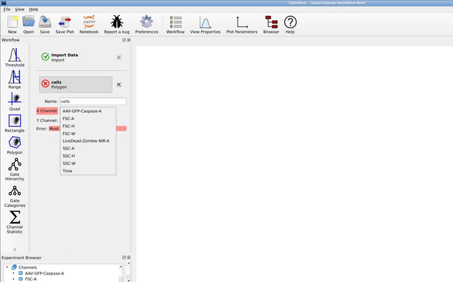
text(await tools.exec_command({cmd:"cu click 222 379\ncu click 277 384\ncu screenshot /tmp/screen.png",max_output_tokens:1000})); image((await tools.view_image({path:"/tmp/screen.png"})).image_url);
Script completed Wall time 0.3 seconds Output:
{"chunk_id":"b44bdd","wall_time_seconds":0.101894951,"exit_code":0,"original_token_count":4,"output":"/tmp/screen.png\n"}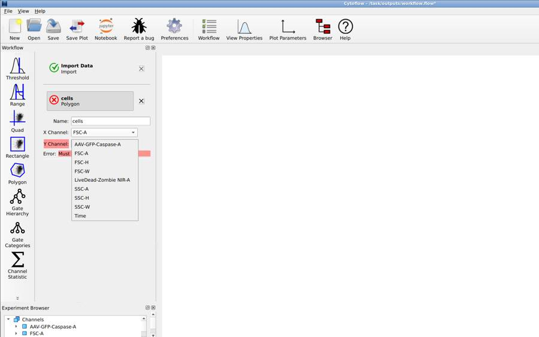
text(await tools.exec_command({cmd:"cu click 227 503\ncu click 654 76\nsleep 2\ncu screenshot /tmp/screen.png",max_output_tokens:1000})); image((await tools.view_image({path:"/tmp/screen.png"})).image_url);
Script completed Wall time 2.3 seconds Output:
{"chunk_id":"b2d8ab","wall_time_seconds":2.109395909,"exit_code":0,"original_token_count":4,"output":"/tmp/screen.png\n"}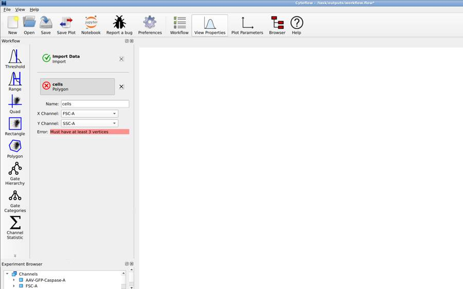
text(await tools.exec_command({cmd:"sleep 10\ncu screenshot /tmp/screen.png",yield_time_ms:1000,max_output_tokens:1000}));
text(await tools.write_stdin({session_id:78154,chars:"",yield_time_ms:1000,max_output_tokens:1000}));
Script completed
Wall time 1.2 seconds
Output:
{"chunk_id":"cdd212","wall_time_seconds":1.001217975,"session_id":93048,"original_token_count":0,"output":""}
{"chunk_id":"3c6537","wall_time_seconds":0.00000837,"exit_code":0,"original_token_count":4,"output":"/tmp/screen.png\n"}text(await tools.exec_command({cmd:"cu click 62 30\ncu screenshot /tmp/screen.png",max_output_tokens:1000})); image((await tools.view_image({path:"/tmp/screen.png"})).image_url);
Script completed Wall time 0.2 seconds Output:
{"chunk_id":"bfd0c8","wall_time_seconds":0.036604246,"exit_code":0,"original_token_count":4,"output":"/tmp/screen.png\n"}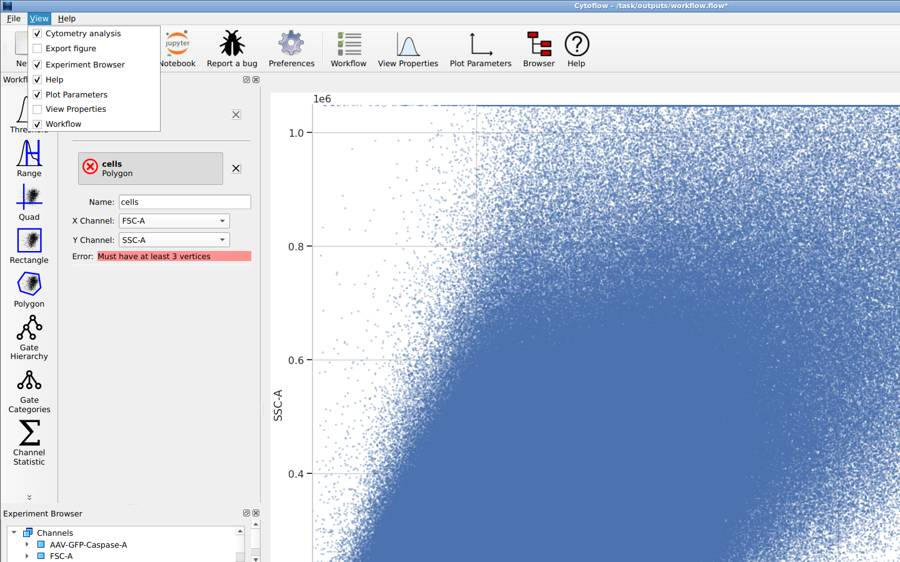
text(await tools.exec_command({cmd:"cu click 116 175\ncu screenshot /tmp/screen.png",max_output_tokens:1000})); image((await tools.view_image({path:"/tmp/screen.png"})).image_url);
Script completed Wall time 0.2 seconds Output:
{"chunk_id":"6adfcc","wall_time_seconds":0.039230025,"exit_code":0,"original_token_count":4,"output":"/tmp/screen.png\n"}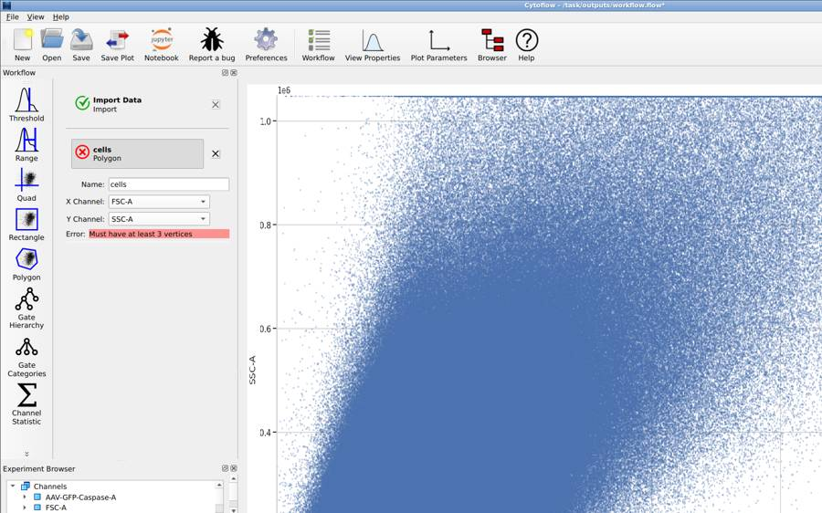
text(await tools.exec_command({cmd:"cu click 715 10 double\ncu screenshot /tmp/screen.png",max_output_tokens:1000})); image((await tools.view_image({path:"/tmp/screen.png"})).image_url);
Script completed Wall time 0.3 seconds Output:
{"chunk_id":"27ac5c","wall_time_seconds":0.119170434,"exit_code":0,"original_token_count":4,"output":"/tmp/screen.png\n"}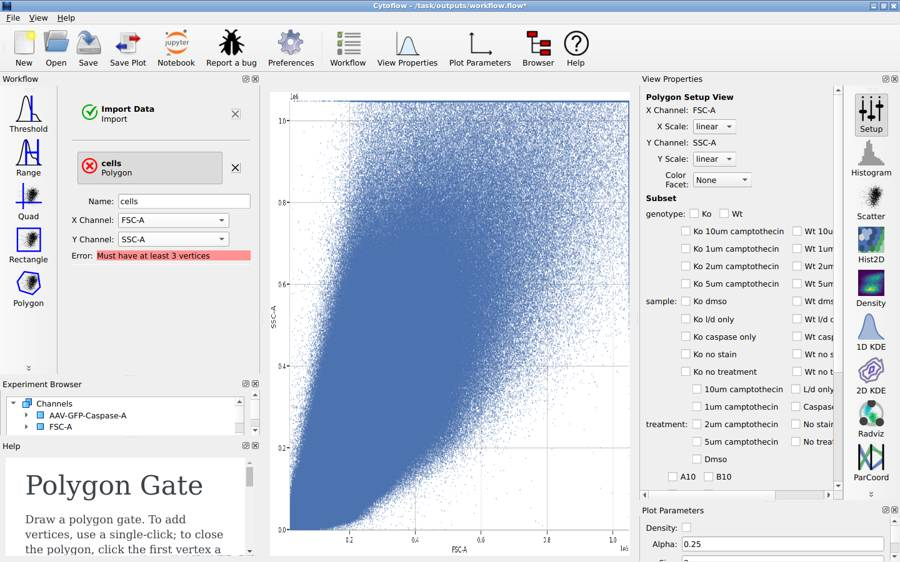
text(await tools.exec_command({cmd:"cu click 1145 201\ncu screenshot /tmp/screen.png",max_output_tokens:1000})); image((await tools.view_image({path:"/tmp/screen.png"})).image_url);
Script completed Wall time 0.2 seconds Output:
{"chunk_id":"4894df","wall_time_seconds":0.015015464,"exit_code":0,"original_token_count":4,"output":"/tmp/screen.png\n"}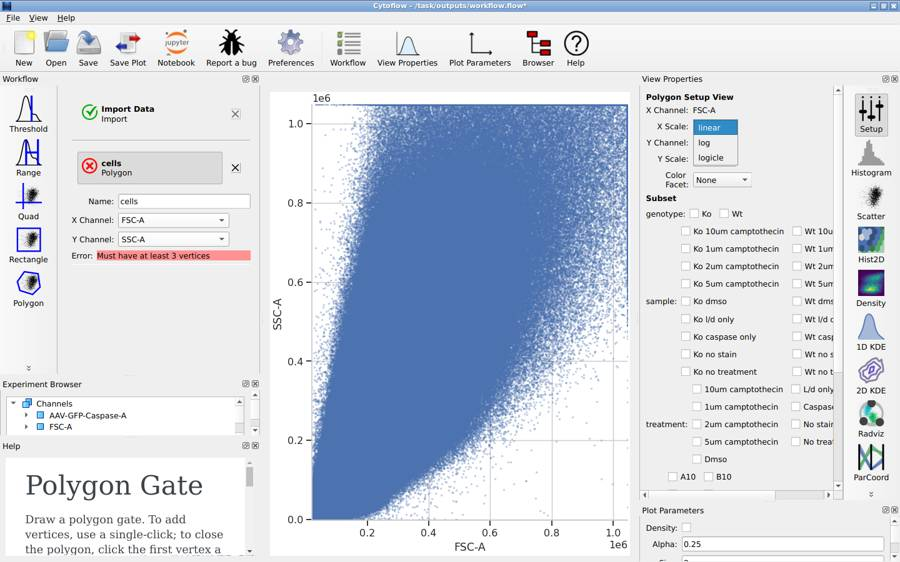
text(await tools.exec_command({cmd:"cu click 1127 229\ncu click 1141 254\ncu key Down\ncu key Return\ncu click 1098 845\ncu click 1274 594\nsleep 3\ncu screenshot /tmp/screen.png",max_output_tokens:1000})); image((await tools.view_image({path:"/tmp/screen.png"})).image_url);
Script completed Wall time 3.5 seconds Output:
{"chunk_id":"d2d0df","wall_time_seconds":3.3638785860000002,"exit_code":0,"original_token_count":4,"output":"/tmp/screen.png\n"}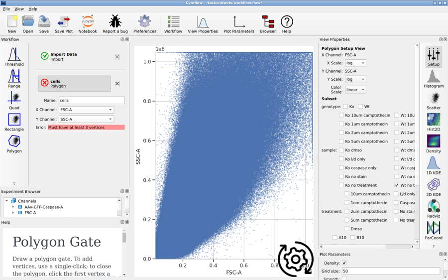
text(await tools.exec_command({cmd:"sleep 8\ncu screenshot /tmp/screen.png",max_output_tokens:1000})); image((await tools.view_image({path:"/tmp/screen.png"})).image_url);
Script completed Wall time 8.1 seconds Output:
{"chunk_id":"da7256","wall_time_seconds":7.904572169,"exit_code":0,"original_token_count":4,"output":"/tmp/screen.png\n"}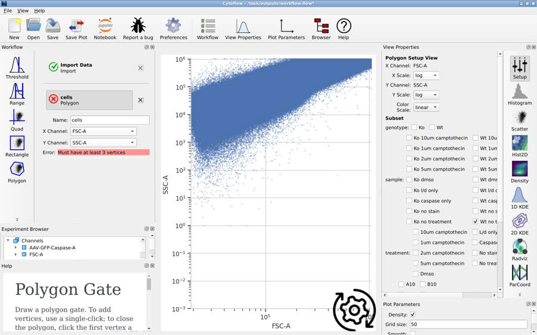
text(await tools.exec_command({cmd:"sleep 15\ncu screenshot /tmp/screen.png",max_output_tokens:1000})); image((await tools.view_image({path:"/tmp/screen.png"})).image_url);
Script completed Wall time 10.2 seconds Output:
{"chunk_id":"5e58fe","wall_time_seconds":10.000451803,"session_id":46598,"original_token_count":0,"output":""}text(await tools.write_stdin({session_id:46598,chars:"",yield_time_ms:1000,max_output_tokens:1000}));
text(await tools.exec_command({cmd:"cu screenshot /tmp/screen.png",max_output_tokens:1000})); image((await tools.view_image({path:"/tmp/screen.png"})).image_url);
Script completed Wall time 0.8 seconds Output:
{"chunk_id":"f1d18b","wall_time_seconds":0.711576666,"exit_code":0,"original_token_count":4,"output":"/tmp/screen.png\n"}{"chunk_id":"fcb60d","wall_time_seconds":0.0000039,"exit_code":0,"original_token_count":4,"output":"/tmp/screen.png\n"}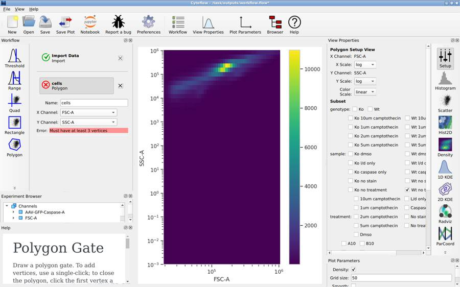
text(await tools.exec_command({cmd:"cu drag 1190 803 1190 560\ncu click 1153 287\ncu key Down\ncu key Return\ncu screenshot /tmp/screen.png",max_output_tokens:1000})); image((await tools.view_image({path:"/tmp/screen.png"})).image_url);
Script completed Wall time 0.2 seconds Output:
{"chunk_id":"22de3f","wall_time_seconds":0.067603254,"exit_code":0,"original_token_count":4,"output":"/tmp/screen.png\n"}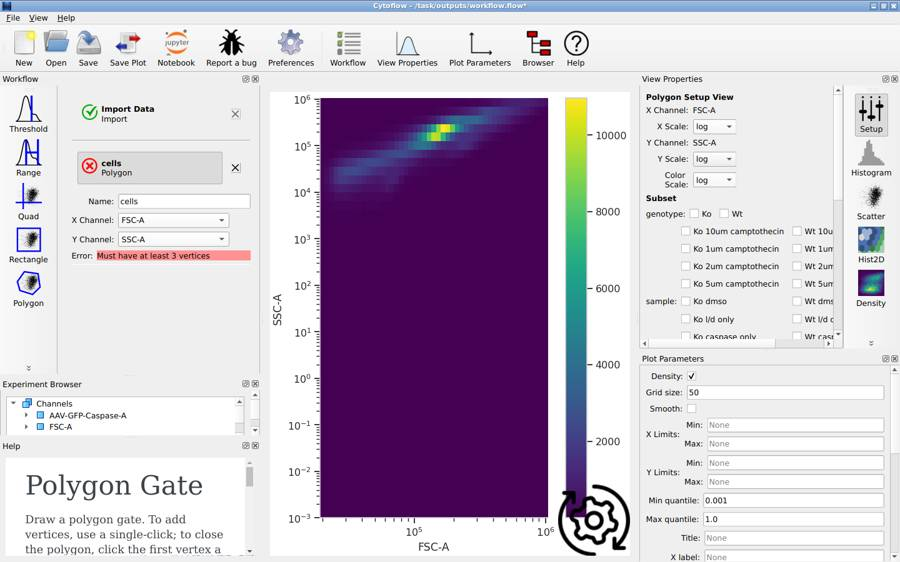
text(await tools.exec_command({cmd:"cu click 1235 680\ncu key ctrl+a\ncu type 10000\ncu key Tab\ncu click 1258 741\ncu key ctrl+a\ncu type 1000\ncu key Tab\ncu click 1251 628\ncu key ctrl+a\ncu type 100\ncu key Tab\nsleep 8\ncu screenshot /tmp/screen.png",max_output_tokens:1000})); image((await tools.view_image({path:"/tmp/screen.png"})).image_url);
Script completed Wall time 8.8 seconds Output:
{"chunk_id":"b0032d","wall_time_seconds":8.651921211,"exit_code":0,"original_token_count":4,"output":"/tmp/screen.png\n"}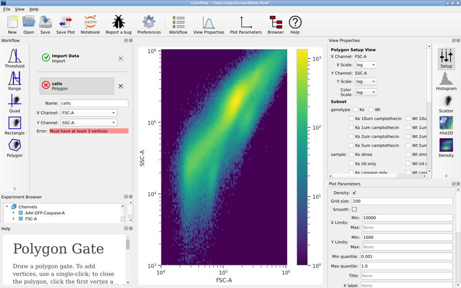
text(await tools.exec_command({cmd:"cu click 655 482\ncu click 698 523\ncu click 800 418\ncu click 894 274\ncu click 894 155\ncu click 801 155\ncu click 713 293\ncu click 655 399\ncu click 655 482 double\nsleep 4\ncu key ctrl+s\ncu screenshot /tmp/screen.png",max_output_tokens:1000})); image((await tools.view_image({path:"/tmp/screen.png"})).image_url);
Script completed Wall time 5.1 seconds Output:
{"chunk_id":"eb71f5","wall_time_seconds":4.969187198,"exit_code":0,"original_token_count":4,"output":"/tmp/screen.png\n"}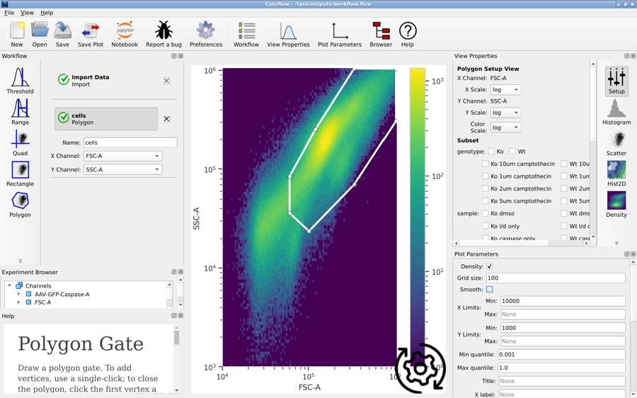
text(await tools.exec_command({cmd:"cu scroll 1241 486 down 3\ncu screenshot /tmp/screen.png",max_output_tokens:1000})); image((await tools.view_image({path:"/tmp/screen.png"})).image_url);
Script completed Wall time 0.4 seconds Output:
{"chunk_id":"d016e8","wall_time_seconds":0.203510302,"exit_code":0,"original_token_count":4,"output":"/tmp/screen.png\n"}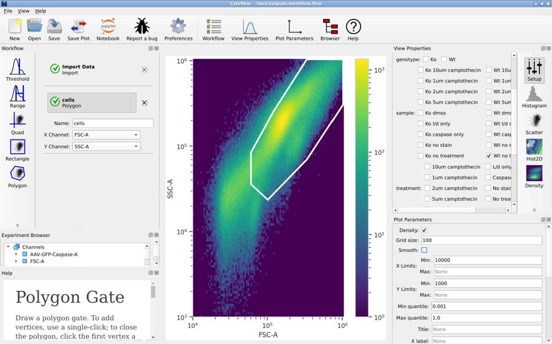
text(await tools.exec_command({cmd:"cu click 1097 407\ncu click 1275 407\nsleep 4\ncu screenshot /tmp/screen.png",max_output_tokens:1000})); image((await tools.view_image({path:"/tmp/screen.png"})).image_url);
Script completed Wall time 4.3 seconds Output:
{"chunk_id":"8aee9b","wall_time_seconds":4.1082298,"exit_code":0,"original_token_count":4,"output":"/tmp/screen.png\n"}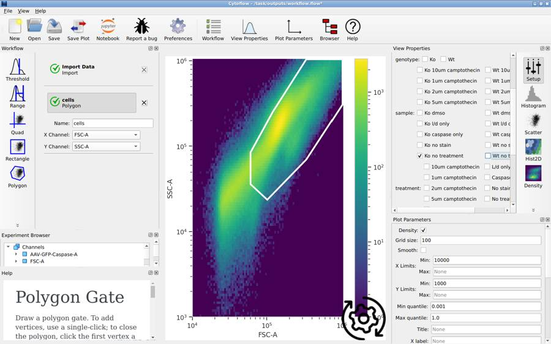
text(await tools.exec_command({cmd:"cu click 46 450\ncu click 276 408\ncu screenshot /tmp/screen.png",max_output_tokens:1000})); image((await tools.view_image({path:"/tmp/screen.png"})).image_url);
Script completed Wall time 0.3 seconds Output:
{"chunk_id":"76ca4b","wall_time_seconds":0.105669069,"exit_code":0,"original_token_count":4,"output":"/tmp/screen.png\n"}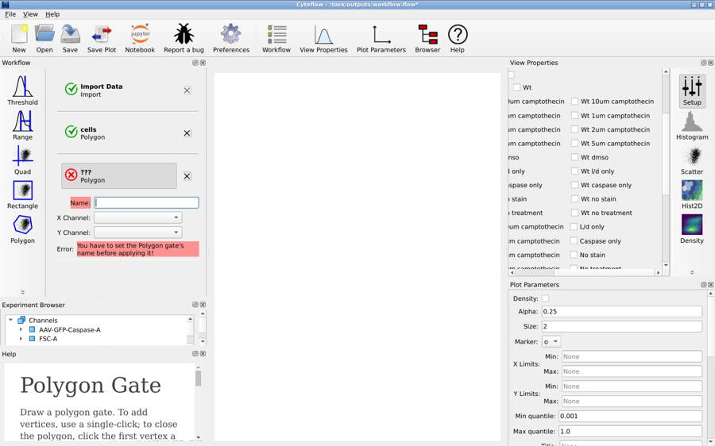
text(await tools.exec_command({cmd:"cu type singlets\ncu click 279 439\ncu key Down\ncu key Down\ncu key Return\ncu click 281 469\ncu key Down\ncu key Down\ncu key Down\ncu key Return\ncu scroll 1224 245 up 10\ncu drag 1086 550 1030 550\ncu click 1099 601\nsleep 3\ncu screenshot /tmp/screen.png",max_output_tokens:1000})); image((await tools.view_image({path:"/tmp/screen.png"})).image_url);
Script completed Wall time 4.7 seconds Output:
{"chunk_id":"1e5add","wall_time_seconds":4.524517189,"exit_code":0,"original_token_count":4,"output":"/tmp/screen.png\n"}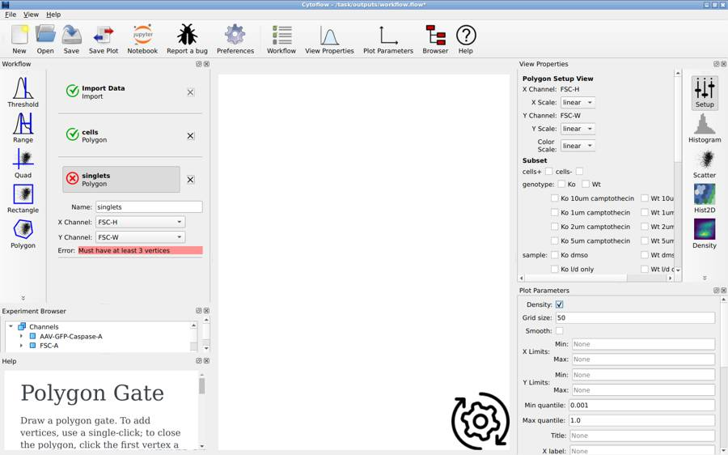
text(await tools.exec_command({cmd:"cu click 275 439\ncu key Up\ncu key Return\ncu click 275 469\ncu key Up\ncu key Return\ncu click 1086 338\ncu click 1274 505\ncu click 1145 287\ncu key Down\ncu key Return\ncu click 1229 628\ncu key ctrl+a\ncu type 100\ncu key Tab\nsleep 10\ncu screenshot /tmp/screen.png",yield_time_ms:1000,max_output_tokens:1000}));
Script completed
Wall time 1.2 seconds
Output:
{"chunk_id":"8c5e26","wall_time_seconds":1.001006545,"session_id":21265,"original_token_count":0,"output":""}text(await tools.write_stdin({session_id:21265,chars:"",yield_time_ms:1000,max_output_tokens:1000}));
text(await tools.exec_command({cmd:"cu screenshot /tmp/screen.png",max_output_tokens:1000})); image((await tools.view_image({path:"/tmp/screen.png"})).image_url);
Script completed Wall time 0.6 seconds Output:
{"chunk_id":"fa1cc4","wall_time_seconds":0.444334619,"exit_code":0,"original_token_count":4,"output":"/tmp/screen.png\n"}{"chunk_id":"67c4c4","wall_time_seconds":0.00000353,"exit_code":0,"original_token_count":4,"output":"/tmp/screen.png\n"}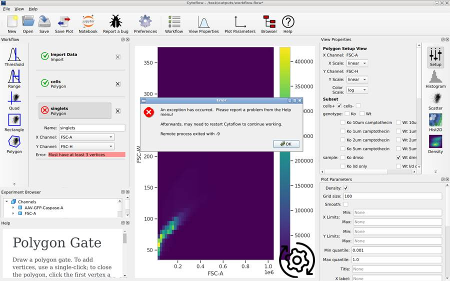
text(await tools.exec_command({cmd:"cu click 918 460\ncu key ctrl+s\ncu key alt+F4\nsleep 2\ncu screenshot /tmp/screen.png",max_output_tokens:1000})); image((await tools.view_image({path:"/tmp/screen.png"})).image_url);
Script completed Wall time 2.2 seconds Output:
{"chunk_id":"6d6962","wall_time_seconds":2.050602262,"exit_code":0,"original_token_count":4,"output":"/tmp/screen.png\n"}
text(await tools.exec_command({cmd:"cu click 713 410 right\ncu screenshot /tmp/screen.png",max_output_tokens:1000})); image((await tools.view_image({path:"/tmp/screen.png"})).image_url);
Script completed Wall time 0.2 seconds Output:
{"chunk_id":"0991d4","wall_time_seconds":0.00000421,"exit_code":0,"original_token_count":4,"output":"/tmp/screen.png\n"}
text(await tools.exec_command({cmd:"sleep 7\ncu screenshot /tmp/screen.png",max_output_tokens:1000})); image((await tools.view_image({path:"/tmp/screen.png"})).image_url);
Script completed Wall time 7.1 seconds Output:
{"chunk_id":"0dbf3c","wall_time_seconds":6.891883379,"exit_code":0,"original_token_count":4,"output":"/tmp/screen.png\n"}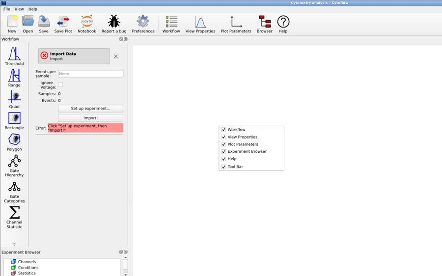
text(await tools.exec_command({cmd:"cu key Escape\ncu click 714 10 double\ncu key ctrl+o\ncu paste /task/outputs/workflow.flow\ncu key Return\nsleep 1\ncu screenshot /tmp/screen.png",max_output_tokens:1000})); image((await tools.view_image({path:"/tmp/screen.png"})).image_url);
Script completed Wall time 2.7 seconds Output:
{"chunk_id":"b3881a","wall_time_seconds":2.484052845,"exit_code":0,"original_token_count":4,"output":"/tmp/screen.png\n"}
text(await tools.exec_command({cmd:"cu click 828 428\ncu click 230 182\ncu click 279 353\ncu screenshot /tmp/screen.png",max_output_tokens:1000})); image((await tools.view_image({path:"/tmp/screen.png"})).image_url);
Script completed Wall time 0.4 seconds Output:
{"chunk_id":"8eb52f","wall_time_seconds":0.20903898,"exit_code":0,"original_token_count":4,"output":"/tmp/screen.png\n"}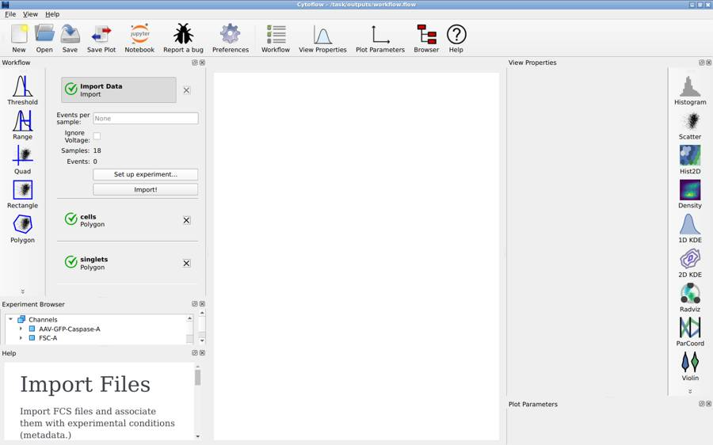
text(await tools.exec_command({cmd:"cu click 285 352\nsleep 1\ncu screenshot /tmp/screen.png",max_output_tokens:1000})); image((await tools.view_image({path:"/tmp/screen.png"})).image_url);
Script completed Wall time 1.2 seconds Output:
{"chunk_id":"ba6e4a","wall_time_seconds":1.002675164,"exit_code":0,"original_token_count":4,"output":"/tmp/screen.png\n"}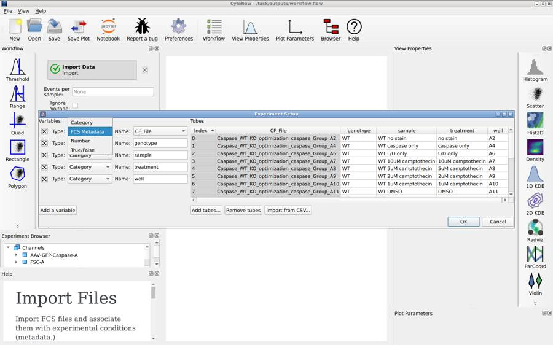
text(await tools.exec_command({cmd:"cu key Escape\ncu click 1299 579\ncu click 290 383\nsleep 40\ncu screenshot /tmp/screen.png",yield_time_ms:1000,max_output_tokens:1000}));
Script completed
Wall time 1.2 seconds
Output:
{"chunk_id":"ef8a93","wall_time_seconds":1.001201995,"session_id":83265,"original_token_count":0,"output":""}text(await tools.write_stdin({session_id:83265,chars:"",yield_time_ms:1000,max_output_tokens:1000}));
text(await tools.exec_command({cmd:"cu screenshot /tmp/screen.png",max_output_tokens:1000})); image((await tools.view_image({path:"/tmp/screen.png"})).image_url);
Script completed Wall time 5.1 seconds Output:
{"chunk_id":"ecce14","wall_time_seconds":5.000971786,"session_id":83265,"original_token_count":0,"output":""}{"chunk_id":"e6f19c","wall_time_seconds":0.00000364,"exit_code":0,"original_token_count":4,"output":"/tmp/screen.png\n"}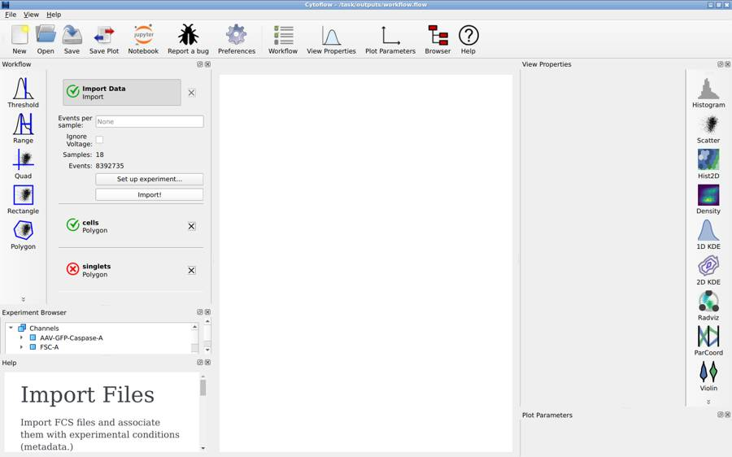
text(await tools.exec_command({cmd:"cu click 239 533\nsleep 4\ncu screenshot /tmp/screen.png",max_output_tokens:1000})); image((await tools.view_image({path:"/tmp/screen.png"})).image_url);
Script completed Wall time 4.2 seconds Output:
{"chunk_id":"ef5c89","wall_time_seconds":4.00525374,"exit_code":0,"original_token_count":4,"output":"/tmp/screen.png\n"}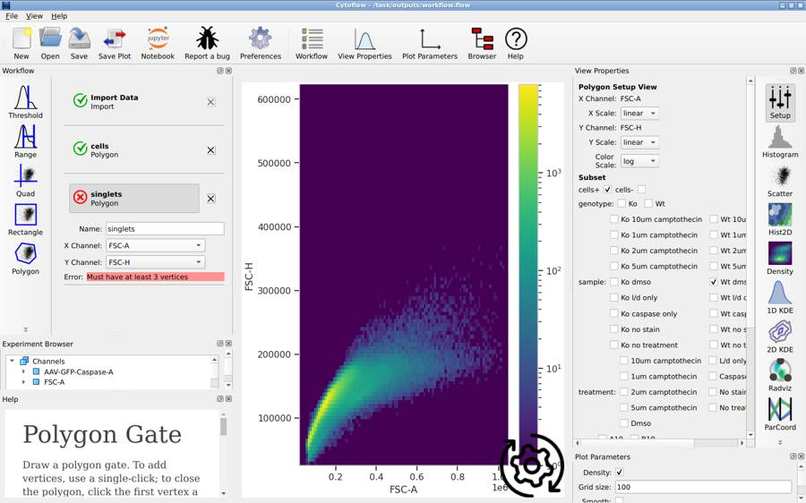
text(await tools.exec_command({cmd:"cu drag 1190 803 1190 560\ncu click 1248 771\ncu key ctrl+a\ncu type 350000\ncu key Tab\ncu click 1251 741\ncu key ctrl+a\ncu type 0\ncu key Tab\ncu click 1246 681\ncu key ctrl+a\ncu type 0\ncu key Tab\nsleep 3\ncu screenshot /tmp/screen.png",max_output_tokens:1000})); image((await tools.view_image({path:"/tmp/screen.png"})).image_url);
Script completed Wall time 3.8 seconds Output:
{"chunk_id":"a20978","wall_time_seconds":3.595725457,"exit_code":0,"original_token_count":4,"output":"/tmp/screen.png\n"}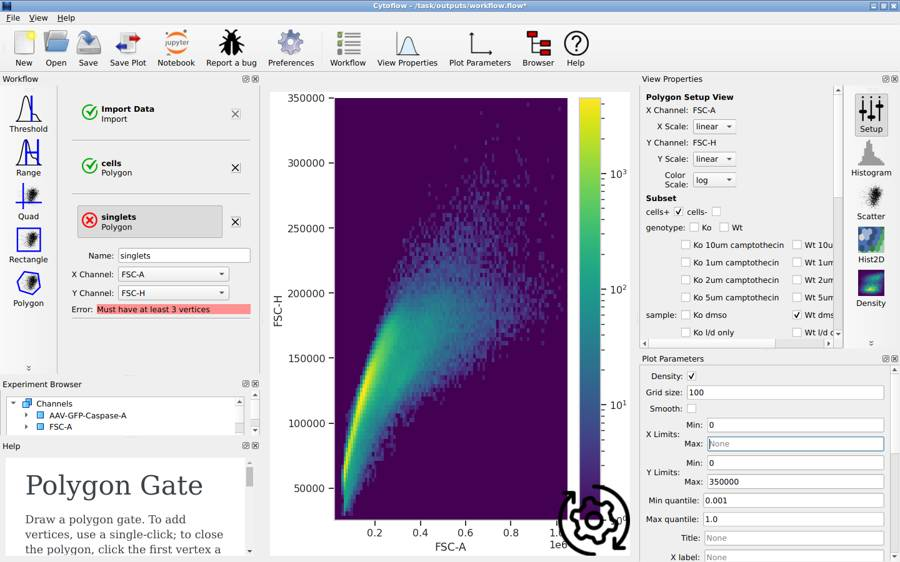
text(await tools.exec_command({cmd:"cu click 1267 709\ncu key ctrl+a\ncu type 1050000\ncu key Tab\nsleep 4\ncu screenshot /tmp/screen.png",max_output_tokens:1000})); image((await tools.view_image({path:"/tmp/screen.png"})).image_url);
Script completed Wall time 4.4 seconds Output:
{"chunk_id":"2d8417","wall_time_seconds":4.232179142,"exit_code":0,"original_token_count":4,"output":"/tmp/screen.png\n"}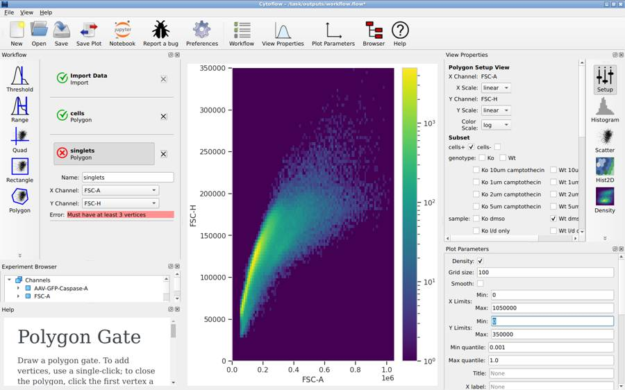
text(await tools.exec_command({cmd:"cu click 549 795\ncu click 571 775\ncu click 624 640\ncu click 731 524\ncu click 873 370\ncu click 891 159\ncu click 749 159\ncu click 624 370\ncu click 567 563\ncu click 549 698\ncu click 549 795 double\nsleep 3\ncu key ctrl+s\ncu screenshot /tmp/screen.png",max_output_tokens:1000})); image((await tools.view_image({path:"/tmp/screen.png"})).image_url);
Script completed Wall time 4.4 seconds Output:
{"chunk_id":"4926db","wall_time_seconds":4.18359703,"exit_code":0,"original_token_count":4,"output":"/tmp/screen.png\n"}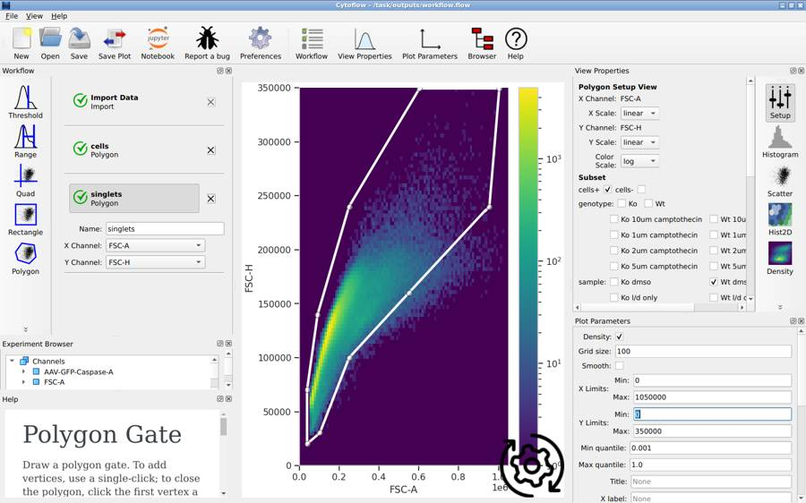
text(await tools.exec_command({cmd:"cu click 46 243\ncu screenshot /tmp/screen.png",max_output_tokens:1000})); image((await tools.view_image({path:"/tmp/screen.png"})).image_url);
Script completed Wall time 0.2 seconds Output:
{"chunk_id":"2a750e","wall_time_seconds":0.005477678,"exit_code":0,"original_token_count":4,"output":"/tmp/screen.png\n"}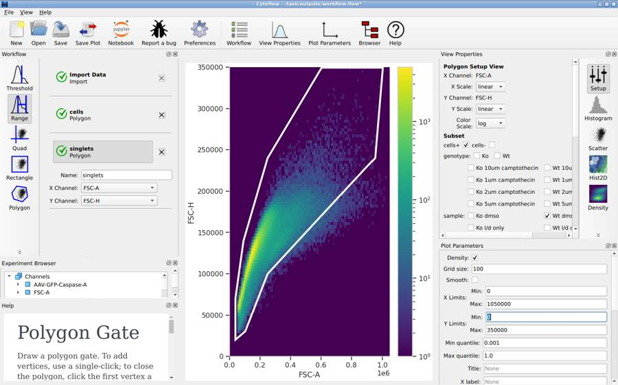
text(await tools.exec_command({cmd:"cu click 46 246\nsleep 1\ncu screenshot /tmp/screen.png",max_output_tokens:1000})); image((await tools.view_image({path:"/tmp/screen.png"})).image_url);
Script completed Wall time 1.2 seconds Output:
{"chunk_id":"f4656c","wall_time_seconds":1.001084735,"exit_code":0,"original_token_count":4,"output":"/tmp/screen.png\n"}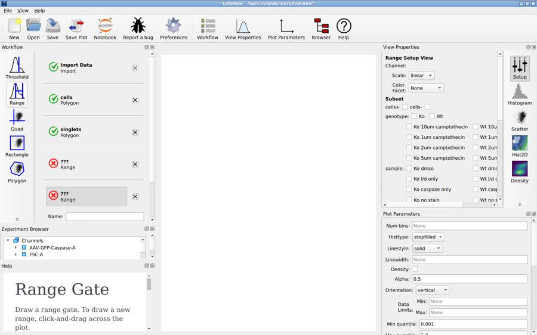
text(await tools.exec_command({cmd:"cu click 362 442\ncu scroll 331 536 down 5\ncu screenshot /tmp/screen.png",max_output_tokens:1000})); image((await tools.view_image({path:"/tmp/screen.png"})).image_url);
Script completed Wall time 0.7 seconds Output:
{"chunk_id":"e499ed","wall_time_seconds":0.506625725,"exit_code":0,"original_token_count":4,"output":"/tmp/screen.png\n"}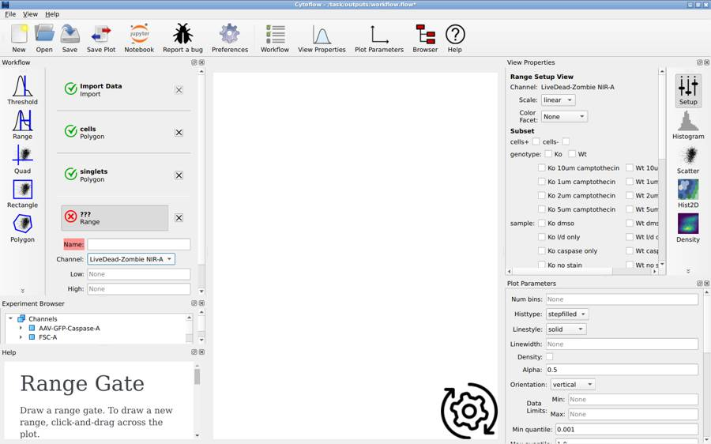
text(await tools.exec_command({cmd:"cu click 1275 480\ncu click 1086 287\ncu click 249 495\ncu type live\ncu click 1135 201\ncu key End\ncu key Return\ncu scroll 1244 471 down 4\ncu screenshot /tmp/screen.png",max_output_tokens:1000})); image((await tools.view_image({path:"/tmp/screen.png"})).image_url);
Script completed Wall time 1.1 seconds Output:
{"chunk_id":"7a8f7a","wall_time_seconds":0.869336846,"exit_code":0,"original_token_count":4,"output":"/tmp/screen.png\n"}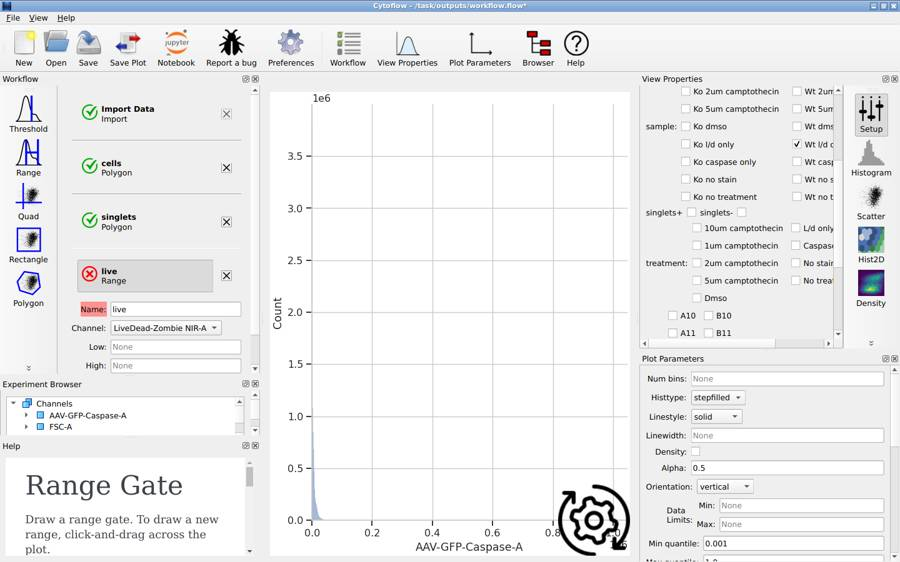
text(await tools.exec_command({cmd:"cu click 1106 338\nsleep 5\ncu screenshot /tmp/screen.png",max_output_tokens:1000})); image((await tools.view_image({path:"/tmp/screen.png"})).image_url);
Script completed Wall time 5.2 seconds Output:
{"chunk_id":"87ca69","wall_time_seconds":5.004247755,"exit_code":0,"original_token_count":4,"output":"/tmp/screen.png\n"}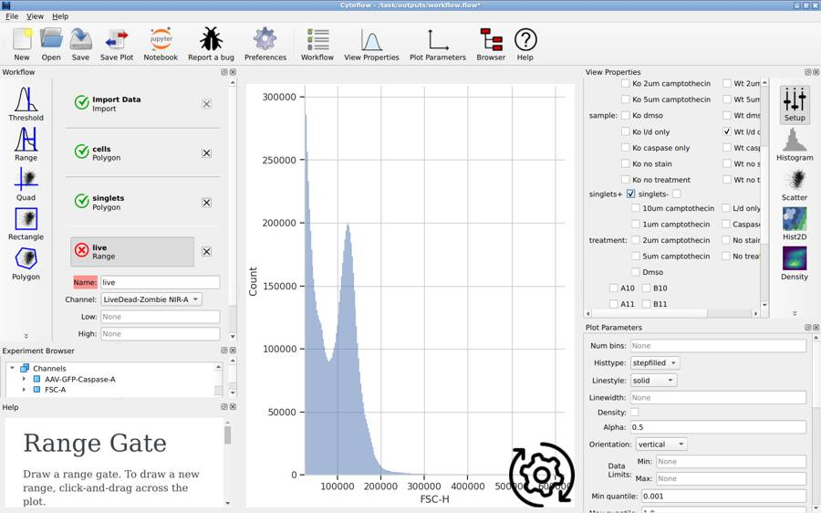
text(await tools.exec_command({cmd:"sleep 10\ncu screenshot /tmp/screen.png",yield_time_ms:1000,max_output_tokens:1000}));
Script completed
Wall time 1.2 seconds
Output:
{"chunk_id":"272858","wall_time_seconds":1.001185925,"session_id":86273,"original_token_count":0,"output":""}text(await tools.write_stdin({session_id:86273,chars:"",yield_time_ms:1000,max_output_tokens:1000}));
text(await tools.exec_command({cmd:"cu screenshot /tmp/screen.png",max_output_tokens:1000})); image((await tools.view_image({path:"/tmp/screen.png"})).image_url);
Script completed Wall time 3.9 seconds Output:
{"chunk_id":"06dc8f","wall_time_seconds":3.77051071,"exit_code":0,"original_token_count":4,"output":"/tmp/screen.png\n"}{"chunk_id":"537073","wall_time_seconds":0.0000045,"exit_code":0,"original_token_count":4,"output":"/tmp/screen.png\n"}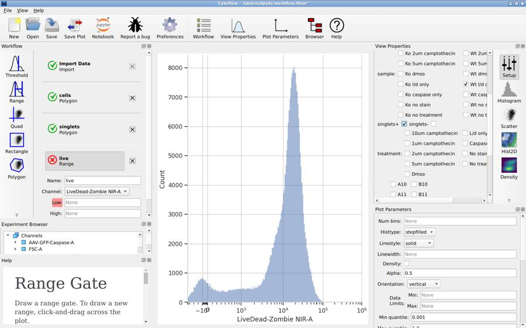
text(await tools.exec_command({cmd:"cu click 1274 286\ncu click 1274 258\ncu click 1097 230\ncu click 1097 258\ncu click 1097 286\ncu scroll 1233 237 up 10\ncu click 1141 236\ncu screenshot /tmp/screen.png",max_output_tokens:1000})); image((await tools.view_image({path:"/tmp/screen.png"})).image_url);
Script completed Wall time 1.7 seconds Output:
{"chunk_id":"b3dfe2","wall_time_seconds":1.537938239,"exit_code":0,"original_token_count":4,"output":"/tmp/screen.png\n"}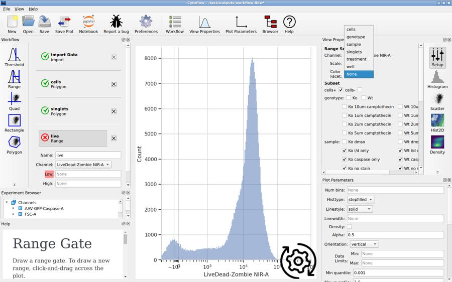
text(await tools.exec_command({cmd:"cu click 1131 140\ncu click 1113 724\ncu click 1144 636\ncu key Home\ncu key Return\ncu click 1222 606\ncu key ctrl+a\ncu type 150\ncu key Tab\nsleep 7\ncu screenshot /tmp/screen.png",max_output_tokens:1000})); image((await tools.view_image({path:"/tmp/screen.png"})).image_url);
Script completed Wall time 7.6 seconds Output:
{"chunk_id":"e96cdd","wall_time_seconds":7.471802416,"exit_code":0,"original_token_count":4,"output":"/tmp/screen.png\n"}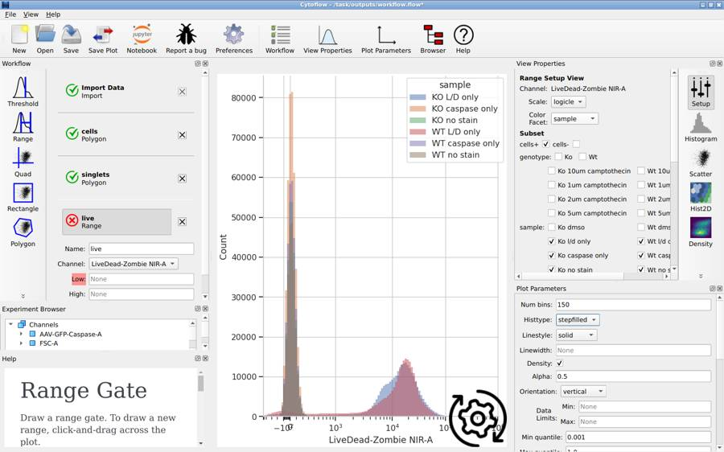
text(await tools.exec_command({cmd:"cu click 1148 635\ncu screenshot /tmp/screen.png",max_output_tokens:1000})); image((await tools.view_image({path:"/tmp/screen.png"})).image_url);
Script completed Wall time 0.2 seconds Output:
{"chunk_id":"ff649f","wall_time_seconds":0.002561569,"exit_code":0,"original_token_count":4,"output":"/tmp/screen.png\n"}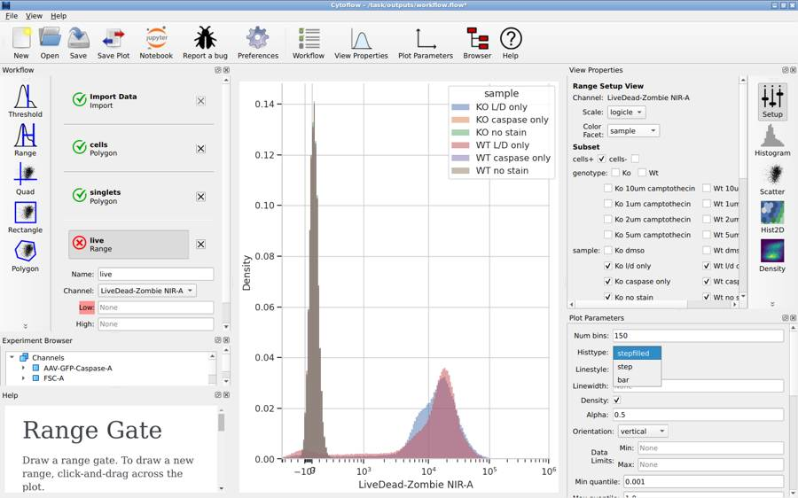
text(await tools.exec_command({cmd:"cu click 1130 660\ncu click 270 553\ncu key ctrl+a\ncu type -1000000\ncu key Tab\ncu click 269 585\ncu key ctrl+a\ncu type 2000\ncu key Tab\nsleep 5\ncu key ctrl+s\ncu screenshot /task/outputs/qc_zombie_controls.png",max_output_tokens:1000})); image((await tools.view_image({path:"/task/outputs/qc_zombie_controls.png"})).image_url);
Script completed Wall time 5.8 seconds Output:
{"chunk_id":"702ead","wall_time_seconds":5.636639272,"exit_code":0,"original_token_count":10,"output":"/task/outputs/qc_zombie_controls.png\n"}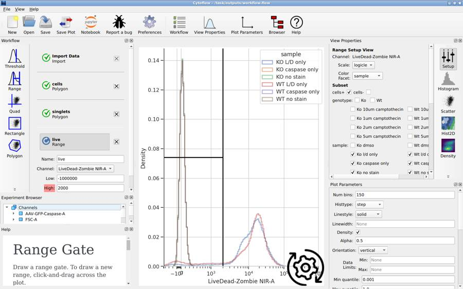
text(await tools.exec_command({cmd:"sleep 3\ncu click 44 176\nsleep 1\ncu scroll 391 548 down 4\ncu screenshot /tmp/screen.png",max_output_tokens:1000})); image((await tools.view_image({path:"/tmp/screen.png"})).image_url);
Script completed Wall time 4.6 seconds Output:
{"chunk_id":"49f135","wall_time_seconds":4.408810824,"exit_code":0,"original_token_count":4,"output":"/tmp/screen.png\n"}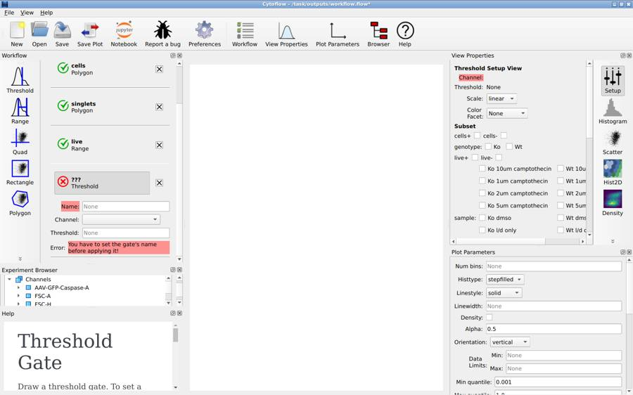
text(await tools.exec_command({cmd:"cu click 278 470\ncu key ctrl+a\ncu type caspase_positive\ncu click 1086 307\ncu click 1097 523\ncu click 1275 523\ncu scroll 1231 472 down 3\ncu screenshot /tmp/screen.png",max_output_tokens:1000})); image((await tools.view_image({path:"/tmp/screen.png"})).image_url);
Script completed Wall time 1.2 seconds Output:
{"chunk_id":"e42d34","wall_time_seconds":1.056562223,"exit_code":0,"original_token_count":4,"output":"/tmp/screen.png\n"}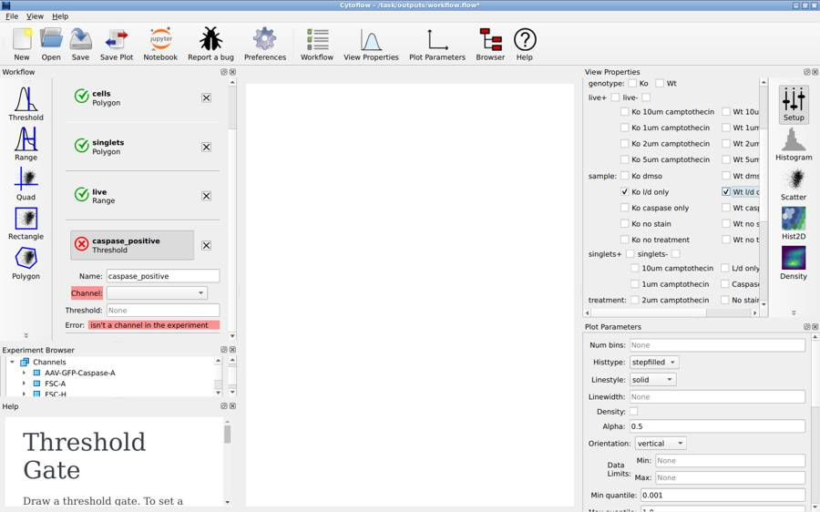
text(await tools.exec_command({cmd:"cu click 1097 364\ncu click 1275 364\ncu click 1097 392\ncu click 1275 392\ncu click 1106 446\ncu scroll 1230 222 up 10\ncu click 1141 225\ncu key End\ncu key Return\ncu click 1143 259\ncu screenshot /tmp/screen.png",max_output_tokens:1000})); image((await tools.view_image({path:"/tmp/screen.png"})).image_url);
Script completed Wall time 1.8 seconds Output:
{"chunk_id":"a87a05","wall_time_seconds":1.666853339,"exit_code":0,"original_token_count":4,"output":"/tmp/screen.png\n"}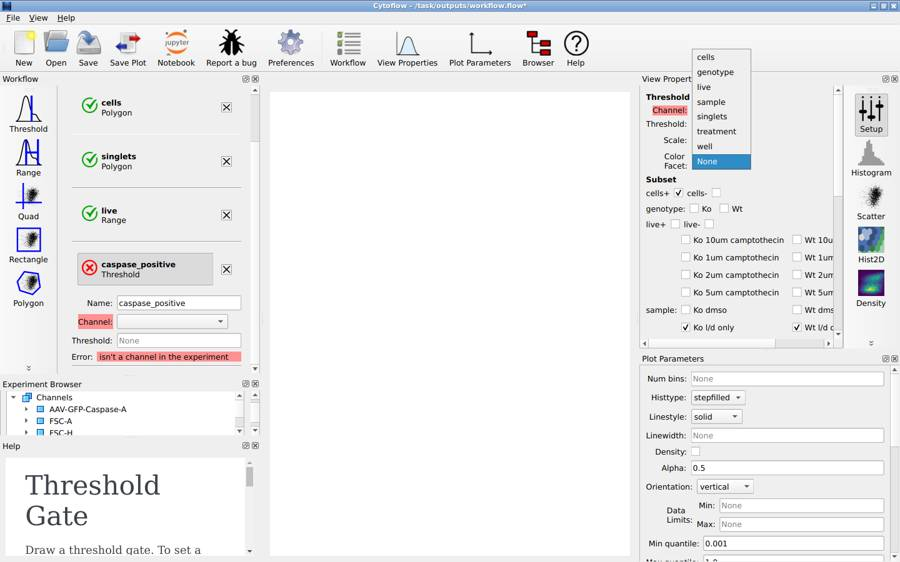
text(await tools.exec_command({cmd:"cu click 1144 162\ncu click 1244 606\ncu key ctrl+a\ncu type 150\ncu key Tab\ncu click 1144 636\ncu key Down\ncu key Return\ncu click 1112 722\ncu click 275 514\ncu key Home\ncu key Return\nsleep 5\ncu screenshot /tmp/screen.png",max_output_tokens:1000})); image((await tools.view_image({path:"/tmp/screen.png"})).image_url);
Script completed Wall time 5.8 seconds Output:
{"chunk_id":"8f213c","wall_time_seconds":5.603557754,"exit_code":0,"original_token_count":4,"output":"/tmp/screen.png\n"}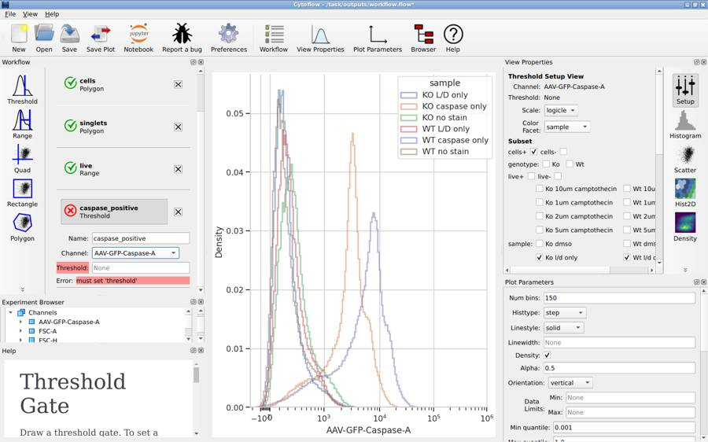
text(await tools.exec_command({cmd:"cu click 277 545\ncu key ctrl+a\ncu type 2000\ncu key Tab\nsleep 4\ncu key ctrl+s\ncu screenshot /task/outputs/qc_caspase_controls.png\ncu scroll 46 533 down 4\ncu screenshot /tmp/screen.png",max_output_tokens:1000})); image((await tools.view_image({path:"/tmp/screen.png"})).image_url);
Script completed Wall time 4.8 seconds Output:
{"chunk_id":"803930","wall_time_seconds":4.630973009,"exit_code":0,"original_token_count":14,"output":"/task/outputs/qc_caspase_controls.png\n/tmp/screen.png\n"}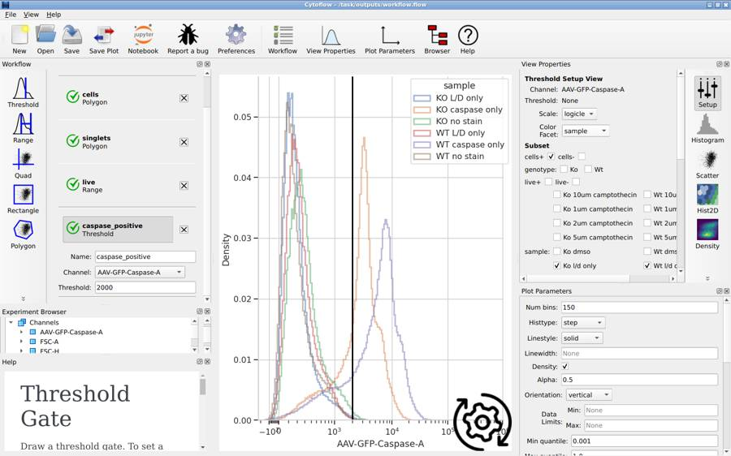
text(await tools.exec_command({cmd:"cu click 46 590\ncu click 46 590\ncu screenshot /tmp/screen.png",max_output_tokens:1000})); image((await tools.view_image({path:"/tmp/screen.png"})).image_url);
Script completed Wall time 0.3 seconds Output:
{"chunk_id":"4a1c62","wall_time_seconds":0.10527526,"exit_code":0,"original_token_count":4,"output":"/tmp/screen.png\n"}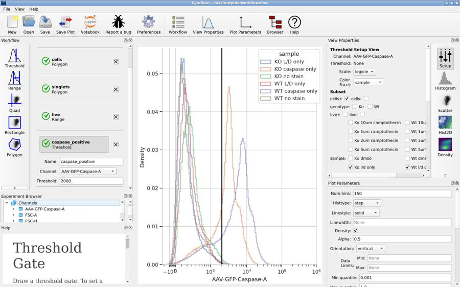
text(await tools.exec_command({cmd:"cu move 46 589\nsleep 2\ncu screenshot /tmp/screen.png",max_output_tokens:1000})); image((await tools.view_image({path:"/tmp/screen.png"})).image_url);
Script completed Wall time 2.1 seconds Output:
{"chunk_id":"873d27","wall_time_seconds":1.9010747590000001,"exit_code":0,"original_token_count":4,"output":"/tmp/screen.png\n"}text(await tools.exec_command({cmd:"cu click 409 615\ncu click 409 714\ncu screenshot /tmp/screen.png",max_output_tokens:1000})); image((await tools.view_image({path:"/tmp/screen.png"})).image_url);
Script completed Wall time 0.3 seconds Output:
{"chunk_id":"cd5fa2","wall_time_seconds":0.108950658,"exit_code":0,"original_token_count":4,"output":"/tmp/screen.png\n"}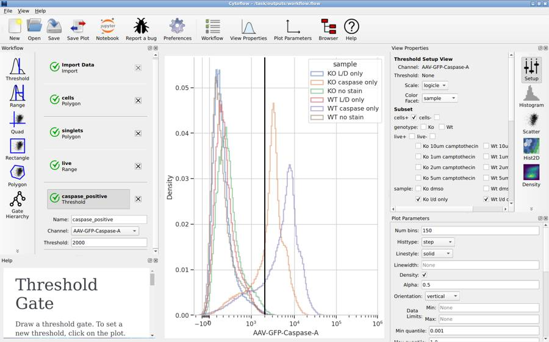
text(await tools.exec_command({cmd:"cu click 408 685\ncu screenshot /tmp/screen.png",max_output_tokens:1000})); image((await tools.view_image({path:"/tmp/screen.png"})).image_url);
Script completed Wall time 0.2 seconds Output:
{"chunk_id":"e4db91","wall_time_seconds":0.003572319,"exit_code":0,"original_token_count":4,"output":"/tmp/screen.png\n"}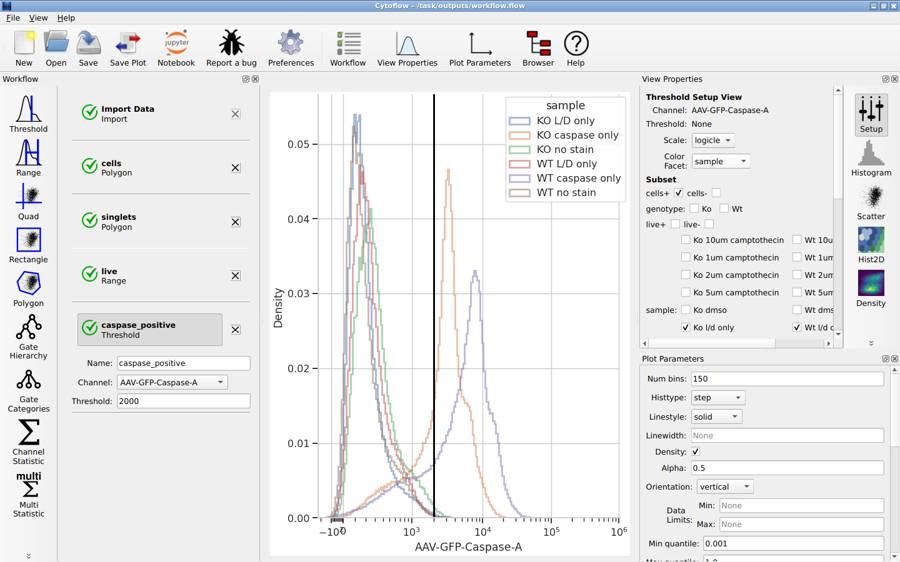
text(await tools.exec_command({cmd:"cu click 45 171\nsleep 1\ncu screenshot /tmp/screen.png",max_output_tokens:1000})); image((await tools.view_image({path:"/tmp/screen.png"})).image_url);
Script completed Wall time 1.2 seconds Output:
{"chunk_id":"418378","wall_time_seconds":1.002589374,"exit_code":0,"original_token_count":4,"output":"/tmp/screen.png\n"}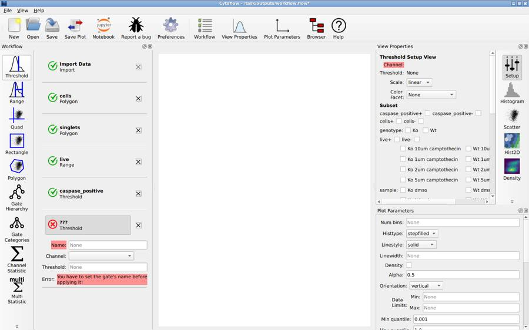
text(await tools.exec_command({cmd:"cu click 277 668\ncu key ctrl+a\ncu type caspase_all\ncu click 276 727\ncu key ctrl+a\ncu type 2000\ncu key Tab\ncu click 1086 330\ncu click 1274 517\ncu click 1140 224\ncu key End\ncu key Return\ncu click 270 698\ncu key Home\ncu key Return\nsleep 5\ncu key ctrl+s\ncu click 44 692\nsleep 1\ncu screenshot /tmp/screen.png",max_output_tokens:1000})); image((await tools.view_image({path:"/tmp/screen.png"})).image_url);
Script completed Wall time 7.3 seconds Output:
{"chunk_id":"1a470c","wall_time_seconds":7.165800633,"exit_code":0,"original_token_count":4,"output":"/tmp/screen.png\n"}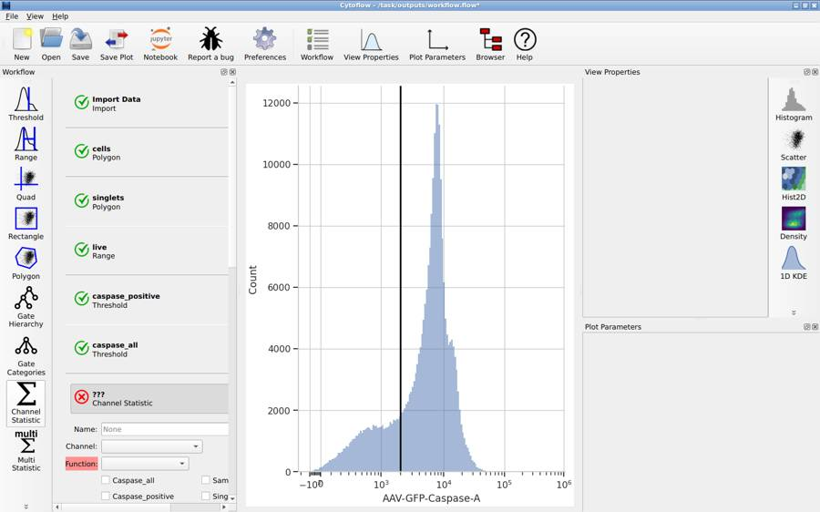
text(await tools.exec_command({cmd:"cu click 272 754\ncu key ctrl+a\ncu type N_all_events\ncu click 267 785\ncu key Home\ncu key Down\ncu key Return\ncu click 254 813\ncu screenshot /tmp/screen.png",max_output_tokens:1000})); image((await tools.view_image({path:"/tmp/screen.png"})).image_url);
Script completed Wall time 0.8 seconds Output:
{"chunk_id":"055cab","wall_time_seconds":0.585804714,"exit_code":0,"original_token_count":4,"output":"/tmp/screen.png\n"}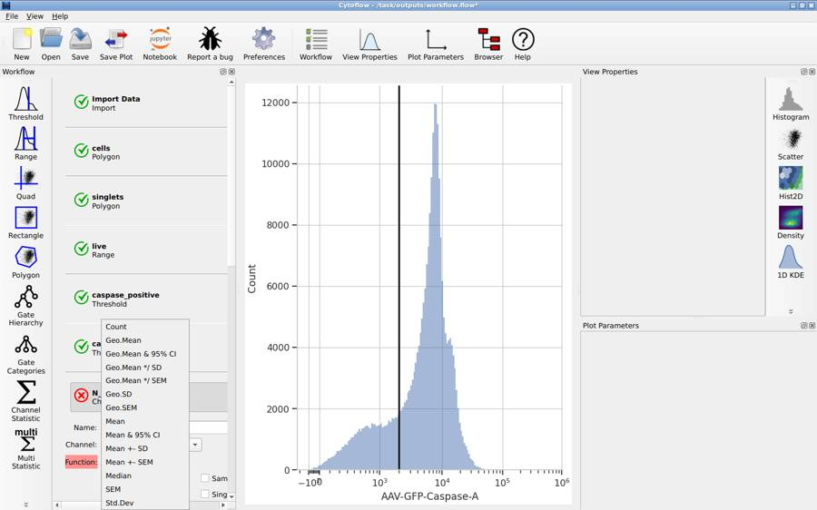
text(await tools.exec_command({cmd:"cu click 204 577\ncu scroll 120 804 down 7\ncu screenshot /tmp/screen.png",max_output_tokens:1000})); image((await tools.view_image({path:"/tmp/screen.png"})).image_url);
Script completed Wall time 0.9 seconds Output:
{"chunk_id":"38eff4","wall_time_seconds":0.706191028,"exit_code":0,"original_token_count":4,"output":"/tmp/screen.png\n"}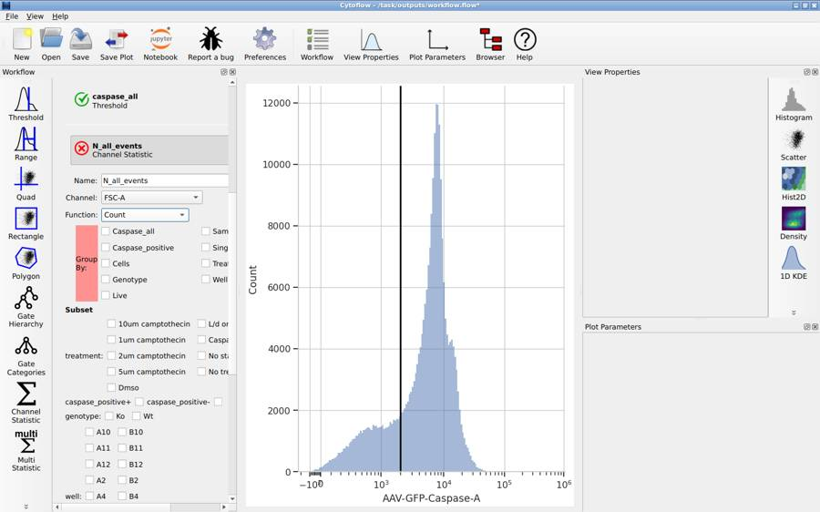
text(await tools.exec_command({cmd:"cu click 361 491\ncu click 1393 550\ncu screenshot /tmp/screen.png",max_output_tokens:1000})); image((await tools.view_image({path:"/tmp/screen.png"})).image_url);
Script completed Wall time 0.3 seconds Output:
{"chunk_id":"b1db22","wall_time_seconds":0.107771728,"exit_code":0,"original_token_count":4,"output":"/tmp/screen.png\n"}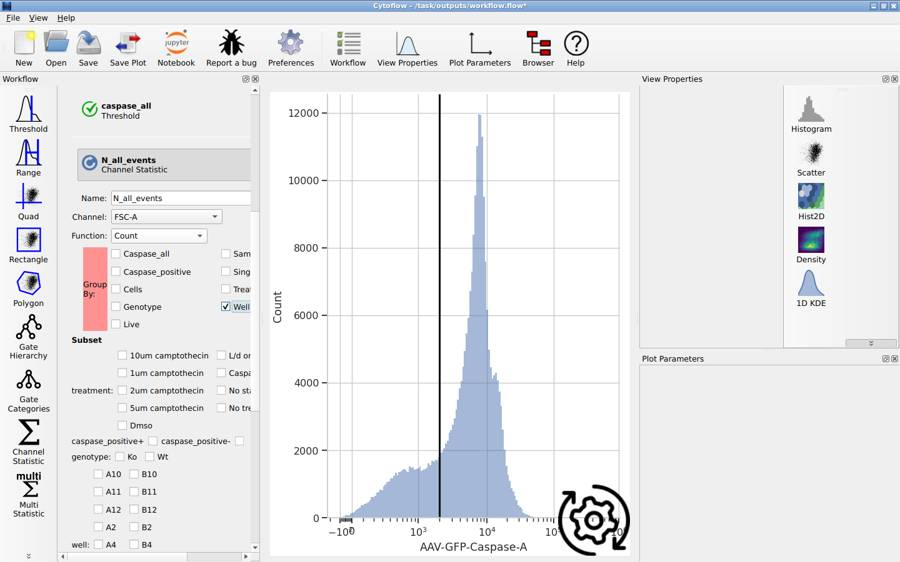
text(await tools.exec_command({cmd:"cu click 1395 550\ncu screenshot /tmp/screen.png",max_output_tokens:1000})); image((await tools.view_image({path:"/tmp/screen.png"})).image_url);
Script completed Wall time 0.2 seconds Output:
{"chunk_id":"d3cdf6","wall_time_seconds":0.0000764,"exit_code":0,"original_token_count":4,"output":"/tmp/screen.png\n"}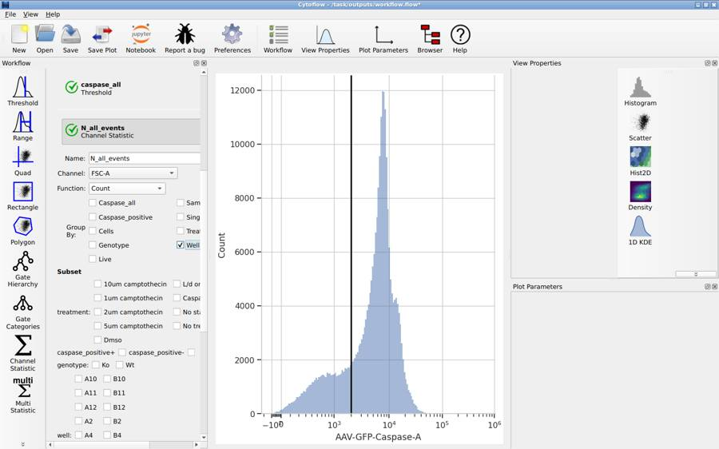
text(await tools.exec_command({cmd:"cu click 1432 574\ncu click 1393 891\ncu screenshot /tmp/screen.png",max_output_tokens:1000})); image((await tools.view_image({path:"/tmp/screen.png"})).image_url);
Script completed Wall time 0.3 seconds Output:
{"chunk_id":"1608f8","wall_time_seconds":0.106880799,"exit_code":0,"original_token_count":4,"output":"/tmp/screen.png\n"}text(await tools.exec_command({cmd:"cu click 1393 891\nsleep 1\ncu screenshot /tmp/screen.png",max_output_tokens:1000})); image((await tools.view_image({path:"/tmp/screen.png"})).image_url);
Script completed Wall time 1.2 seconds Output:
{"chunk_id":"6cbc96","wall_time_seconds":1.000920525,"exit_code":0,"original_token_count":4,"output":"/tmp/screen.png\n"}text(await tools.exec_command({cmd:"cu drag 1394 144 769 291\nsleep 1\ncu screenshot /tmp/screen.png",max_output_tokens:1000})); image((await tools.view_image({path:"/tmp/screen.png"})).image_url);
Script completed Wall time 1.1 seconds Output:
{"chunk_id":"38b7b7","wall_time_seconds":0.929508913,"exit_code":0,"original_token_count":4,"output":"/tmp/screen.png\n"}text(await tools.exec_command({cmd:"cu drag 731 330 25 330\ncu screenshot /tmp/screen.png",max_output_tokens:1000})); image((await tools.view_image({path:"/tmp/screen.png"})).image_url);
Script completed Wall time 0.1 seconds Output:
{"chunk_id":"ba568d","wall_time_seconds":0.00000347,"exit_code":0,"original_token_count":4,"output":"/tmp/screen.png\n"}text(await tools.exec_command({cmd:"cu key alt+Tab\ncu screenshot /tmp/screen.png",max_output_tokens:1000})); image((await tools.view_image({path:"/tmp/screen.png"})).image_url);
Script completed Wall time 0.1 seconds Output:
{"chunk_id":"54e798","wall_time_seconds":0.00000418,"exit_code":0,"original_token_count":4,"output":"/tmp/screen.png\n"}text(await tools.exec_command({cmd:"cu click 999 328\nsleep 1\ncu screenshot /tmp/screen.png",max_output_tokens:1000})); image((await tools.view_image({path:"/tmp/screen.png"})).image_url);
Script completed Wall time 1.2 seconds Output:
{"chunk_id":"fd7ca2","wall_time_seconds":0.999962415,"exit_code":0,"original_token_count":4,"output":"/tmp/screen.png\n"}text(await tools.exec_command({cmd:"cu click 1149 182\ncu key Home\ncu key Return\nsleep 2\ncu click 1153 211\nsleep 1\ncu screenshot /tmp/screen.png",max_output_tokens:1000})); image((await tools.view_image({path:"/tmp/screen.png"})).image_url);
Script completed Wall time 3.3 seconds Output:
{"chunk_id":"375869","wall_time_seconds":3.143642541,"exit_code":0,"original_token_count":4,"output":"/tmp/screen.png\n"}text(await tools.exec_command({cmd:"cu click 979 600\ncu click 1153 181\ncu screenshot /tmp/screen.png",max_output_tokens:1000})); image((await tools.view_image({path:"/tmp/screen.png"})).image_url);
Script completed Wall time 0.3 seconds Output:
{"chunk_id":"4e2121","wall_time_seconds":0.109590118,"exit_code":0,"original_token_count":4,"output":"/tmp/screen.png\n"}text(await tools.exec_command({cmd:"cu click 1147 207\nsleep 1\ncu click 1150 211\nsleep 1\ncu paste /task/outputs/cytoflow_all_events.csv\ncu key Return\nsleep 1\ncu screenshot /tmp/screen.png",max_output_tokens:1000})); image((await tools.view_image({path:"/tmp/screen.png"})).image_url);
Script completed Wall time 4.6 seconds Output:
{"chunk_id":"1ce432","wall_time_seconds":4.453518017,"exit_code":0,"original_token_count":4,"output":"/tmp/screen.png\n"}text(await tools.exec_command({cmd:"cu drag 25 330 27 65\ncu screenshot /tmp/screen.png",max_output_tokens:1000})); image((await tools.view_image({path:"/tmp/screen.png"})).image_url);
text(await tools.exec_command({cmd:"cat /task/outputs/cytoflow_all_events.csv",max_output_tokens:2000}));
Script completed Wall time 0.1 seconds Output:
{"chunk_id":"1e3f10","wall_time_seconds":0.00000435,"exit_code":0,"original_token_count":4,"output":"/tmp/screen.png\n"}{"chunk_id":"127316","wall_time_seconds":0.00000172,"exit_code":0,"original_token_count":59,"output":"well,FSC-A\nA10,552590.0\nA11,377220.0\nA12,409074.0\nA2,365736.0\nA4,440820.0\nA6,412724.0\nA7,395514.0\nA8,384992.0\nA9,428254.0\nB10,539106.0\nB11,561171.0\nB12,538223.0\nB2,392795.0\nB4,605670.0\nB6,457465.0\nB7,612174.0\nB8,493435.0\nB9,425772.0\n"}text(await tools.exec_command({cmd:"cu click 46 692\nsleep 1\ncu scroll 120 803 down 5\ncu screenshot /tmp/screen.png",max_output_tokens:1000})); image((await tools.view_image({path:"/tmp/screen.png"})).image_url);
Script completed Wall time 1.7 seconds Output:
{"chunk_id":"78ac8e","wall_time_seconds":1.507078401,"exit_code":0,"original_token_count":4,"output":"/tmp/screen.png\n"}text(await tools.exec_command({cmd:"cu click 361 264\ncu click 165 783\ncu scroll 119 301 up 5\ncu screenshot /tmp/screen.png",max_output_tokens:1000})); image((await tools.view_image({path:"/tmp/screen.png"})).image_url);
Script completed Wall time 0.8 seconds Output:
{"chunk_id":"c1f7ac","wall_time_seconds":0.608243766,"exit_code":0,"original_token_count":4,"output":"/tmp/screen.png\n"}text(await tools.exec_command({cmd:"cu click 284 402\ncu key ctrl+a\ncu type N_cells\ncu click 272 432\ncu key Home\ncu key Down\ncu key Return\ncu click 258 463\ncu key Home\ncu key Return\nsleep 3\ncu click 1002 62\ncu click 1148 181\ncu key End\ncu key Return\nsleep 2\ncu screenshot /tmp/screen.png",max_output_tokens:1000})); image((await tools.view_image({path:"/tmp/screen.png"})).image_url);
Script completed Wall time 5.9 seconds Output:
{"chunk_id":"6f6d5a","wall_time_seconds":5.735676333,"exit_code":0,"original_token_count":4,"output":"/tmp/screen.png\n"}text(await tools.exec_command({cmd:"sleep 8\ncu click 1149 181\ncu key End\ncu key Return\nsleep 1\ncu screenshot /tmp/screen.png",max_output_tokens:1000})); image((await tools.view_image({path:"/tmp/screen.png"})).image_url);
Script completed Wall time 9.2 seconds Output:
{"chunk_id":"84acc6","wall_time_seconds":9.032762635,"exit_code":0,"original_token_count":4,"output":"/tmp/screen.png\n"}text(await tools.exec_command({cmd:"cu click 1148 210\nsleep 1\ncu paste /task/outputs/cytoflow_cells.csv\ncu key Return\nsleep 1\ncu click 45 692\nsleep 1\ncu scroll 121 800 down 12\ncu screenshot /tmp/screen.png",max_output_tokens:1000})); image((await tools.view_image({path:"/tmp/screen.png"})).image_url);
Script completed Wall time 5.8 seconds Output:
{"chunk_id":"540965","wall_time_seconds":5.657717883,"exit_code":0,"original_token_count":4,"output":"/tmp/screen.png\n"}text(await tools.exec_command({cmd:"cu click 166 517\ncu click 187 582\ncu scroll 120 294 up 7\ncu screenshot /tmp/screen.png",max_output_tokens:1000})); image((await tools.view_image({path:"/tmp/screen.png"})).image_url);
Script completed Wall time 1.0 seconds Output:
{"chunk_id":"c5a167","wall_time_seconds":0.809926648,"exit_code":0,"original_token_count":4,"output":"/tmp/screen.png\n"}text(await tools.exec_command({cmd:"cu click 275 262\ncu key ctrl+a\ncu type N_singlets\ncu click 268 292\ncu key Home\ncu key Down\ncu key Return\ncu click 260 321\ncu key Home\ncu key Return\ncu click 361 435\nsleep 10\ncu click 1004 62\ncu click 1149 181\ncu key End\ncu key Return\nsleep 2\ncu screenshot /tmp/screen.png",yield_time_ms:1000,max_output_tokens:1000}));
Script completed
Wall time 1.2 seconds
Output:
{"chunk_id":"60a617","wall_time_seconds":1.001133265,"session_id":84674,"original_token_count":0,"output":""}text(await tools.write_stdin({session_id:84674,chars:"",yield_time_ms:1000,max_output_tokens:1000}));
text(await tools.exec_command({cmd:"cu screenshot /tmp/screen.png",max_output_tokens:1000})); image((await tools.view_image({path:"/tmp/screen.png"})).image_url);
Script completed Wall time 0.1 seconds Output:
{"chunk_id":"7ad178","wall_time_seconds":0.00000398,"exit_code":0,"original_token_count":4,"output":"/tmp/screen.png\n"}{"chunk_id":"37cb70","wall_time_seconds":0.00000388,"exit_code":0,"original_token_count":4,"output":"/tmp/screen.png\n"}text(await tools.exec_command({cmd:"cu click 1149 211\nsleep 1\ncu paste /task/outputs/cytoflow_singlets.csv\ncu key Return\nsleep 1\ncu click 45 692\nsleep 1\ncu scroll 120 800 down 30\ncu screenshot /tmp/screen.png",max_output_tokens:1000})); image((await tools.view_image({path:"/tmp/screen.png"})).image_url);
Script completed Wall time 7.6 seconds Output:
{"chunk_id":"2e96e8","wall_time_seconds":7.459753891,"exit_code":0,"original_token_count":4,"output":"/tmp/screen.png\n"}text(await tools.exec_command({cmd:"cu click 166 517\ncu click 161 539\ncu click 187 582\ncu scroll 120 294 up 7\ncu click 275 262\ncu key ctrl+a\ncu type N_live\ncu click 268 292\ncu key Home\ncu key Down\ncu key Return\ncu click 260 321\ncu key Home\ncu key Return\ncu click 361 435\nsleep 10\ncu click 1004 62\ncu click 1149 181\ncu key Home\ncu key Down\ncu key Down\ncu key Down\ncu key Return\nsleep 2\ncu screenshot /tmp/screen.png",yield_time_ms:1000,max_output_tokens:1000}));
Script completed
Wall time 1.2 seconds
Output:
{"chunk_id":"17c4f2","wall_time_seconds":1.001063484,"session_id":2833,"original_token_count":0,"output":""}text(await tools.write_stdin({session_id:2833,chars:"",yield_time_ms:1000,max_output_tokens:1000}));
text(await tools.exec_command({cmd:"cu screenshot /tmp/screen.png",max_output_tokens:1000})); image((await tools.view_image({path:"/tmp/screen.png"})).image_url);
Script completed Wall time 0.1 seconds Output:
{"chunk_id":"eb49f4","wall_time_seconds":0.00000353,"exit_code":0,"original_token_count":4,"output":"/tmp/screen.png\n"}{"chunk_id":"169fcc","wall_time_seconds":0.00000373,"exit_code":0,"original_token_count":4,"output":"/tmp/screen.png\n"}text(await tools.exec_command({cmd:"cu click 1149 211\nsleep 1\ncu paste /task/outputs/cytoflow_live.csv\ncu key Return\nsleep 1\ncu click 45 692\nsleep 1\ncu scroll 120 800 down 30\ncu click 244 213\ncu click 166 517\ncu click 161 539\ncu click 187 582\ncu scroll 120 294 up 7\ncu screenshot /tmp/screen.png",max_output_tokens:1000})); image((await tools.view_image({path:"/tmp/screen.png"})).image_url);
Script completed Wall time 8.8 seconds Output:
{"chunk_id":"9bc6e0","wall_time_seconds":8.591390005000001,"exit_code":0,"original_token_count":4,"output":"/tmp/screen.png\n"}text(await tools.exec_command({cmd:"cu click 275 262\ncu key ctrl+a\ncu type N_caspase_positive\ncu click 268 292\ncu key Home\ncu key Down\ncu key Return\ncu click 260 321\ncu key Home\ncu key Return\ncu click 361 435\nsleep 10\ncu click 1004 62\ncu click 1149 181\ncu key Home\ncu key Down\ncu key Down\ncu key Return\nsleep 2\ncu screenshot /tmp/screen.png",yield_time_ms:1000,max_output_tokens:1000}));
Script completed
Wall time 1.2 seconds
Output:
{"chunk_id":"1b3ceb","wall_time_seconds":1.001104685,"session_id":72048,"original_token_count":0,"output":""}text(await tools.write_stdin({session_id:72048,chars:"",yield_time_ms:1000,max_output_tokens:1000}));
text(await tools.exec_command({cmd:"cu screenshot /tmp/screen.png",max_output_tokens:1000})); image((await tools.view_image({path:"/tmp/screen.png"})).image_url);
Script completed Wall time 0.1 seconds Output:
{"chunk_id":"1223c8","wall_time_seconds":0.00000351,"exit_code":0,"original_token_count":4,"output":"/tmp/screen.png\n"}{"chunk_id":"3a6d16","wall_time_seconds":0.00000397,"exit_code":0,"original_token_count":4,"output":"/tmp/screen.png\n"}text(await tools.exec_command({cmd:"cu click 1168 211\nsleep 1\ncu paste /task/outputs/cytoflow_caspase_positive.csv\ncu key Return\nsleep 1\ncu click 45 692\nsleep 1\ncu scroll 120 800 down 30\ncu click 166 517\ncu click 210 560\ncu click 187 582\ncu scroll 120 294 up 7\ncu click 275 262\ncu key ctrl+a\ncu type N_caspase_all\ncu click 268 292\ncu key Home\ncu key Down\ncu key Return\ncu click 260 321\ncu key Home\ncu key Return\ncu click 361 435\nsleep 10\ncu click 1004 62\ncu click 1155 181\ncu key Home\ncu key Down\ncu key Down\ncu key Return\nsleep 2\ncu screenshot /tmp/screen.png",yield_time_ms:1000,max_output_tokens:1000}));
Script completed
Wall time 1.2 seconds
Output:
{"chunk_id":"a2ba6d","wall_time_seconds":1.001084915,"session_id":55894,"original_token_count":0,"output":""}text(await tools.write_stdin({session_id:55894,chars:"",yield_time_ms:1000,max_output_tokens:1000}));
text(await tools.exec_command({cmd:"cu screenshot /tmp/screen.png",max_output_tokens:1000})); image((await tools.view_image({path:"/tmp/screen.png"})).image_url);
Script completed Wall time 0.1 seconds Output:
{"chunk_id":"b68e0d","wall_time_seconds":0.0000035,"exit_code":0,"original_token_count":4,"output":"/tmp/screen.png\n"}{"chunk_id":"d77984","wall_time_seconds":0.00000378,"exit_code":0,"original_token_count":4,"output":"/tmp/screen.png\n"}text(await tools.exec_command({cmd:"cu click 1165 211\nsleep 1\ncu paste /task/outputs/cytoflow_caspase_all.csv\ncu key Return\nsleep 1\ncu key ctrl+s\ncu click 73 60\nsleep 1\ncu screenshot /tmp/screen.png",max_output_tokens:1000})); image((await tools.view_image({path:"/tmp/screen.png"})).image_url);
text(await tools.exec_command({cmd:"python - <<'PY'\nimport pandas as pd\nfrom pathlib import Path\np=Path('/task/outputs')\ndf=pd.read_csv('/task/inputs/plate_layout.csv').set_index('well')\nfor pop in ['all_events','cells','singlets','live','caspase_positive','caspase_all']:\n df[pop]=pd.read_csv(p/f'cytoflow_{pop}.csv').set_index('well').iloc[:,0].astype(int)\nfor m,n,d in [('viable_pct','live','singlets'),('caspase_live_pct','caspase_positive','live'),('caspase_total_pct','caspase_all','singlets')]:\n df[m]=100*df[n]/df[d]\nprint(df[['sample','all_events','singlets','live','viable_pct','caspase_live_pct','caspase_total_pct']].round(3).to_string())\ndf.to_csv(p/'per_well_results.csv')\nPY","max_output_tokens":4000}));
Script completed Wall time 4.7 seconds Output:
{"chunk_id":"e4fe7a","wall_time_seconds":4.486536154,"exit_code":0,"original_token_count":4,"output":"/tmp/screen.png\n"}{"chunk_id":"fbbfe2","wall_time_seconds":0.00000301,"exit_code":127,"original_token_count":12,"output":"/bin/bash: line 1: python: command not found\n"}text(await tools.exec_command({cmd:"cu click 1171 243\ncu screenshot /tmp/screen.png",max_output_tokens:1000})); image((await tools.view_image({path:"/tmp/screen.png"})).image_url);
text(await tools.exec_command({cmd:"python3 - <<'PY'\nimport pandas as pd\nfrom pathlib import Path\np=Path('/task/outputs')\ndf=pd.read_csv('/task/inputs/plate_layout.csv').set_index('well')\nfor pop in ['all_events','cells','singlets','live','caspase_positive','caspase_all']:\n df[pop]=pd.read_csv(p/f'cytoflow_{pop}.csv').set_index('well').iloc[:,0].astype(int)\nfor m,n,d in [('viable_pct','live','singlets'),('caspase_live_pct','caspase_positive','live'),('caspase_total_pct','caspase_all','singlets')]:\n df[m]=100*df[n]/df[d]\nprint(df[['sample','all_events','singlets','live','viable_pct','caspase_live_pct','caspase_total_pct']].round(3).to_string())\ndf.to_csv(p/'per_well_results.csv')\nPY","max_output_tokens":4000}));
Script completed Wall time 0.6 seconds Output:
{"chunk_id":"1f8fd0","wall_time_seconds":0.004750628,"exit_code":0,"original_token_count":4,"output":"/tmp/screen.png\n"}{"chunk_id":"e38060","wall_time_seconds":0.295671817,"exit_code":0,"original_token_count":530,"output":" sample all_events singlets live viable_pct caspase_live_pct caspase_total_pct\nwell \nA2 WT no stain 365736 240740 240740 100.000 0.164 0.164\nA4 WT caspase only 440820 291129 291127 99.999 78.593 78.593\nA6 WT L/D only 412724 271728 41222 15.170 0.080 0.146\nA7 WT 10uM camptothecin 395514 272254 28965 10.639 47.626 87.309\nA8 WT 5uM camptothecin 384992 263891 37714 14.292 56.857 88.232\nA9 WT 2uM camptothecin 428254 285205 47443 16.635 54.708 85.795\nA10 WT 1uM camptothecin 552590 353236 58734 16.627 56.848 86.252\nA11 WT DMSO 377220 256681 40047 15.602 27.837 78.421\nA12 WT no treatment 409074 283859 41809 14.729 43.768 83.503\nB2 KO no stain 392795 263298 263223 99.972 0.667 0.674\nB4 KO caspase only 605670 399392 399381 99.997 71.573 71.573\nB6 KO L/D only 457465 280098 21155 7.553 0.038 0.261\nB7 KO 10uM camptothecin 612174 383069 17705 4.622 42.835 80.744\nB8 KO 5uM camptothecin 493435 312419 10225 3.273 41.076 80.506\nB9 KO 2uM camptothecin 425772 255777 16689 6.525 37.761 77.265\nB10 KO 1uM camptothecin 539106 334005 19671 5.889 37.324 81.094\nB11 KO DMSO 561171 342245 26810 7.834 17.411 66.706\nB12 KO no treatment 538223 335192 41423 12.358 16.918 68.386\n"}text(await tools.web__run({search_query:[{q:"site.cytoflow.readthedocs.io/en/1.3.2 \"Binning\" \"Bin\""},{"q":"site.cytoflow.readthedocs.io/en/1.3.2/user_manual \"FlowClean\""}],response_length:"long"}));
text(await tools.exec_command({cmd:"cu key Escape\ncu click 1181 390\ncu key End\ncu key Up\ncu key Return\ncu click 1192 181\ncu key End\ncu key Return\nsleep 7\ncu screenshot /tmp/screen.png",max_output_tokens:1000})); image((await tools.view_image({path:"/tmp/screen.png"})).image_url);
Script completed Wall time 8.7 seconds Output:
FlowClean — Cytoflow 1.3.2 documentation (https://cytoflow.readthedocs.io/en/1.3.2/user_manual/reference/operations/flowclean.html)
citeturn2search0 [wordlim: 200] Crawled: 3 months ago; # FlowClean# ... If the tube is not clean, then a cleaning is attempted, removing slices that are substantially statistically different than the majority.
# FlowClean#
This module gates events from time slices whose density is low or whose events’ fluorescence intensity varies substantially from other slices. This is often due to a bubble or transient clog in the flow cell.
The operation assesses whether a tube is “clean” by looking for changes in fluorescence over time, both fast changes (discontinuities) and slow changes (drift). If the tube is clean, only low-density slices are removed. If the tube is not clean, then a cleaning is attempted, removing slices that are substantially statistically different than the majority. Cleanliness is then assessed again.
This operation is applied to every tube independently – that is, to every subset of events with a unique combination of experimental metadata.
Name
The name of the gate you can subsequently use to exclude “unclean” events.
Time channel
The channel that represents time – often `HDR-T` or similar.
Channels
Which fluorescence channel or channels are analyzed for variation, and how should they be scaled before cleaning, and how they should be scaled.
Important
This algorithm works much better when fluorescence channels are using a scale other than `linear`!
Segment Size (default = 500)
The number of events in each bin in the analysis.
Density Cutoff (default = 0.05)
The minimum density CDF to keep.
Max Discontinuity (default = 0.1)
The critical “continuity” – determines how “different” an adjacent segment must be to be for a tube to be flagged as suspicious.
Max Drift : Float (default = 0.15)
The maximum any individual channel can drift before being flagged as needing cleaning.
Max Mean Drift : Float (default = 0.13)
The maximum the mean of all channels’ drift can be before the tube is flagged as needing to be cleaned.
Segment Cutoff (default = 0.05)
The minimum sum-of-measures’ CDF to keep.
Detect Worst Channels (Range) (default = 0)
Try to detect the worst channels and use them to flag tubes / trim events. If this attribute is greater than 0, choose channels using the range of the mean of the bins’ fluorescence distribution. Often used in combination with Detect Worst Channels (SD).
Detect Worst Channels (SD) (default = 0)
Try to detect the worst channels and use them to flag tubes / trim events. If this attribute is greater than 0, choose channels using the standard deviation of the mean of the bins’ fluorescence distribution. Often used in combination with Detect Worst Channels (Range).
Measures (default = ("5th percentile", "20th percentile", "50th percentile", "80th percentile", "95th percentile", "mean", "variance", "skewness") ).
Which measures should be considered when comparing segments?
Don't Clean (default = False)
If `True`, never clean – just remove low-density bins.
Force Clean (default = False)
If `True`, force cleaning even if the tube passes the original quality checks. Remember, the operation always removes low-density bins.
--------------------------------------------------------------------------------
Tutorial: Transcriptional Repressor Characterization — Cytoflow 1.3.2 documentation (https://cytoflow.readthedocs.io/en/1.3.2/user_manual/tutorials/repressor.html)
citeturn2search1 [wordlim: 200] Crawled: 4 months ago; This example demonstrates using `cytoflow` to use calibrated flow cytometry to characterize a transcriptional repressor in a mammalian multi-plasmid system. ... If you’d like to follow along, you can do so by downloading one of the cytoflow-#####-examples-advanced.zip files from the Cytoflow releases page on GitHub. ... * Apply the Binning module with a log scale and a bin width of 0.1 log units:
## Binned Analysis#
As described above, the example data in this notebook is from a transient transfection of mammalian cells in tissue culture. What this means is that there’s a really broad distribution of fluorescence, corresponding to a broad distribution of transfection levels.
* Let’s check the `PE_Tx_Red_YG_A` channel, where our mKate transfection marker is:
Image: ../../_images/repressor10.png
The way we handle this data is by dividing the cells into bins depending on their transfection levels. We find that cells that recieved few plasmids frequently behave differently (quantitatively speaking) than cells that received many plasmids. The Binning module applies evenly spaced bins; in this example, we’re going to apply them on a log scale, every 0.1 log-units.
* Apply the Binning module with a log scale and a bin width of 0.1 log units:
Image: ../../_images/repressor11.png
* Also, we really only want to look at transfected cells – so let’s use a 1D Gaussian gate to separate the transfected population from the untransfected population:
Image: ../../_images/repressor12.png
## Creating Transfer Curves#
* Let’s normalize our input and output fluorescent proteins by our constitutive protein expression using Ratio operation:
Image: ../../_images/repressor13.png Image: ../../_images/repressor14.png
* Now, create four statistics: the geometric mean of the input and output fluorescence measurements ,both normalized and not, for each bin, in each `Dox` condition. And make sure to only look at transfected single cells!
Image: ../../_images/repressor15.png Image: ../../_images/repressor16.png Image: ../../_images/repressor17.png Image: ../../_images/repressor18.png
* Now, we can start looking at transfer curves. First question: does the blue signal (our “input” signal) increase as we increase `Dox` concentration?
Image: ../../_images/repressor19.png Image: ../../_images/repressor20.png
Yes! That’s
… [29,638 more characters not shown]{"chunk_id":"a6d6d7","wall_time_seconds":7.1974581109999995,"exit_code":0,"original_token_count":4,"output":"/tmp/screen.png\n"}text(await tools.exec_command({cmd:"cu drag 46 143 29 550\nsleep 1\ncu screenshot /tmp/screen.png",max_output_tokens:1000})); image((await tools.view_image({path:"/tmp/screen.png"})).image_url);
Script completed Wall time 1.1 seconds Output:
{"chunk_id":"24f2f6","wall_time_seconds":0.93466651,"exit_code":0,"original_token_count":4,"output":"/tmp/screen.png\n"}text(await tools.exec_command({cmd:"cu drag 45 139 430 740\nsleep 1\ncu screenshot /tmp/screen.png",max_output_tokens:1000})); image((await tools.view_image({path:"/tmp/screen.png"})).image_url);
Script completed Wall time 1.1 seconds Output:
{"chunk_id":"253892","wall_time_seconds":0.933081121,"exit_code":0,"original_token_count":4,"output":"/tmp/screen.png\n"}text(await tools.exec_command({cmd:"cu click 45 891\nsleep 1\ncu screenshot /tmp/screen.png",max_output_tokens:1000})); image((await tools.view_image({path:"/tmp/screen.png"})).image_url);
Script completed Wall time 1.2 seconds Output:
{"chunk_id":"eeaa56","wall_time_seconds":1.007441813,"exit_code":0,"original_token_count":4,"output":"/tmp/screen.png\n"}text(await tools.exec_command({cmd:"cu click 130 483\nsleep 1\ncu scroll 120 800 down 25\ncu screenshot /tmp/screen.png",max_output_tokens:1000})); image((await tools.view_image({path:"/tmp/screen.png"})).image_url);
Script completed Wall time 3.7 seconds Output:
{"chunk_id":"77e743","wall_time_seconds":3.511059689,"exit_code":0,"original_token_count":4,"output":"/tmp/screen.png\n"}text(await tools.exec_command({cmd:"cu click 45 891\ncu scroll 119 799 down 8\ncu screenshot /tmp/screen.png",max_output_tokens:1000})); image((await tools.view_image({path:"/tmp/screen.png"})).image_url);
Script completed Wall time 1.0 seconds Output:
{"chunk_id":"254c63","wall_time_seconds":0.80412126,"exit_code":0,"original_token_count":4,"output":"/tmp/screen.png\n"}text(await tools.exec_command({cmd:"cu click 1076 839\ncu click 277 754\ncu key ctrl+a\ncu type time_bin\ncu click 277 845\ncu key ctrl+a\ncu type 1000\ncu key Tab\ncu click 271 785\ncu key End\ncu key Return\nsleep 10\ncu screenshot /tmp/screen.png",yield_time_ms:1000,max_output_tokens:1000}));
Script completed
Wall time 1.2 seconds
Output:
{"chunk_id":"ca9efb","wall_time_seconds":1.001192664,"session_id":76868,"original_token_count":0,"output":""}text(await tools.write_stdin({session_id:76868,chars:"",yield_time_ms:1000,max_output_tokens:1000}));
text(await tools.exec_command({cmd:"cu screenshot /tmp/screen.png",max_output_tokens:1000})); image((await tools.view_image({path:"/tmp/screen.png"})).image_url);
Script completed Wall time 0.1 seconds Output:
{"chunk_id":"6a71a4","wall_time_seconds":0.00000724,"exit_code":0,"original_token_count":4,"output":"/tmp/screen.png\n"}{"chunk_id":"b43611","wall_time_seconds":0.00001104,"exit_code":0,"original_token_count":4,"output":"/tmp/screen.png\n"}text(await tools.exec_command({cmd:"cu key ctrl+s\ncu click 46 692\nsleep 1\ncu scroll 120 800 down 6\ncu screenshot /tmp/screen.png",max_output_tokens:1000})); image((await tools.view_image({path:"/tmp/screen.png"})).image_url);
Script completed Wall time 1.8 seconds Output:
{"chunk_id":"c7607b","wall_time_seconds":1.634868121,"exit_code":0,"original_token_count":4,"output":"/tmp/screen.png\n"}text(await tools.exec_command({cmd:"cu click 276 488\ncu key ctrl+a\ncu type N_time_bins\ncu click 269 518\ncu key Home\ncu key Down\ncu key Return\ncu click 254 549\ncu key Home\ncu key Return\ncu click 361 634\ncu click 361 690\nsleep 12\ncu click 1004 62\ncu click 1155 181\ncu key End\ncu key Return\nsleep 3\ncu screenshot /tmp/screen.png",yield_time_ms:1000,max_output_tokens:1000}));
Script completed
Wall time 1.2 seconds
Output:
{"chunk_id":"dfcb2a","wall_time_seconds":1.001136745,"session_id":93511,"original_token_count":0,"output":""}text(await tools.write_stdin({session_id:93511,chars:"",yield_time_ms:1000,max_output_tokens:1000}));
text(await tools.exec_command({cmd:"cu screenshot /tmp/screen.png",max_output_tokens:1000})); image((await tools.view_image({path:"/tmp/screen.png"})).image_url);
Script failed
Wall time 5.1 seconds
Output:
{"chunk_id":"29c8a5","wall_time_seconds":5.001174506,"session_id":93511,"original_token_count":0,"output":""}
{"chunk_id":"7d18ec","wall_time_seconds":0.00000385,"exit_code":0,"original_token_count":4,"output":"/tmp/screen.png\n"}
Script error:
unable to process image: invalid or unsupported image datatext(await tools.exec_command({cmd:"cu screenshot /tmp/qc_screen.png",max_output_tokens:1000})); image((await tools.view_image({path:"/tmp/qc_screen.png"})).image_url);
Script completed Wall time 0.1 seconds Output:
{"chunk_id":"dc8479","wall_time_seconds":0.00000439,"exit_code":0,"original_token_count":5,"output":"/tmp/qc_screen.png\n"}text(await tools.exec_command({cmd:"cu click 1167 211\nsleep 1\ncu paste /task/outputs/cytoflow_time_bins.csv\ncu key Return\nsleep 1\ncu click 45 692\nsleep 1\ncu scroll 120 799 down 6\ncu screenshot /tmp/screen.png",max_output_tokens:1000})); image((await tools.view_image({path:"/tmp/screen.png"})).image_url);
text(await tools.exec_command({cmd:"python3 - <<'PY'\nimport pandas as pd\np='/task/outputs/cytoflow_time_bins.csv'\ndf=pd.read_csv(p)\nprint(df.head().to_string(index=False)); print(df.shape)\nPY","max_output_tokens":1000}));
Script completed Wall time 5.5 seconds Output:
{"chunk_id":"a5ac35","wall_time_seconds":5.056000325,"exit_code":0,"original_token_count":4,"output":"/tmp/screen.png\n"}{"chunk_id":"5b6081","wall_time_seconds":0.084621117,"exit_code":0,"original_token_count":37,"output":" time_bin well FSC-A\n 0 A10 12999.0\n 0 A11 7868.0\n 0 A12 372.0\n 0 A2 7922.0\n 0 A4 8264.0\n(856, 3)\n"}text(await tools.exec_command({cmd:"cu click 278 201\ncu key ctrl+a\ncu type M_FSC_time\ncu click 271 230\ncu key Home\ncu key Down\ncu key Return\ncu click 254 261\ncu key End\ncu key Up\ncu key Up\ncu key Return\ncu click 361 346\ncu click 361 402\nsleep 12\ncu click 1004 62\ncu click 1155 181\ncu key Home\ncu key Down\ncu key Return\nsleep 2\ncu screenshot /tmp/screen.png",yield_time_ms:1000,max_output_tokens:1000}));
text(await tools.exec_command({cmd:"python3 - <<'PY'\nimport pandas as pd\nimport matplotlib; matplotlib.use('Agg')\nimport matplotlib.pyplot as plt\nfrom pathlib import Path\np=Path('/task/outputs')\ndf=pd.read_csv(p/'cytoflow_time_bins.csv')\nlayout=pd.read_csv('/task/inputs/plate_layout.csv')\nfig,axs=plt.subplots(3,6,figsize=(18,9),sharex=True)\nfor ax,(_,r) in zip(axs.flat,layout.iterrows()):\n d=df[df.well.eq(r.well)].sort_values('time_bin')\n ax.step(d.time_bin/1000,d['FSC-A'],where='post',color='#2979a5' if r.genotype=='WT' else '#c2682c')\n ax.set_title(r.well+' '+r['sample'],fontsize=9)\n ax.set_ylim(bottom=0)\n ax.tick_params(labelsize=7)\n ax.grid(alpha=.2)\nfig.supxlabel('Recorded Time / 1,000 (bin width = 1,000 recorded units)')\nfig.supylabel('Events per bin (Cytoflow Count)')\nfig.tight_layout()\nfig.savefig(p/'qc_time_counts.png',dpi=150)\nprint(df.groupby('well')['FSC-A'].sum().astype(int).to_string())\nPY","max_output_tokens":1000}));
image((await tools.view_image({path:"/task/outputs/qc_time_counts.png"})).image_url);
Script completed Wall time 2.6 seconds Output:
{"chunk_id":"4f8637","wall_time_seconds":1.001551365,"session_id":35389,"original_token_count":0,"output":""}{"chunk_id":"fd3883","wall_time_seconds":1.2553350970000001,"exit_code":0,"original_token_count":65,"output":"well\nA10 552590\nA11 377220\nA12 409074\nA2 365736\nA4 440820\nA6 412724\nA7 395514\nA8 384992\nA9 428254\nB10 539106\nB11 561171\nB12 538223\nB2 392795\nB4 605670\nB6 457465\nB7 612174\nB8 493435\nB9 425772\n"}text(await tools.write_stdin({session_id:35389,chars:"",yield_time_ms:1000,max_output_tokens:1000}));
text(await tools.exec_command({cmd:"cu screenshot /tmp/screen.png",max_output_tokens:1000})); image((await tools.view_image({path:"/tmp/screen.png"})).image_url);
Script completed Wall time 0.1 seconds Output:
{"chunk_id":"2972fd","wall_time_seconds":0.00000398,"exit_code":0,"original_token_count":4,"output":"/tmp/screen.png\n"}{"chunk_id":"e6f903","wall_time_seconds":0.00000356,"exit_code":0,"original_token_count":4,"output":"/tmp/screen.png\n"}text(await tools.exec_command({cmd:"cu click 1165 211\nsleep 1\ncu paste /task/outputs/cytoflow_fsc_time.csv\ncu key Return\nsleep 1\ncu key ctrl+s\ncu screenshot /tmp/screen.png",max_output_tokens:1000})); image((await tools.view_image({path:"/tmp/screen.png"})).image_url);
text(await tools.exec_command({cmd:"python3 - <<'PY'\nimport pandas as pd\nimport matplotlib; matplotlib.use('Agg')\nimport matplotlib.pyplot as plt\nfrom pathlib import Path\np=Path('/task/outputs')\nn=pd.read_csv(p/'cytoflow_time_bins.csv').rename(columns={'FSC-A':'n'})\nm=pd.read_csv(p/'cytoflow_fsc_time.csv').rename(columns={'FSC-A':'median_fsc'})\ndf=n.merge(m,on=['well','time_bin'],how='left')\nprint(df[df.well.eq('A12')].to_string(index=False))\nlayout=pd.read_csv('/task/inputs/plate_layout.csv')\nfig,axs=plt.subplots(3,6,figsize=(18,9),sharex=True,sharey=True)\nfor ax,(_,r) in zip(axs.flat,layout.iterrows()):\n d=df[df.well.eq(r.well)].sort_values('time_bin')\n ax.plot(d.time_bin/1000,d.median_fsc/1000,color='#2979a5' if r.genotype=='WT' else '#c2682c')\n ax.set_title(r.well+' '+r['sample'],fontsize=9);ax.set_ylim(bottom=0);ax.tick_params(labelsize=7);ax.grid(alpha=.2)\nfig.supxlabel('Recorded Time / 1,000');fig.supylabel('Median FSC-A / 1,000 (all events; Cytoflow)');fig.tight_layout();fig.savefig(p/'qc_fsc_time.png',dpi=150)\ndf.to_csv(p/'qc_time_table.csv',index=False)\nPY","max_output_tokens":4000})); image((await tools.view_image({path:"/task/outputs/qc_fsc_time.png"})).image_url);
Script completed Wall time 4.4 seconds Output:
{"chunk_id":"83780f","wall_time_seconds":3.371021583,"exit_code":0,"original_token_count":4,"output":"/tmp/screen.png\n"}{"chunk_id":"06ff92","wall_time_seconds":0.704151819,"exit_code":0,"original_token_count":394,"output":" time_bin well n median_fsc\n 0 A12 372.0 117783.5\n 1000 A12 447.0 131299.0\n 2000 A12 217.0 132143.0\n 3000 A12 48.0 66518.0\n 4000 A12 1.0 36443.0\n 6000 A12 47.0 229046.0\n 7000 A12 54.0 385771.0\n 9000 A12 50.0 204781.0\n 10000 A12 757.0 107681.0\n 11000 A12 500.0 82524.5\n 12000 A12 3.0 32669.0\n 13000 A12 71.0 264976.0\n 14000 A12 37.0 387634.0\n 15000 A12 28.0 387743.0\n 16000 A12 55.0 341559.0\n 18000 A12 63.0 394692.0\n 19000 A12 74.0 245199.5\n 20000 A12 13660.0 130887.5\n 21000 A12 12763.0 119528.0\n 22000 A12 5468.0 98718.0\n 23000 A12 11100.0 162635.0\n 24000 A12 20605.0 146836.0\n 25000 A12 19646.0 143006.0\n 26000 A12 22320.0 146855.0\n 27000 A12 21113.0 143363.0\n 28000 A12 19989.0 139531.0\n 29000 A12 22923.0 148849.0\n 30000 A12 21341.0 137049.0\n 31000 A12 16971.0 134074.0\n 32000 A12 14588.0 145804.0\n 33000 A12 13514.0 148450.0\n 34000 A12 12671.0 150173.0\n 35000 A12 12611.0 149578.0\n 36000 A12 13756.0 151064.5\n 37000 A12 12583.0 150517.0\n 38000 A12 12837.0 152688.0\n 39000 A12 12217.0 148542.0\n 40000 A12 13143.0 151206.0\n 41000 A12 13898.0 151579.5\n 42000 A12 13626.0 150656.5\n 43000 A12 12785.0 144912.0\n 44000 A12 13113.0 139604.0\n 45000 A12 13577.0 139912.0\n 46000 A12 13432.0 142430.0\n"}text(await tools.exec_command({cmd:"cu click 46 692\nsleep 1\ncu scroll 120 800 down 30\ncu screenshot /tmp/screen.png",max_output_tokens:1000})); image((await tools.view_image({path:"/tmp/screen.png"})).image_url);
Script completed Wall time 4.2 seconds Output:
{"chunk_id":"65ef33","wall_time_seconds":4.005890749,"exit_code":0,"original_token_count":4,"output":"/tmp/screen.png\n"}text(await tools.exec_command({cmd:"cu click 166 486\ncu click 161 508\ncu click 187 552\ncu scroll 120 294 up 7\ncu screenshot /tmp/screen.png",max_output_tokens:1000})); image((await tools.view_image({path:"/tmp/screen.png"})).image_url);
Script completed Wall time 1.1 seconds Output:
{"chunk_id":"050496","wall_time_seconds":0.905789952,"exit_code":0,"original_token_count":4,"output":"/tmp/screen.png\n"}text(await tools.exec_command({cmd:"cu click 275 232\ncu key ctrl+a\ncu type N_live_time\ncu click 268 262\ncu key Home\ncu key Down\ncu key Return\ncu click 260 292\ncu key Home\ncu key Return\ncu click 361 377\ncu click 361 433\nsleep 12\ncu click 1004 62\ncu click 1155 181\ncu key End\ncu key Up\ncu key Up\ncu key Return\nsleep 2\ncu screenshot /tmp/screen.png",yield_time_ms:1000,max_output_tokens:1000}));
Script completed
Wall time 1.2 seconds
Output:
{"chunk_id":"1cd772","wall_time_seconds":1.000986635,"session_id":13037,"original_token_count":0,"output":""}text(await tools.write_stdin({session_id:13037,chars:"",yield_time_ms:1000,max_output_tokens:1000}));
text(await tools.exec_command({cmd:"cu screenshot /tmp/screen.png",max_output_tokens:1000})); image((await tools.view_image({path:"/tmp/screen.png"})).image_url);
Script completed Wall time 0.1 seconds Output:
{"chunk_id":"116f79","wall_time_seconds":0.00000345,"exit_code":0,"original_token_count":4,"output":"/tmp/screen.png\n"}{"chunk_id":"b0e297","wall_time_seconds":0.00000508,"exit_code":0,"original_token_count":4,"output":"/tmp/screen.png\n"}text(await tools.exec_command({cmd:"cu click 1165 211\nsleep 1\ncu paste /task/outputs/cytoflow_live_time.csv\ncu key Return\nsleep 1\ncu click 45 692\nsleep 1\ncu scroll 120 800 down 30\ncu click 244 183\ncu click 166 486\ncu click 161 508\ncu click 187 552\ncu scroll 120 294 up 7\ncu click 275 232\ncu key ctrl+a\ncu type N_positive_time\ncu click 268 262\ncu key Home\ncu key Down\ncu key Return\ncu click 260 292\ncu key Home\ncu key Return\ncu click 361 377\ncu click 361 433\nsleep 12\ncu click 1004 62\ncu click 1155 181\ncu key End\ncu key Up\ncu key Up\ncu key Return\nsleep 2\ncu screenshot /tmp/screen.png",yield_time_ms:1000,max_output_tokens:1000}));
Script completed
Wall time 1.2 seconds
Output:
{"chunk_id":"38cb26","wall_time_seconds":1.000495515,"session_id":27213,"original_token_count":0,"output":""}text(await tools.write_stdin({session_id:27213,chars:"",yield_time_ms:1000,max_output_tokens:1000}));
text(await tools.exec_command({cmd:"cu screenshot /tmp/screen.png",max_output_tokens:1000})); image((await tools.view_image({path:"/tmp/screen.png"})).image_url);
Script completed Wall time 0.1 seconds Output:
{"chunk_id":"b1a2ec","wall_time_seconds":0.00000383,"exit_code":0,"original_token_count":4,"output":"/tmp/screen.png\n"}{"chunk_id":"2b698c","wall_time_seconds":0.00000419,"exit_code":0,"original_token_count":4,"output":"/tmp/screen.png\n"}text(await tools.exec_command({cmd:"cu click 1165 211\nsleep 1\ncu paste /task/outputs/cytoflow_positive_time.csv\ncu key Return\nsleep 1\ncu key ctrl+s\ncu screenshot /tmp/screen.png",max_output_tokens:1000})); image((await tools.view_image({path:"/tmp/screen.png"})).image_url);
text(await tools.exec_command({cmd:"python3 - <<'PY'\nimport pandas as pd\nfrom pathlib import Path\np=Path('/task/outputs')\nl=pd.read_csv(p/'cytoflow_live_time.csv').rename(columns={'FSC-A':'live'})\nc=pd.read_csv(p/'cytoflow_positive_time.csv').rename(columns={'FSC-A':'positive'})\nd=pd.read_csv(p/'qc_time_table.csv').merge(l,on=['well','time_bin'],how='left').merge(c,on=['well','time_bin'],how='left').fillna({'live':0,'positive':0})\nd['pct']=100*d.positive/d.live\nprint(d[d.well.eq('A12')].round(2).to_string(index=False))\nprint('A12 blocks')\nfor lo,hi in [(0,20000),(20000,33000),(33000,47000)]:\n a=d[d.well.eq('A12') & d.time_bin.ge(lo) & d.time_bin.lt(hi)]\n print(lo,hi, 'events',a.n.sum(), 'live',a.live.sum(),'positive',a.positive.sum(),'pct',100*a.positive.sum()/a.live.sum())\nd.to_csv(p/'qc_time_table.csv',index=False)\nPY","max_output_tokens":4000}));
Script completed Wall time 3.7 seconds Output:
{"chunk_id":"9233b7","wall_time_seconds":3.375695511,"exit_code":0,"original_token_count":4,"output":"/tmp/screen.png\n"}{"chunk_id":"4d3f2f","wall_time_seconds":0.040503285,"exit_code":0,"original_token_count":712,"output":" time_bin well n median_fsc live positive pct\n 0 A12 372.0 117783.5 39.0 17.0 43.59\n 1000 A12 447.0 131299.0 45.0 21.0 46.67\n 2000 A12 217.0 132143.0 24.0 11.0 45.83\n 3000 A12 48.0 66518.0 6.0 2.0 33.33\n 4000 A12 1.0 36443.0 0.0 0.0 NaN\n 6000 A12 47.0 229046.0 3.0 0.0 0.00\n 7000 A12 54.0 385771.0 3.0 0.0 0.00\n 9000 A12 50.0 204781.0 3.0 0.0 0.00\n 10000 A12 757.0 107681.0 131.0 76.0 58.02\n 11000 A12 500.0 82524.5 81.0 38.0 46.91\n 12000 A12 3.0 32669.0 1.0 0.0 0.00\n 13000 A12 71.0 264976.0 8.0 0.0 0.00\n 14000 A12 37.0 387634.0 3.0 0.0 0.00\n 15000 A12 28.0 387743.0 1.0 0.0 0.00\n 16000 A12 55.0 341559.0 7.0 0.0 0.00\n 18000 A12 63.0 394692.0 5.0 0.0 0.00\n 19000 A12 74.0 245199.5 3.0 0.0 0.00\n 20000 A12 13660.0 130887.5 1470.0 580.0 39.46\n 21000 A12 12763.0 119528.0 934.0 448.0 47.97\n 22000 A12 5468.0 98718.0 362.0 173.0 47.79\n 23000 A12 11100.0 162635.0 1710.0 589.0 34.44\n 24000 A12 20605.0 146836.0 2614.0 970.0 37.11\n 25000 A12 19646.0 143006.0 2189.0 887.0 40.52\n 26000 A12 22320.0 146855.0 2929.0 1035.0 35.34\n 27000 A12 21113.0 143363.0 2332.0 951.0 40.78\n 28000 A12 19989.0 139531.0 2271.0 993.0 43.73\n 29000 A12 22923.0 148849.0 2599.0 1130.0 43.48\n 30000 A12 21341.0 137049.0 2049.0 929.0 45.34\n 31000 A12 16971.0 134074.0 1366.0 627.0 45.90\n 32000 A12 14588.0 145804.0 1378.0 662.0 48.04\n 33000 A12 13514.0 148450.0 1204.0 575.0 47.76\n 34000 A12 12671.0 150173.0 1225.0 582.0 47.51\n 35000 A12 12611.0 149578.0 1189.0 559.0 47.01\n 36000 A12 13756.0 151064.5 1309.0 617.0 47.14\n 37000 A12 12583.0 150517.0 1181.0 558.0 47.25\n 38000 A12 12837.0 152688.0 1256.0 591.0 47.05\n 39000 A12 12217.0 148542.0 1102.0 521.0 47.28\n 40000 A12 13143.0 151206.0 1175.0 591.0 50.30\n 41000 A12 13898.0 151579.5 1294.0 601.0 46.45\n 42000 A12 13626.0 150656.5 1321.0 603.0 45.65\n 43000 A12 12785.0 144912.0 1289.0 563.0 43.68\n 44000 A12 13113.0 139604.0 1237.0 608.0 49.15\n 45000 A12 13577.0 139912.0 1238.0 625.0 50.48\n 46000 A12 13432.0 142430.0 1223.0 566.0 46.28\nA12 blocks\n0 20000 events 2824.0 live 363.0 positive 165.0 pct 45.45454545454545\n20000 33000 events 222487.0 live 24203.0 positive 9974.0 pct 41.20976738420857\n33000 47000 events 183763.0 live 17243.0 positive 8160.0 pct 47.3235515861509\n"}text(await tools.exec_command({cmd:"cu scroll 120 263 up 70\ncu screenshot /tmp/screen.png",max_output_tokens:1000})); image((await tools.view_image({path:"/tmp/screen.png"})).image_url);
Script completed Wall time 7.1 seconds Output:
{"chunk_id":"fc2b00","wall_time_seconds":6.902651854,"exit_code":0,"original_token_count":4,"output":"/tmp/screen.png\n"}text(await tools.exec_command({cmd:"cu click 246 524\nsleep 1\ncu screenshot /tmp/screen.png",max_output_tokens:1000})); image((await tools.view_image({path:"/tmp/screen.png"})).image_url);
Script completed Wall time 1.2 seconds Output:
{"chunk_id":"7c9634","wall_time_seconds":1.003888474,"exit_code":0,"original_token_count":4,"output":"/tmp/screen.png\n"}text(await tools.exec_command({cmd:"cu click 272 642\ncu key ctrl+a\ncu type 1000\ncu key Tab\nsleep 30\ncu scroll 120 799 down 70\ncu screenshot /tmp/screen.png",yield_time_ms:1000,max_output_tokens:1000}));
Script completed
Wall time 1.2 seconds
Output:
{"chunk_id":"714847","wall_time_seconds":1.000326495,"session_id":63654,"original_token_count":0,"output":""}text(await tools.web__run({search_query:[{q:"site.biolegend.com Zombie NIR Fixable Viability Kit titration dilution 1 100 1000"},{"q":"site.biolegend.com Zombie staining protocol 15 minutes protein free PBS titrate"}],response_length:"long"}));
Script completed
Wall time 1.4 seconds
Output:
Version: 7 Revision Date: 12/18/2024 (https://www.biolegend.com/en-us/products/zombie-nir-fixable-viability-kit-8657?displayInline=true&filename=Zombie+NIR%E2%84%A2+Fixable+Viability+Kit.pdf&leftRightMargin=15&pdf=true&topBottomMargin=15&v=20240924032357)
citeturn3search12 [wordlim: 200] Published: last year; Zombie NIR™ Fixable Viability kit is composed of lyophilized Zombie NIR™ dye and anhydrous ... For flow cytometry, the suggested dilution is 1:100-1:1000 for 1-10 million cells. ... Wash one time with 2 mL BioLegend’s Cell Staining Buffer (Cat.
Zombie NIR™ dye, use immediately, or store at -20°C in a dry place and protected from light,
preferably in a desiccator or in a container with desiccant for no more than one month.
Application
FC - Quality tested
Recommended Usage
Each lot of this product is quality control tested by immunofluorescent staining with flow cytometric
analysis.
For flow cytometry, the suggested dilution is 1:100-1:1000 for 1-10 million cells. It is recommended
that the reagent be titrated for optimal performance for each application, as optimal dosage varies
with cell type.
Excitation Laser
Red Laser (633 nm)
Application Notes
Zombie NIR™ dye is excited by the red laser and has fluorescence emission maximum at 746 nm.
If using in a multi-color panel design, filter optimization may be required depending on other
fluorophores used. Zombie NIR™ dye has similar emission to APC/Cyanine7.
Standard Cell Staining Protocol:
1. Prior to reconstitution, spin down the vial of lyophilized reagent in a microcentrofuge to
ensure the reagent is at the bottom of the vial.
2. For reconstitution, pre-warm the kit to room temperature; add 100 µL of DMSO to one vial
6
of Zombie NIR™ dye and mix until fully dissolved
3. Wash cells with PBS buffer (no Tris buffer and protein free).
4. Dilute Zombie NIR™ dye at 1:100-1000 in PBS. Resuspend 1-10 x 10 cells in diluted
100 µL Zombie NIR™ solution. To minimize background staining of live cells, titrate the
amount of dye and/or number of cells per 100 µL for optimal performance. Different cell
types can have a wide degree of variability in staining based on cell size and degree of
cell death.
1. Note: Don’t use Tris buffer as a diluent and be sure that the PBS does not
contain any other protein like BSA or FBS.
2. Note: The amount of dye used can also influence the ability to detect apoptotic
as well as live and dead cells.
5. Incubate the cells at room temperature (or 4°C), in the dark, for 15-30 minutes.
6. Wash one time with 2 mL BioLegend’s Cell Staining Buffer (Cat. No. 420201) or
equivalent buffer containing serum or BSA.
7. Continue performing antibody staining procedure as desired.
8. Cells can be fixed with paraformaldehyde or methanol prior to permeabilization or can be
analyzed without fixation.--------------------------------------------------------------------------------
Zombie Dye Staining Protocol (https://fo-biolegend-sbx1.mydwsite.com/en-us/protocols/zombie-staining-protocol)
citeturn3search0 [wordlim: 200] Crawled: yesterday; # Zombie Dye Staining Protocol ... * Cell Staining Buffer (BioLegend Cat. ... Incubate the cells at room temperature, in the dark, for 15-30 minutes. ... Notes: If the cell type in use cannot tolerate a protein-free environment, then titrate the Zombie Dye in the presence of the same amount of BSA/serum as will be present in the antibody staining procedure.
Titrate the amount of dye and/or number of cells per 100 µL for optimal performance.
3. Resuspend 1-10 x 10^{6} cells in 100 µL of diluted Zombie solution.
4. Incubate the cells at room temperature, in the dark, for 15-30 minutes.
5. Add 2 mL of Cell Staining Buffer or equivalent buffer containing BSA or serum. Centrifuge to pellet and decant.
6. Cells can be fixed with paraformaldehyde or methanol prior to permeabilization or can be analyzed without fixation.
7. Continue antibody staining and analysis as desired.
No-wash Sequential Staining Protocol:
1. Dilute Zombie Dye into PBS that does not contain any BSA, serum, or other soluble proteins at the optimized concentration for your cell type. We recommend a 1:100-1:1000 dilution range, but optimal dosage will vary with cell type.
2. Resuspend 1-10 million cells per tube in diluted Zombie solution. The final volume of Zombie Dye/PBS should be 100 µL minus the volume of antibody that will be added after this step is complete. For example, if you are adding 20 µL of antibody cocktail, use 80 µL of Zombie Dye solution.
3. Incubate for 10-15 minutes at room temperature, protected from light. Without washing the cells, add the cell surface antibodies and incubate for another 15-20 min.
4. Add 1-2 mL Cell Staining Buffer or equivalent buffer containing BSA or serum. Centrifuge to pellet.
5. Continue with normal fixation and permeabilization procedure. If skipping fixation step to analyze live cells, complete an additional wash step to minimize background staining of the live cells.
Notes: If the cell type in use cannot tolerate a protein-free environment, then titrate the Zombie Dye in the presence of the same amount of BSA/serum as will be present in the antibody staining procedure. A higher amount of Zombie Dye may be required since the BSA/serum will absorb some of the Zombie Dye.--------------------------------------------------------------------------------
BioLegend®Version: 7 Revision Date: 12/18/2024Zombie NIR™ Fixable Viability Kit423105 / 100 tests (https://www.biolegend.com/en-us/products/zombie-nir-fixable-viability-kit-8657?displayInline=true&filename=Zombie+NIR%E2%84%A2+Fixable+Viability+Kit.pdf&leftRightMargin=15&pdf=true&topBottomMargin=15&v=20230525063016)
citeturn3search13 [wordlim: 200] Published: 7 months ago; For reconstitution, pre-warm the kit to room temperature; add 100 µL of DMSO to one vial of Zombie NIR™ dye and mix until fully dissolved ... In the remaining volume, d
… [25,225 more characters not shown]text(await tools.write_stdin({session_id:63654,chars:"",yield_time_ms:1000,max_output_tokens:1000}));
text(await tools.exec_command({cmd:"cu screenshot /tmp/screen.png",max_output_tokens:1000})); image((await tools.view_image({path:"/tmp/screen.png"})).image_url);
Script completed Wall time 3.3 seconds Output:
{"chunk_id":"584e1c","wall_time_seconds":3.22210228,"exit_code":0,"original_token_count":4,"output":"/tmp/screen.png\n"}{"chunk_id":"92976d","wall_time_seconds":0.00000425,"exit_code":0,"original_token_count":4,"output":"/tmp/screen.png\n"}text(await tools.exec_command({cmd:"cu click 240 324\nsleep 1\ncu click 1004 62\ncu click 1159 181\ncu key Home\ncu key Down\ncu key Down\ncu key Return\nsleep 2\ncu screenshot /tmp/screen.png",max_output_tokens:1000})); image((await tools.view_image({path:"/tmp/screen.png"})).image_url);
Script completed Wall time 3.4 seconds Output:
{"chunk_id":"b3dffb","wall_time_seconds":3.2745439,"exit_code":0,"original_token_count":4,"output":"/tmp/screen.png\n"}text(await tools.exec_command({cmd:"cu click 1166 211\nsleep 1\ncu paste /task/outputs/sensitivity_caspase_1000.csv\ncu key Return\nsleep 1\ncu scroll 120 263 up 70\ncu click 240 524\nsleep 1\ncu click 272 642\ncu key ctrl+a\ncu type 4000\ncu key Tab\nsleep 30\ncu scroll 120 799 down 70\ncu screenshot /tmp/screen.png",yield_time_ms:1000,max_output_tokens:1000}));
Script completed
Wall time 1.2 seconds
Output:
{"chunk_id":"f7b9af","wall_time_seconds":1.001047475,"session_id":22274,"original_token_count":0,"output":""}text(await tools.write_stdin({session_id:22274,chars:"",yield_time_ms:1000,max_output_tokens:1000}));
text(await tools.exec_command({cmd:"cu screenshot /tmp/screen.png",max_output_tokens:1000})); image((await tools.view_image({path:"/tmp/screen.png"})).image_url);
Script completed Wall time 0.1 seconds Output:
{"chunk_id":"4fb8bd","wall_time_seconds":0.00000348,"exit_code":0,"original_token_count":4,"output":"/tmp/screen.png\n"}{"chunk_id":"32b492","wall_time_seconds":0.00000342,"exit_code":0,"original_token_count":4,"output":"/tmp/screen.png\n"}text(await tools.exec_command({cmd:"cu click 240 324\nsleep 1\ncu click 1004 62\ncu click 1159 181\ncu key Home\ncu key Down\ncu key Down\ncu key Return\nsleep 2\ncu click 1166 211\nsleep 1\ncu paste /task/outputs/sensitivity_caspase_4000.csv\ncu key Return\nsleep 1\ncu scroll 120 263 up 70\ncu click 240 524\nsleep 1\ncu click 272 642\ncu key ctrl+a\ncu type 2000\ncu key Tab\nsleep 30\ncu key ctrl+s\ncu scroll 120 799 down 70\ncu screenshot /tmp/screen.png",yield_time_ms:1000,max_output_tokens:1000}));
text(await tools.exec_command({cmd:"python3 - <<'PY'\nimport pandas as pd\np='/task/outputs/'\nd=pd.read_csv(p+'per_well_results.csv').set_index('well')\ns=pd.read_csv(p+'sensitivity_caspase_1000.csv').set_index('well').iloc[:,0]\nprint((100*s/d.live).round(3).to_string())\nPY","max_output_tokens":2000}));
Script completed
Wall time 1.4 seconds
Output:
{"chunk_id":"3c6d93","wall_time_seconds":1.001357685,"session_id":61359,"original_token_count":0,"output":""}
{"chunk_id":"a1c368","wall_time_seconds":0.030322048,"exit_code":0,"original_token_count":65,"output":"well\nA10 74.907\nA11 43.861\nA12 58.303\nA2 2.272\nA4 87.107\nA6 0.216\nA7 68.023\nA8 77.388\nA9 75.961\nB10 51.711\nB11 31.611\nB12 31.907\nB2 6.172\nB4 85.441\nB6 0.236\nB7 57.865\nB8 56.411\nB9 50.261\n"}text(await tools.exec_command({cmd:"cat > /task/outputs/tabulate.py <<'PY'\n\"\"\"Tabulate and plot count/statistic CSVs exported from the Cytoflow GUI.\nNo FCS files are read and no gates or event-level statistics are calculated here.\n\"\"\"\nfrom pathlib import Path\nimport json\nimport numpy as np\nimport pandas as pd\nimport matplotlib\nmatplotlib.use('Agg')\nimport matplotlib.pyplot as plt\n\nP = Path('/task/outputs')\nlayout = pd.read_csv('/task/inputs/plate_layout.csv')\nidx = layout.set_index('well')\npopulations = ['all_events', 'cells', 'singlets', 'live', 'caspase_positive', 'caspase_all']\nparents = dict(zip(populations, ['none', 'all_events', 'cells', 'singlets', 'live', 'singlets']))\nroles = dict(zip(populations, ['other', 'cells', 'singlets', 'live', 'marker_positive', 'other']))\nwide = idx.copy()\nfor pop in populations:\n t = pd.read_csv(P / f'cytoflow_{pop}.csv')\n assert set(t.well) == set(idx.index) and len(t) == 18\n assert np.all(t['FSC-A'] == t['FSC-A'].astype(int))\n wide[pop] = t.set_index('well')['FSC-A'].astype(int)\nrows = []\nfor well, r in wide.iterrows():\n for pop in populations:\n parent = parents[pop]\n n = int(r[pop])\n if parent != 'none':\n assert n <= r[parent]\n rows.append(dict(file=r.file, well=well, population=pop, role=roles[pop],\n parent=parent, count=n,\n pct_of_parent=None if parent == 'none' else 100*n/r[parent]))\npd.DataFrame(rows).to_csv(P/'counts.csv', index=False, float_format='%.8f')\n\nmetrics = {\n 'caspase_live_pct': ('caspase_positive', 'live'),\n 'caspase_singlets_pct': ('caspase_all', 'singlets'),\n 'live_pct': ('live', 'singlets'),\n}\nfor metric, (num, den) in metrics.items():\n wide[metric] = 100*wide[num]/wide[den]\nwide.to_csv(P/'per_well_results.csv', float_format='%.8f')\n\nexcluded = {'A12'}\ncontrols = {'no stain', 'caspase only', 'L/D only'}\nflags = []\nfor well, r in wide.iterrows():\n if well == 'A12':\n issue, decision = 'clog', 'exclude'\n evidence = ('Clog/bubble-like interruption: only 2,824 of 409,074 events (0.6903%) before recorded Time 20,000; '\n 'the 29,000-30,000 bin contains 22,923 events. Early bin median FSC-A ranges from 32,669 to 394,692. '\n 'Live-cell caspase positivity is 41.21% during Time 20,000-33,000 and 47.32% during 33,000-47,000. '\n 'Do not use this sole untreated WT well for a genotype estimate.')\n elif r.treatment not in {'no stain', 'caspase only'}:\n issue, decision = 'other', 'keep_with_note'\n evidence = (f'Low operational viability: live/singlets = {r.live:,}/{r.singlets:,} ({r.live_pct:.3f}%); '\n f'{r.all_events:,} total acquired events. '\n + ('Retain as a single-stain gating control; no known-live/killed reference was acquired.'\n if r.treatment == 'L/D only' else\n 'Retain for exploratory assay comparisons; the surviving subset is not representative of total culture health.'))\n else:\n issue, decision, evidence = 'none', 'keep', ''\n flags.append(dict(file=r.file, well=well, issue_type=issue, evidence=evidence, decision=decision))\npd.DataFrame(flags).to_csv(P/'flags.csv', index=False)\n\nsummary = []\nfor well, r in wide.iterrows():\n if well in excluded:\n continue\n use_metrics = ['caspase_singlets_pct'] if r.treatment in controls else list(metrics)\n for metric in use_metrics:\n num, den = metrics[metric]\n summary.append(dict(condition=f'{r[\"sample\"]} | {metric}', wells=well, n_wells_used=1,\n mean=r[metric], sd=None, metric_definition=f'100 * {num} / {den}',\n normalisation_applied='none'))\npd.DataFrame(summary).to_csv(P/'condition_summary.csv', index=False, float_format='%.8f')\n\nplt.rcParams.update({'font.family':'DejaVu Sans','font.size':10,\n 'axes.spines.top':False,'axes.spines.right':False})\nfig, axes = plt.subplots(1, 3, figsize=(15,5.5), gridspec_kw={'width_ratios':[1.25,1,1]})\norder = ['no treatment','DMSO','1uM camptothecin','2uM camptothecin','5uM camptothecin','10uM camptothecin']\nlabels = ['Untreated','DMSO','1','2','5','10']\ncolors = {'WT':'#2178a5','KO':'#c16b2c'}\nmarkers = {'WT':'o','KO':'^'}\nplot_specs = [('caspase_live_pct','Caspase-positive / live','Caspase-positive live singlets (%)',(0,70)),\n ('caspase_singlets_pct','Caspase-positive / all singlets','Caspase-positive singlets (%)',(0,100)),\n ('live_pct','Zombie-low / all singlets','Operational viability (%)',(0,25))]\nfor ax, (metric,title,ylabel,ylim) in zip(axes,plot_specs):\n for genotype, dx in [('WT',-.12),('KO',.12)]:\n vals=[]\n for i,treatment in enumerate(order):\n rr=wide[(wide.genotype==genotype)&(wide.treatment==treatment)]\n assert len(rr)==1\n well=rr.index[0]\n if well in excluded:\n continue\n y=float(rr.iloc[0][metric])\n vals.append((i+dx,y))\n if metric=='caspase_live_pct':\n ax.annotate(f'{y:.1f}',(i+dx,y),xytext=(0,7 if genotype=='WT' else -14),\n textcoords='offset points',ha='center',fontsize=9,color=colors[genotype])\n ax.scatter(*np.array(vals).T,s=58,c=colors[genotype],marker=markers[genotype],label=genotype,zorder=3)\n ax.set(title=title,ylabel=ylabel,ylim=ylim,xlim=(-.5,5.5))\n ax.set_xticks(range(6),labels,rotation=30,ha='right')\n ax.set_xlabel('Control or camptothecin dose (µM)')\n ax.grid(axis='y',alpha=.22)\n ax.annotate('WT excluded\\n(A12)',xy=(-.12,ylim[1]*.055),ha='center',fontsize=8,color='#666666')\naxes[0].legend(loc='upper right',frameon=False)\nfig.suptitle('Caspase-3/7 in WT and PGRN-KO neurons · 09 Mar 2023',fontsize=16,y=.98)\nfig.text(.5,.91,'One w
… [1,810 more characters not shown]Script completed
Wall time 0.6 seconds
Output:
{"chunk_id":"750048","wall_time_seconds":0.41539073,"exit_code":0,"original_token_count":26,"output":"Validated: 18 files, 108 population rows, 18 flags, 39 condition-metric rows; 8,392,735 total events.\n"}image((await tools.view_image({path:"/task/outputs/figure.png"})).image_url);
text(await tools.exec_command({cmd:"python3 - <<'PY'\nimport pandas as pd\np='/task/outputs/'\ns=pd.read_csv(p+'threshold_sensitivity.csv')\nprint(s.pivot(index='sample',columns='threshold',values='pct').round(3).to_string())\nPY","max_output_tokens":3000}));
text(await tools.write_stdin({session_id:61359,chars:"",yield_time_ms:1000,max_output_tokens:1000}));
text(await tools.exec_command({cmd:"cu screenshot /tmp/screen.png",max_output_tokens:1000})); image((await tools.view_image({path:"/tmp/screen.png"})).image_url);
Script completed Wall time 0.3 seconds Output:
{"chunk_id":"fefceb","wall_time_seconds":0.039143925,"exit_code":0,"original_token_count":225,"output":"threshold 1000 2000 4000\nsample \nKO 10uM camptothecin 57.865 42.835 25.586\nKO 1uM camptothecin 51.711 37.324 23.151\nKO 2uM camptothecin 50.261 37.761 23.614\nKO 5uM camptothecin 56.411 41.076 22.885\nKO DMSO 31.611 17.411 4.088\nKO L/D only 0.236 0.038 0.009\nKO caspase only 85.441 71.573 26.309\nKO no stain 6.172 0.667 0.016\nKO no treatment 31.907 16.918 4.616\nWT 10uM camptothecin 68.023 47.626 28.158\nWT 1uM camptothecin 74.907 56.848 37.690\nWT 2uM camptothecin 75.961 54.708 30.194\nWT 5uM camptothecin 77.388 56.857 33.409\nWT DMSO 43.861 27.837 17.285\nWT L/D only 0.216 0.080 0.029\nWT caspase only 87.107 78.593 64.161\nWT no stain 2.272 0.164 0.012\nWT no treatment 58.303 43.768 29.747\n"}{"chunk_id":"f14e26","wall_time_seconds":0.0000037,"exit_code":0,"original_token_count":4,"output":"/tmp/screen.png\n"}{"chunk_id":"5fb66e","wall_time_seconds":0.0000037,"exit_code":0,"original_token_count":4,"output":"/tmp/screen.png\n"}text(await tools.exec_command({cmd:"cu click 240 324\nsleep 1\ncu click 1004 62\ncu click 1159 181\ncu key Home\ncu key Down\ncu key Down\ncu key Return\nsleep 2\ncu click 1166 211\nsleep 1\ncu paste /task/outputs/recheck_caspase_positive.csv\ncu key Return\nsleep 1\ncu key ctrl+s\ncu scroll 120 263 up 70\ncu click 241 265\nsleep 3\ncu screenshot /tmp/screen.png",yield_time_ms:1000,max_output_tokens:1000}));
Script completed
Wall time 1.2 seconds
Output:
{"chunk_id":"36f54b","wall_time_seconds":1.001308165,"session_id":38046,"original_token_count":0,"output":""}text(await tools.exec_command({cmd:"cat > /task/outputs/write_reports.py <<'PY'\n\"\"\"Write interpretation from exported Cytoflow summary statistics.\"\"\"\nfrom pathlib import Path\nimport json\nimport pandas as pd\nP=Path('/task/outputs')\nd=pd.read_csv(P/'per_well_results.csv').set_index('well')\ns=pd.read_csv(P/'condition_summary.csv')\nmetric='caspase_live_pct'\nquestion='Is a difference in caspase activity present in PGRNKOs compared to WT PGP1 neurons?'\ncomparisons=[]\nfor treatment,wa,wb in [('DMSO','A11','B11'),('1uM camptothecin','A10','B10'),('2uM camptothecin','A9','B9'),('5uM camptothecin','A8','B8'),('10uM camptothecin','A7','B7')]:\n a,b=d.loc[wa],d.loc[wb]\n comparisons.append(dict(comparison=f'KO versus WT: {treatment}',\n a=f'{a[\"sample\"]} | {metric}',b=f'{b[\"sample\"]} | {metric}',direction='decrease',\n magnitude=f'{a[metric]:.3f}% in WT versus {b[metric]:.3f}% in KO; KO-WT = {b[metric]-a[metric]:.3f} percentage points; KO/WT = {b[metric]/a[metric]:.3f}. One well per genotype.',confidence='low'))\nfor genotype,wa,wb in [('WT','A11','A8'),('KO','B11','B8')]:\n a,b=d.loc[wa],d.loc[wb]\n comparisons.append(dict(comparison=f'{genotype}: 5uM camptothecin versus DMSO',\n a=f'{a[\"sample\"]} | {metric}',b=f'{b[\"sample\"]} | {metric}',direction='increase',\n magnitude=f'{a[metric]:.3f}% to {b[metric]:.3f}%; change = {b[metric]-a[metric]:.3f} percentage points ({b[metric]/a[metric]:.3f}-fold). One well per condition.',confidence='low'))\nnext_change={\n 'what':'Zombie NIR staining dilution, validated with known-live and killed neuronal controls',\n 'from':'One dilution: 1:500 in 200 uL PBS for 10 minutes; no known-live/killed reference pair documented',\n 'to':'A 1:250, 1:500 and 1:1000 dilution series in 200 uL PBS for 10 minutes at matched cell input, including independently verified live neurons, killed neurons and a 1:1 mixture; retain CellEvent at 1:1000 for 30 minutes at 37 C',\n 'why':'Only 3.273-16.635% of singlets are Zombie-low in retained fully stained wells. Establish a valid viability boundary and distinguish staining background from actual poor viability before using this endpoint to evaluate PGRN rescue. These data do not establish that 1:500 caused the low live fraction.'\n}\ncaveats=[\n 'One well per genotype-treatment combination; no biological replication, SD estimate or inferential genotype test is available. Events are not independent biological replicates.',\n 'A12 (WT no treatment) is excluded for a severe acquisition interruption/recovery burst. There is no usable untreated WT-versus-KO comparison.',\n 'The large Zombie-bright fraction and high basal caspase positivity limit dynamic range and create survivor/stage-of-death bias. Lower caspase positivity does not imply healthier KO neurons.',\n 'Zombie NIR was applied before the 30-minute CellEvent incubation. The live gate is operational membrane integrity at the viability-labeling step, not a verified viability measurement at acquisition.',\n 'No independently verified live/killed viability references or caspase-inhibitor specificity controls were documented; the cause of the low Zombie-low fraction is unresolved.',\n 'Camptothecin solvent matching is undocumented. If the stated 10 uL DMSO addition was neat DMSO, it was approximately 1.96% of the final 510 uL volume. DMSO and untreated wells are not pooled.',\n 'Medium aspiration, dissociation, washes and the scatter gate can selectively lose damaged neurons; reported percentages describe recovered cell-like singlets rather than the entire original culture.',\n 'Absolute positive percentages depend on threshold choice. The KO-below-WT direction in all five matched retained comparisons persists at green thresholds 1000, 2000 and 4000.'\n]\nanswer=dict(question=question,comparisons=comparisons,\n overall_answer='partial: Retained DMSO and camptothecin wells show lower measured caspase positivity in PGRN-KO than WT, not the anticipated KO increase. A reproducible untreated genotype effect cannot be established because A12 failed acquisition QC, viability is low and each condition has one well.',\n assay_verdict='needs_optimisation',next_action='optimise_reagent_or_setting',next_change=next_change,\n excluded_wells=['A12'],caveats=caveats)\nassert all(c['a'] in set(s.condition) and c['b'] in set(s.condition) for c in comparisons)\n(P/'answer.json').write_text(json.dumps(answer,indent=2,ensure_ascii=False)+'\\n',encoding='utf-8')\n\nlines=[]\nfor label,wa,wb in [('No treatment','A12','B12'),('DMSO','A11','B11'),('1 µM','A10','B10'),('2 µM','A9','B9'),('5 µM','A8','B8'),('10 µM','A7','B7')]:\n a,b=d.loc[wa],d.loc[wb]\n av='Excluded (A12)' if wa=='A12' else f'{a.caspase_live_pct:.2f}'\n al='—' if wa=='A12' else f'{a.live_pct:.2f}'\n lines.append(f'| {label} | {av} | {b.caspase_live_pct:.2f} | {al} | {b.live_pct:.2f} |')\nresult_table='\\n'.join(lines)\nreport=f'''## Question\n\n{question}\n\nThe plan's objective was to optimize the assay and determine whether PGRN-KO neurons differ from WT PGP1 neurons before testing AAV-PGRN rescue. The background predicts higher death/caspase activity after PGRN loss. Camptothecin was applied at nominal 1, 2, 5 or 10 µM for 4.5 hours.\n\n## Methods\n\nAll FCS import, gates, event counts, time-bin counts and medians were generated on screen in **Cytoflow 1.3.2**. The provided workflow imported all 18 files, with **Events per sample = None**, totaling **8,392,735 events**. Plate identities follow the supplied run-flow map. Python was used only to tabulate exported statistics, calculate the specified count ratios and descriptive differences, plot the tables, and write deliverables; it did not read or gate FCS events.\n\nThe recorded `AAV-GFP-Caspase-A` label was treated as the CellEvent green readout, not evidence that these samples contained AAV/GFP. Both caspase-only controls shift in this channel, while the unstained and Z
… [10,571 more characters not shown]Script completed
Wall time 0.2 seconds
Output:
{"chunk_id":"23530c","wall_time_seconds":0.031788378,"exit_code":0,"original_token_count":13,"output":"Wrote report.md and answer.json with 7 comparisons.\n"}text(await tools.write_stdin({session_id:38046,chars:"",yield_time_ms:1000,max_output_tokens:1000}));
text(await tools.exec_command({cmd:"cu screenshot /tmp/screen.png",max_output_tokens:1000})); image((await tools.view_image({path:"/tmp/screen.png"})).image_url);
text(await tools.exec_command({cmd:"python3 - <<'PY'\nimport pandas as pd\np='/task/outputs/'\na=pd.read_csv(p+'cytoflow_caspase_positive.csv').sort_values('well').reset_index(drop=True)\nb=pd.read_csv(p+'recheck_caspase_positive.csv').sort_values('well').reset_index(drop=True)\nassert a.equals(b),(a,b)\nprint('After restoring the 2,000 cutoff, all 18 primary counts exactly match the original exported counts.')\nPY","max_output_tokens":1000}));
Script completed Wall time 0.3 seconds Output:
{"chunk_id":"445e98","wall_time_seconds":0.00000371,"exit_code":0,"original_token_count":4,"output":"/tmp/screen.png\n"}{"chunk_id":"32c810","wall_time_seconds":0.00000394,"exit_code":0,"original_token_count":4,"output":"/tmp/screen.png\n"}{"chunk_id":"2acdbc","wall_time_seconds":0.030627908,"exit_code":0,"original_token_count":25,"output":"After restoring the 2,000 cutoff, all 18 primary counts exactly match the original exported counts.\n"}text(await tools.exec_command({cmd:"cu click 1275 482\ncu click 1097 594\nsleep 4\ncu screenshot /task/outputs/qc_cells_WT_DMSO.png",max_output_tokens:1000})); image((await tools.view_image({path:"/task/outputs/qc_cells_WT_DMSO.png"})).image_url);
Script completed Wall time 4.3 seconds Output:
{"chunk_id":"13c991","wall_time_seconds":4.110549138,"exit_code":0,"original_token_count":9,"output":"/task/outputs/qc_cells_WT_DMSO.png\n"}text(await tools.exec_command({cmd:"sleep 3\ncu screenshot /task/outputs/qc_cells_WT_DMSO.png\ncu click 1097 482\ncu click 1275 482\nsleep 6\ncu screenshot /task/outputs/qc_cells_KO_DMSO.png",max_output_tokens:1000})); image((await tools.view_image({path:"/task/outputs/qc_cells_KO_DMSO.png"})).image_url);
Script completed Wall time 9.3 seconds Output:
{"chunk_id":"8bde55","wall_time_seconds":9.160608066,"exit_code":0,"original_token_count":18,"output":"/task/outputs/qc_cells_WT_DMSO.png\n/task/outputs/qc_cells_KO_DMSO.png\n"}text(await tools.exec_command({cmd:"cu click 242 444\nsleep 4\ncu screenshot /tmp/screen.png",max_output_tokens:1000})); image((await tools.view_image({path:"/tmp/screen.png"})).image_url);
Script completed Wall time 4.2 seconds Output:
{"chunk_id":"ac34f8","wall_time_seconds":4.006312209,"exit_code":0,"original_token_count":4,"output":"/tmp/screen.png\n"}text(await tools.exec_command({cmd:"cu screenshot /task/outputs/qc_singlets_WT_DMSO.png\ncu click 1097 504\ncu click 1275 504\nsleep 5\ncu screenshot /task/outputs/qc_singlets_KO_DMSO.png\ncu key ctrl+s",max_output_tokens:1000})); image((await tools.view_image({path:"/task/outputs/qc_singlets_KO_DMSO.png"})).image_url);
Script completed Wall time 5.4 seconds Output:
{"chunk_id":"d6800e","wall_time_seconds":5.185204126,"exit_code":0,"original_token_count":19,"output":"/task/outputs/qc_singlets_WT_DMSO.png\n/task/outputs/qc_singlets_KO_DMSO.png\n"}text(await tools.exec_command({cmd:"cu key ctrl+s\ncu key ctrl+o\ncu paste /task/outputs/workflow.flow\ncu key Return\nsleep 1\ncu screenshot /tmp/screen.png",max_output_tokens:1000})); image((await tools.view_image({path:"/tmp/screen.png"})).image_url);
Script completed Wall time 2.5 seconds Output:
{"chunk_id":"4fefec","wall_time_seconds":2.302149654,"exit_code":0,"original_token_count":4,"output":"/tmp/screen.png\n"}text(await tools.exec_command({cmd:"cu key Return\nsleep 1\ncu screenshot /tmp/screen.png",max_output_tokens:1000})); image((await tools.view_image({path:"/tmp/screen.png"})).image_url);
Script completed Wall time 1.1 seconds Output:
{"chunk_id":"07dc65","wall_time_seconds":0.90770875,"exit_code":0,"original_token_count":4,"output":"/tmp/screen.png\n"}text(await tools.exec_command({cmd:"sleep 2\ncu screenshot /tmp/screen.png",max_output_tokens:1000})); image((await tools.view_image({path:"/tmp/screen.png"})).image_url);
Script completed Wall time 2.1 seconds Output:
{"chunk_id":"6c0bdc","wall_time_seconds":1.891391152,"exit_code":0,"original_token_count":4,"output":"/tmp/screen.png\n"}text(await tools.exec_command({cmd:"sleep 10\ncu screenshot /tmp/screen.png",yield_time_ms:1000,max_output_tokens:1000}));
text(await tools.exec_command({cmd:"cat > /task/outputs/plot_qc.py <<'PY'\nfrom pathlib import Path\nimport pandas as pd\nimport matplotlib\nmatplotlib.use('Agg')\nimport matplotlib.pyplot as plt\nP=Path('/task/outputs')\nd=pd.read_csv(P/'qc_time_table.csv')\nlayout=pd.read_csv('/task/inputs/plate_layout.csv')\nfig,axs=plt.subplots(3,6,figsize=(18,9),sharex=True)\nfor ax,(_,r) in zip(axs.flat,layout.iterrows()):\n a=d[d.well.eq(r.well)].sort_values('time_bin')\n ax.plot(a.time_bin/1000,a.median_fsc/1000,color='#2178a5' if r.genotype=='WT' else '#c16b2c')\n ax.set_title(r.well+' '+r['sample'],fontsize=9)\n ax.set_ylim(0,450 if r.well=='A12' else 170)\n ax.tick_params(labelsize=7);ax.grid(alpha=.2)\nfig.supxlabel('Recorded Time / 1,000');fig.supylabel('Median FSC-A / 1,000 (Cytoflow; A12 has a different y range)')\nfig.tight_layout();fig.savefig(P/'qc_fsc_time.png',dpi=150);plt.close(fig)\nfig,axs=plt.subplots(3,3,figsize=(13,9),sharex=True,sharey='row')\nfor col,well in enumerate(['A11','A12','B12']):\n a=d[d.well.eq(well)].sort_values('time_bin')\n axs[0,col].step(a.time_bin/1000,a.n,where='post',color='#444444')\n axs[1,col].plot(a.time_bin/1000,a.median_fsc/1000,color='#444444')\n b=a[a.live>=100]\n axs[2,col].plot(b.time_bin/1000,b.pct,'o-',ms=3,color='#444444')\n axs[0,col].set_title(well+' '+layout.set_index('well').loc[well,'sample']+ (' (excluded)' if well=='A12' else ''),fontsize=11)\n for ax in axs[:,col]:\n ax.grid(alpha=.2);ax.set_xlim(0,48)\n if well=='A12':\n ax.axvspan(0,20,color='#db7d45',alpha=.15)\n ax.axvspan(20,33,color='#e8bd50',alpha=.14)\n ax.axvline(20,color='#ad7343',ls='--',lw=1)\n ax.axvline(33,color='#ad7343',ls='--',lw=1)\n axs[2,col].set_xlabel('Recorded Time / 1,000')\naxs[0,0].set_ylabel('Events / 1,000 Time units')\naxs[1,0].set_ylabel('Median FSC-A / 1,000')\naxs[2,0].set_ylabel('Caspase-positive / live (%)')\naxs[0,0].set_ylim(0,25000);axs[1,0].set_ylim(0,450);axs[2,0].set_ylim(0,100)\nfig.suptitle('A12 acquisition interruption and recovery, compared with retained reference wells',fontsize=14)\nfig.text(.5,.01,'All quantities are exported Cytoflow statistics. Bottom panels show only bins containing at least 100 live events; this is a display filter.',ha='center',fontsize=9)\nfig.tight_layout(rect=(0,.04,1,.95));fig.savefig(P/'qc_A12_acquisition.png',dpi=180)\nPY\npython3 /task/outputs/plot_qc.py","max_output_tokens":1000}));
image((await tools.view_image({path:"/task/outputs/qc_A12_acquisition.png"})).image_url);
Script completed Wall time 2.4 seconds Output:
{"chunk_id":"d00122","wall_time_seconds":1.000890795,"session_id":48787,"original_token_count":0,"output":""}{"chunk_id":"e64792","wall_time_seconds":1.062196001,"exit_code":0,"original_token_count":0,"output":""}text(await tools.write_stdin({session_id:48787,chars:"",yield_time_ms:1000,max_output_tokens:1000}));
text(await tools.exec_command({cmd:"cu screenshot /tmp/screen.png",max_output_tokens:1000})); image((await tools.view_image({path:"/tmp/screen.png"})).image_url);
Script completed Wall time 0.1 seconds Output:
{"chunk_id":"1bb624","wall_time_seconds":0.00000378,"exit_code":0,"original_token_count":4,"output":"/tmp/screen.png\n"}{"chunk_id":"bb1c29","wall_time_seconds":0.00000418,"exit_code":0,"original_token_count":4,"output":"/tmp/screen.png\n"}text(await tools.exec_command({cmd:"cu click 233 183\nsleep 5\ncu screenshot /tmp/screen.png",max_output_tokens:1000})); image((await tools.view_image({path:"/tmp/screen.png"})).image_url);
Script completed Wall time 5.2 seconds Output:
{"chunk_id":"7b0925","wall_time_seconds":4.9978112580000005,"exit_code":0,"original_token_count":4,"output":"/tmp/screen.png\n"}text(await tools.exec_command({cmd:"cu click 285 382\nsleep 40\ncu screenshot /tmp/screen.png",yield_time_ms:1000,max_output_tokens:1000}));
Script completed
Wall time 1.2 seconds
Output:
{"chunk_id":"be08b0","wall_time_seconds":1.000963245,"session_id":78455,"original_token_count":0,"output":""}text(await tools.write_stdin({session_id:78455,chars:"",yield_time_ms:1000,max_output_tokens:1000}));
text(await tools.exec_command({cmd:"cu screenshot /tmp/screen.png",max_output_tokens:1000})); image((await tools.view_image({path:"/tmp/screen.png"})).image_url);
Script completed Wall time 0.1 seconds Output:
{"chunk_id":"01661a","wall_time_seconds":0.00000368,"exit_code":0,"original_token_count":4,"output":"/tmp/screen.png\n"}{"chunk_id":"9cc19a","wall_time_seconds":0.00000363,"exit_code":0,"original_token_count":4,"output":"/tmp/screen.png\n"}text(await tools.exec_command({cmd:"cu scroll 120 799 down 70\ncu screenshot /tmp/screen.png",max_output_tokens:1000})); image((await tools.view_image({path:"/tmp/screen.png"})).image_url);
Script completed Wall time 7.1 seconds Output:
{"chunk_id":"50c95a","wall_time_seconds":6.901755805,"exit_code":0,"original_token_count":4,"output":"/tmp/screen.png\n"}text(await tools.exec_command({cmd:"cu click 242 841\nsleep 1\ncu click 1004 62\ncu click 1159 181\ncu key Home\ncu key Down\ncu key Down\ncu key Return\nsleep 2\ncu screenshot /tmp/screen.png",max_output_tokens:1000})); image((await tools.view_image({path:"/tmp/screen.png"})).image_url);
Script completed Wall time 3.4 seconds Output:
{"chunk_id":"cb52db","wall_time_seconds":3.273088751,"exit_code":0,"original_token_count":4,"output":"/tmp/screen.png\n"}text(await tools.exec_command({cmd:"for item in all_events:2 cells:5 singlets:9 live:6 caspase_positive:4 caspase_all:3; do\n pop=${item%:*}\n idx=${item#*:}\n cu click 1161 181\n cu key Home\n for ((j=0; j<idx; j++)); do cu key Down; done\n cu key Return\n sleep 1\n cu click 1167 211\n sleep 1\n cu paste \"/task/outputs/reapplied_${pop}.csv\"\n cu key Return\n sleep 1\n cu screenshot \"/tmp/reapplied_${pop}.png\"\ndone\ncu key ctrl+s","yield_time_ms":1000,"max_output_tokens":1000}));
Script completed
Wall time 1.2 seconds
Output:
{"chunk_id":"eeb1cc","wall_time_seconds":1.000843285,"session_id":32685,"original_token_count":0,"output":""}text(await tools.write_stdin({session_id:32685,chars:"",yield_time_ms:1000,max_output_tokens:1000}));
text(await tools.exec_command({cmd:"cu screenshot /tmp/screen.png",max_output_tokens:1000})); image((await tools.view_image({path:"/tmp/screen.png"})).image_url);
text(await tools.exec_command({cmd:"python3 - <<'PY'\nfrom pathlib import Path\nimport pandas as pd\np=Path('/task/outputs')\nfor pop in ['all_events','cells','singlets','live','caspase_positive','caspase_all']:\n a=pd.read_csv(p/f'cytoflow_{pop}.csv').sort_values('well').reset_index(drop=True)\n b=pd.read_csv(p/f'reapplied_{pop}.csv').sort_values('well').reset_index(drop=True)\n assert a.equals(b),pop\n print(pop,': 18/18 exact count matches after reopening and importing all raw files')\nPY","max_output_tokens":2000}));
Script completed Wall time 1.6 seconds Output:
{"chunk_id":"e2d618","wall_time_seconds":1.311712866,"exit_code":0,"original_token_count":44,"output":"/tmp/reapplied_all_events.png\n/tmp/reapplied_cells.png\n/tmp/reapplied_singlets.png\n/tmp/reapplied_live.png\n/tmp/reapplied_caspase_positive.png\n/tmp/reapplied_caspase_all.png\n"}{"chunk_id":"be30e7","wall_time_seconds":0.00000379,"exit_code":0,"original_token_count":4,"output":"/tmp/screen.png\n"}{"chunk_id":"6a6707","wall_time_seconds":0.043776433,"exit_code":0,"original_token_count":123,"output":"all_events : 18/18 exact count matches after reopening and importing all raw files\ncells : 18/18 exact count matches after reopening and importing all raw files\nsinglets : 18/18 exact count matches after reopening and importing all raw files\nlive : 18/18 exact count matches after reopening and importing all raw files\ncaspase_positive : 18/18 exact count matches after reopening and importing all raw files\ncaspase_all : 18/18 exact count matches after reopening and importing all raw files\n"}text(await tools.exec_command({cmd:"cu click 46 386\nsleep 1\ncu scroll 120 800 down 20\ncu screenshot /tmp/screen.png",max_output_tokens:1000})); image((await tools.view_image({path:"/tmp/screen.png"})).image_url);
Script completed Wall time 3.2 seconds Output:
{"chunk_id":"c645a0","wall_time_seconds":3.009868072,"exit_code":0,"original_token_count":4,"output":"/tmp/screen.png\n"}text(await tools.exec_command({cmd:"cu click 1274 653\ncu click 273 650\ncu type fluor_in_range\ncu click 273 710\ncu key ctrl+a\ncu type -1000000\ncu click 273 741\ncu key ctrl+a\ncu type 1000000\ncu click 273 801\ncu key ctrl+a\ncu type -1000000\ncu click 273 831\ncu key ctrl+a\ncu type 1000000\ncu key Tab\ncu click 273 680\ncu key Home\ncu key Return\ncu click 273 770\ncu key Home\ncu key Down\ncu key Down\ncu key Down\ncu key Down\ncu key Return\nsleep 6\ncu screenshot /tmp/screen.png",max_output_tokens:1000})); image((await tools.view_image({path:"/tmp/screen.png"})).image_url);
Script completed Wall time 8.3 seconds Output:
{"chunk_id":"3dde98","wall_time_seconds":8.104146802,"exit_code":0,"original_token_count":4,"output":"/tmp/screen.png\n"}text(await tools.exec_command({cmd:"cu click 272 695\ncu key Home\ncu key Return\ncu key Tab\ncu key ctrl+a\ncu type -1000000\ncu key Tab\ncu key ctrl+a\ncu type 1000000\ncu key Tab\ncu key Home\ncu key Down\ncu key Down\ncu key Down\ncu key Down\ncu key Return\ncu key Tab\ncu key ctrl+a\ncu type -1000000\ncu key Tab\ncu key ctrl+a\ncu type 1000000\ncu key Tab\nsleep 7\ncu screenshot /tmp/screen.png",max_output_tokens:1000})); image((await tools.view_image({path:"/tmp/screen.png"})).image_url);
Script completed Wall time 8.4 seconds Output:
{"chunk_id":"1dcb63","wall_time_seconds":8.145038267,"exit_code":0,"original_token_count":4,"output":"/tmp/screen.png\n"}text(await tools.exec_command({cmd:"cu click 917 461\ncu key alt+F4\nsleep 1\ncu screenshot /tmp/screen.png",max_output_tokens:1000})); image((await tools.view_image({path:"/tmp/screen.png"})).image_url);
Script completed Wall time 1.2 seconds Output:
{"chunk_id":"42c08f","wall_time_seconds":1.025745606,"exit_code":0,"original_token_count":4,"output":"/tmp/screen.png\n"}text(await tools.exec_command({cmd:"sleep 10\ncu screenshot /tmp/screen.png",yield_time_ms:1000,max_output_tokens:1000}));
text(await tools.exec_command({cmd:"cat > /task/outputs/validate_outputs.py <<'PY'\n\"\"\"Validate schemas and consistency of the delivered aggregate tables.\"\"\"\nfrom pathlib import Path\nimport json\nimport numpy as np\nimport pandas as pd\nP=Path('/task/outputs')\nexpected={\n 'counts.csv':['file','well','population','role','parent','count','pct_of_parent'],\n 'flags.csv':['file','well','issue_type','evidence','decision'],\n 'condition_summary.csv':['condition','wells','n_wells_used','mean','sd','metric_definition','normalisation_applied']}\nfor fn,cols in expected.items():\n assert list(pd.read_csv(P/fn).columns)==cols,fn\n (P/fn).read_text(encoding='utf-8')\nlayout=pd.read_csv('/task/inputs/plate_layout.csv')\nc=pd.read_csv(P/'counts.csv');f=pd.read_csv(P/'flags.csv');s=pd.read_csv(P/'condition_summary.csv')\na=json.loads((P/'answer.json').read_text(encoding='utf-8'))\nassert len(f)==18 and set(f.file)==set(layout.file) and f.file.is_unique\nassert set(f.issue_type)<={'none','clog','ran_dry','too_few_events','saturation','bad_control','mislabel','other'}\nassert set(f.decision)<={'keep','keep_with_note','exclude'}\nassert f[f.issue_type!='none'].evidence.notna().all()\nassert all(any(ch.isdigit() for ch in e) for e in f[f.issue_type!='none'].evidence)\nassert set(a['excluded_wells'])==set(f[f.decision=='exclude'].well)=={'A12'}\nassert len(c)==108 and not c.duplicated(['file','population']).any()\nassert set(c.file)==set(layout.file) and set(c.role)<={'cells','singlets','live','marker_positive','other'}\npopsets=c.groupby('file').population.apply(lambda x:tuple(sorted(x)))\nassert len(set(popsets))==1\nassert np.equal(c['count'],c['count'].astype(int)).all()\nfor file,g in c.groupby('file'):\n t=g.set_index('population')\n for role in ['cells','singlets','live','marker_positive']:\n assert sum(g.role==role)==1\n assert t.loc['all_events','role']=='other' and t.loc['all_events','parent']=='none'\n assert pd.isna(t.loc['all_events','pct_of_parent'])\n for pop,r in t.iterrows():\n if pop=='all_events': continue\n assert r['count']<=t.loc[r.parent,'count']\n assert abs(r.pct_of_parent-100*r['count']/t.loc[r.parent,'count'])<1e-7\nfor role in ['cells','singlets','live','marker_positive']:\n assert c[c.role==role].population.nunique()==1\nassert s.condition.is_unique and s['mean'].notna().all()\nassert s.n_wells_used.eq(1).all() and s.sd.isna().all()\nassert s.normalisation_applied.eq('none').all()\nassert not set(s.wells)&set(a['excluded_wells'])\nfor _,r in s.iterrows():\n assert r.n_wells_used==len(r.wells.split(';'))\n numerator,denominator=r.metric_definition.replace('100 * ','').split(' / ')\n g=c[c.well==r.wells].set_index('population')\n assert abs(r['mean']-100*g.loc[numerator,'count']/g.loc[denominator,'count'])<1e-7\nassert a['overall_answer'].startswith(('yes:','partial:','no:'))\nassert a['assay_verdict'] in ['fit_for_purpose','needs_optimisation','not_fit_for_purpose']\nassert a['next_action'] in ['proceed_as_planned','repeat_unchanged','repeat_with_change','optimise_reagent_or_setting','change_treatment_or_timing','switch_assay','stop']\nassert set(a['next_change'])=={'what','from','to','why'}\nassert all(isinstance(v,str) for v in a['next_change'].values())\nassert len(a['comparisons'])>=1\nfor comp in a['comparisons']:\n assert comp['a'] in set(s.condition) and comp['b'] in set(s.condition)\n assert comp['direction'] in ['increase','decrease','no_clear_change']\n assert comp['confidence'] in ['high','medium','low']\nheadings=[x for x in (P/'report.md').read_text().splitlines() if x.startswith('## ')]\nassert headings==['## Question','## Methods','## Results','## Conclusion','## Caveats','## Recommendation']\nfor pop in ['all_events','cells','singlets','live','caspase_positive','caspase_all']:\n orig=pd.read_csv(P/f'cytoflow_{pop}.csv').sort_values('well').reset_index(drop=True)\n reapplied=pd.read_csv(P/f'reapplied_{pop}.csv').sort_values('well').reset_index(drop=True)\n assert orig.equals(reapplied),pop\nassert (P/'workflow.flow').stat().st_size>1000 and (P/'figure.png').stat().st_size>10000\nresult={'status':'passed','files':18,'population_rows':108,'flag_rows':18,'condition_metric_rows':len(s),\n 'total_events':int(c[c.population=='all_events']['count'].sum()),\n 'excluded_wells':['A12'],'reapplication':'All 108 population counts exactly match fresh Cytoflow exports after reopening workflow.flow and importing the raw files.',\n 'software':'Cytoflow 1.3.2 GUI; no FCS parsing or event-level analysis outside Cytoflow'}\n(P/'validation.json').write_text(json.dumps(result,indent=2)+'\\n')\nprint(json.dumps(result,indent=2))\nPY\npython3 /task/outputs/validate_outputs.py","max_output_tokens":2000}));
Script completed
Wall time 1.6 seconds
Output:
{"chunk_id":"d2896a","wall_time_seconds":1.000698805,"session_id":69624,"original_token_count":0,"output":""}
{"chunk_id":"b58726","wall_time_seconds":0.26126361,"exit_code":0,"original_token_count":105,"output":"{\n \"status\": \"passed\",\n \"files\": 18,\n \"population_rows\": 108,\n \"flag_rows\": 18,\n \"condition_metric_rows\": 39,\n \"total_events\": 8392735,\n \"excluded_wells\": [\n \"A12\"\n ],\n \"reapplication\": \"All 108 population counts exactly match fresh Cytoflow exports after reopening workflow.flow and importing the raw files.\",\n \"software\": \"Cytoflow 1.3.2 GUI; no FCS parsing or event-level analysis outside Cytoflow\"\n}\n"}text(await tools.write_stdin({session_id:69624,chars:"",yield_time_ms:1000,max_output_tokens:1000}));
text(await tools.exec_command({cmd:"cu screenshot /tmp/screen.png",max_output_tokens:1000})); image((await tools.view_image({path:"/tmp/screen.png"})).image_url);
Script completed Wall time 0.1 seconds Output:
{"chunk_id":"31434a","wall_time_seconds":0.00000388,"exit_code":0,"original_token_count":4,"output":"/tmp/screen.png\n"}{"chunk_id":"b729f4","wall_time_seconds":0.00000388,"exit_code":0,"original_token_count":4,"output":"/tmp/screen.png\n"}
text(await tools.exec_command({cmd:"cu click 715 10 double\ncu key ctrl+o\nsleep 1\ncu paste /task/outputs/workflow.flow\nsleep 1\ncu key Return\nsleep 2\ncu screenshot /tmp/screen.png",max_output_tokens:1000})); image((await tools.view_image({path:"/tmp/screen.png"})).image_url);
Script completed Wall time 5.6 seconds Output:
{"chunk_id":"6aeddc","wall_time_seconds":5.475649114,"exit_code":0,"original_token_count":4,"output":"/tmp/screen.png\n"}text(await tools.exec_command({cmd:"cu click 739 428\nsleep 40\ncu screenshot /tmp/screen.png",yield_time_ms:1000,max_output_tokens:1000}));
text(await tools.exec_command({cmd:"python3 - <<'PY'\nfrom pathlib import Path\np=Path('/task/outputs/write_reports.py')\ns=p.read_text()\ns=s.replace('Exact polygon vertices and all settings are stored in `workflow.flow`.', 'Exact polygon vertices and all settings are stored in `workflow.flow`. The saved workflow was reopened and run against all raw files; fresh exports exactly reproduced all **108 file–population counts** (see `validation.json` and the `reapplied_*.csv` exports).')\np.write_text(s)\nPY\npython3 /task/outputs/write_reports.py\npython3 /task/outputs/validate_outputs.py","max_output_tokens":2000}));
Script completed
Wall time 1.6 seconds
Output:
{"chunk_id":"d205e5","wall_time_seconds":1.001888945,"session_id":77260,"original_token_count":0,"output":""}
{"chunk_id":"d1f5ff","wall_time_seconds":0.273637424,"exit_code":0,"original_token_count":118,"output":"Wrote report.md and answer.json with 7 comparisons.\n{\n \"status\": \"passed\",\n \"files\": 18,\n \"population_rows\": 108,\n \"flag_rows\": 18,\n \"condition_metric_rows\": 39,\n \"total_events\": 8392735,\n \"excluded_wells\": [\n \"A12\"\n ],\n \"reapplication\": \"All 108 population counts exactly match fresh Cytoflow exports after reopening workflow.flow and importing the raw files.\",\n \"software\": \"Cytoflow 1.3.2 GUI; no FCS parsing or event-level analysis outside Cytoflow\"\n}\n"}text(await tools.exec_command({cmd:"cat > /task/outputs/README.md <<'MD'\nThe seven requested deliverables are `workflow.flow`, `counts.csv`, `flags.csv`, `condition_summary.csv`, `figure.png`, `report.md`, and `answer.json`.\n\n`counts.csv` retains all 18 files, including excluded well A12. Condition estimates and the main figure omit A12. Each retained biological condition has one well; control conditions are summarized only as green-gate QC fractions. The primary metric is 100 × caspase_positive / live, with the final green threshold at 2,000 recorded units.\n\nSupporting audit files:\n\n- `cytoflow_*.csv`: original count/statistic tables exported through the Cytoflow GUI.\n- `reapplied_*.csv`: fresh exports after reopening the saved workflow and re-importing every raw file. All 108 primary population counts match the original exports exactly.\n- `sensitivity_caspase_1000.csv`, `sensitivity_caspase_4000.csv`, and `threshold_sensitivity.csv`: diagnostic threshold checks. The saved workflow was restored to 2,000 before final saving.\n- `qc_time_table.csv`, `qc_time_counts.png`, `qc_fsc_time.png`, and `qc_A12_acquisition.png`: acquisition QC from Cytoflow time-bin counts and median FSC-A. Time units are the recorded channel units, not assumed seconds.\n- `qc_cells_*.png`, `qc_singlets_*.png`, `qc_zombie_controls.png`, and `qc_caspase_controls.png`: screen captures of the gating/control inspection.\n- `tabulate.py`, `plot_qc.py`, and `write_reports.py`: tabulation, plotting, and reporting from the exported aggregate tables. These scripts do not read FCS files or perform event-level gating.\n- `validate_outputs.py` and `validation.json`: output schema, arithmetic, exclusion, and saved-workflow count checks.\n\nIn Cytoflow, use each saved `N_*` Count statistic to reproduce the corresponding population count. Its subset includes that gate and all its ancestors; plotting subsets are separate from these counting subsets. `caspase_all` is a parallel branch from singlets, while `caspase_positive` is counted within live singlets.\nMD\npython3 /task/outputs/validate_outputs.py","max_output_tokens":1500}));
text(await tools.write_stdin({session_id:77260,chars:"",yield_time_ms:1000,max_output_tokens:1000}));
text(await tools.exec_command({cmd:"cu screenshot /tmp/screen.png",max_output_tokens:1000})); image((await tools.view_image({path:"/tmp/screen.png"})).image_url);
Script completed Wall time 0.3 seconds Output:
{"chunk_id":"ed793f","wall_time_seconds":0.058325027,"exit_code":0,"original_token_count":105,"output":"{\n \"status\": \"passed\",\n \"files\": 18,\n \"population_rows\": 108,\n \"flag_rows\": 18,\n \"condition_metric_rows\": 39,\n \"total_events\": 8392735,\n \"excluded_wells\": [\n \"A12\"\n ],\n \"reapplication\": \"All 108 population counts exactly match fresh Cytoflow exports after reopening workflow.flow and importing the raw files.\",\n \"software\": \"Cytoflow 1.3.2 GUI; no FCS parsing or event-level analysis outside Cytoflow\"\n}\n"}{"chunk_id":"3fb889","wall_time_seconds":0.00000293,"exit_code":0,"original_token_count":4,"output":"/tmp/screen.png\n"}{"chunk_id":"7e23c6","wall_time_seconds":0.00000331,"exit_code":0,"original_token_count":4,"output":"/tmp/screen.png\n"}const r = await tools.exec_command({cmd:"cu screenshot /tmp/final_screen.png","yield_time_ms":1000,"max_output_tokens":200}); text(r); image((await tools.view_image({path:"/tmp/final_screen.png"})).image_url);
Script completed Wall time 0.1 seconds Output:
{"chunk_id":"32c83e","wall_time_seconds":0.00001064,"exit_code":0,"original_token_count":6,"output":"/tmp/final_screen.png\n"}text(await tools.exec_command({cmd:"cu key ctrl+s\ncu scroll 120 540 down 70\nsleep 1\ncu screenshot /tmp/final_saved.png","yield_time_ms":1000,"max_output_tokens":200}));
const results = await Promise.allSettled([
tools.exec_command({cmd:"cat /task/outputs/validation.json\nls -lh /task/outputs/workflow.flow /task/outputs/counts.csv /task/outputs/flags.csv /task/outputs/condition_summary.csv /task/outputs/figure.png /task/outputs/report.md /task/outputs/answer.json","max_output_tokens":1500}),
tools.exec_command({cmd:"cat /task/outputs/answer.json","max_output_tokens":4000})
]); for(let i=0;i<results.length;i++)text({i,result:results[i]});
Script completed
Wall time 1.2 seconds
Output:
{"chunk_id":"355c30","wall_time_seconds":1.001272974,"session_id":33608,"original_token_count":0,"output":""}
{"i":0,"result":{"status":"fulfilled","value":{"chunk_id":"3da10b","wall_time_seconds":0.00000406,"exit_code":0,"original_token_count":225,"output":"{\n \"status\": \"passed\",\n \"files\": 18,\n \"population_rows\": 108,\n \"flag_rows\": 18,\n \"condition_metric_rows\": 39,\n \"total_events\": 8392735,\n \"excluded_wells\": [\n \"A12\"\n ],\n \"reapplication\": \"All 108 population counts exactly match fresh Cytoflow exports after reopening workflow.flow and importing the raw files.\",\n \"software\": \"Cytoflow 1.3.2 GUI; no FCS parsing or event-level analysis outside Cytoflow\"\n}\n-rw-r--r-- 1 root task 5.2K Nov 6 01:13 /task/outputs/answer.json\n-rw-r--r-- 1 root task 3.4K Nov 6 01:01 /task/outputs/condition_summary.csv\n-rw-r--r-- 1 root task 10K Nov 6 01:01 /task/outputs/counts.csv\n-rw-r--r-- 1 root task 206K Nov 6 01:01 /task/outputs/figure.png\n-rw-r--r-- 1 root task 4.3K Nov 6 01:01 /task/outputs/flags.csv\n-rw-r--r-- 1 root task 12K Nov 6 01:13 /task/outputs/report.md\n-rw-rw-r-- 1 cfapp task 761K Nov 6 01:16 /task/outputs/workflow.flow\n"}}}
{"i":1,"result":{"status":"fulfilled","value":{"chunk_id":"5e652c","wall_time_seconds":0.00000396,"exit_code":0,"original_token_count":1328,"output":"{\n \"question\": \"Is a difference in caspase activity present in PGRNKOs compared to WT PGP1 neurons?\",\n \"comparisons\": [\n {\n \"comparison\": \"KO versus WT: DMSO\",\n \"a\": \"WT DMSO | caspase_live_pct\",\n \"b\": \"KO DMSO | caspase_live_pct\",\n \"direction\": \"decrease\",\n \"magnitude\": \"27.837% in WT versus 17.411% in KO; KO-WT = -10.426 percentage points; KO/WT = 0.625. One well per genotype.\",\n \"confidence\": \"low\"\n },\n {\n \"comparison\": \"KO versus WT: 1uM camptothecin\",\n \"a\": \"WT 1uM camptothecin | caspase_live_pct\",\n \"b\": \"KO 1uM camptothecin | caspase_live_pct\",\n \"direction\": \"decrease\",\n \"magnitude\": \"56.848% in WT versus 37.324% in KO; KO-WT = -19.524 percentage points; KO/WT = 0.657. One well per genotype.\",\n \"confidence\": \"low\"\n },\n {\n \"comparison\": \"KO versus WT: 2uM camptothecin\",\n \"a\": \"WT 2uM camptothecin | caspase_live_pct\",\n \"b\": \"KO 2uM camptothecin | caspase_live_pct\",\n \"direction\": \"decrease\",\n \"magnitude\": \"54.708% in WT versus 37.761% in KO; KO-WT = -16.946 percentage points; KO/WT = 0.690. One well per genotype.\",\n \"confidence\": \"low\"\n },\n {\n \"comparison\": \"KO versus WT: 5uM camptothecin\",\n \"a\": \"WT 5uM camptothecin | caspase_live_pct\",\n \"b\": \"KO 5uM camptothecin | caspase_live_pct\",\n \"direction\": \"decrease\",\n \"magnitude\": \"56.857% in WT versus 41.076% in KO; KO-WT = -15.781 percentage points; KO/WT = 0.722. One well per genotype.\",\n \"confidence\": \"low\"\n },\n {\n \"comparison\": \"KO versus WT: 10uM camptothecin\",\n \"a\": \"WT 10uM camptothecin | caspase_live_pct\",\n \"b\": \"KO 10uM camptothecin | caspase_live_pct\",\n \"direction\": \"decrease\",\n \"magnitude\": \"47.626% in WT versus 42.835% in KO; KO-WT = -4.791 percentage points; KO/WT = 0.899. One well per genotype.\",\n \"confidence\": \"low\"\n },\n {\n \"comparison\": \"WT: 5uM camptothecin versus DMSO\",\n \"a\": \"WT DMSO | caspase_live_pct\",\n \"b\": \"WT 5uM camptothecin | caspase_live_pct\",\n \"direction\": \"increase\",\n \"magnitude\": \"27.837% to 56.857%; change = 29.020 percentage points (2.042-fold). One well per condition.\",\n \"confidence\": \"low\"\n },\n {\n \"comparison\": \"KO: 5uM camptothecin versus DMSO\",\n \"a\": \"KO DMSO | caspase_live_pct\",\n \"b\": \"KO 5uM camptothecin | caspase_live_pct\",\n \"direction\": \"increase\",\n \"magnitude\": \"17.411% to 41.076%; change = 23.664 percentage points (2.359-fold). One well per condition.\",\n \"confidence\": \"low\"\n }\n ],\n \"overall_answer\": \"partial: Retained DMSO and camptothecin wells show lower measured caspase positivity in PGRN-KO than WT, not the anticipated KO increase. A reproducible untreated genotype effect cannot be established because A12 failed acquisition QC, viability is low and each condition has one well.\",\n \"assay_verdict\": \"needs_optimisation\",\n \"next_action\": \"optimise_reagent_or_setting\",\n \"next_change\": {\n \"what\": \"Zombie NIR staining dilution, validated with known-live and killed neuronal controls\",\n \"from\": \"One dilution: 1:500 in 200 uL PBS for 10 minutes; no known-live/killed reference pair documented\",\n \"to\": \"A 1:250, 1:500 and 1:1000 dilution series in 200 uL PBS for 10 minutes at matched cell input, including independently verified live neurons, killed neurons and a 1:1 mixture; retain CellEvent at 1:1000 for 30 minutes at 37 C\",\n \"why\": \"Only 3.273-16.635% of singlets are Zombie-low in retained fully stained wells. Establish a valid viability boundary and distinguish staining background from actual poor viability before using this endpoint to evaluate PGRN rescue. These data do not establish that 1:500 caused the low live fraction.\"\n },\n \"excluded_wells\": [\n \"A12\"\n ],\n \"caveats\": [\n \"One well per genotype-treatment combination; no biological replication, SD estimate or inferential genotype test is available. Events are not independent biological replicates.\",\n \"A12 (WT no treatment) is excluded for a severe acquisition interruption/recovery burst. There is no usable untreated WT-versus-KO comparison.\",\n \"The large Zombie-bright fraction and high basal caspase positivity limit dynamic range and create survivor/stage-of-death bias. Lower caspase positivity does not i
… [1,031 more characters not shown]text(await tools.write_stdin({session_id:33608,chars:"","yield_time_ms":1000,"max_output_tokens":200}));
image((await tools.view_image({path:"/tmp/final_saved.png"})).image_url);
Script completed Wall time 4.9 seconds Output:
{"chunk_id":"8f7a36","wall_time_seconds":4.918203619,"exit_code":0,"original_token_count":6,"output":"/tmp/final_saved.png\n"}